| 嘘つきみーくんと壊れたまーちゃん2 善意の指針は悪意 (電撃文庫) | |
| 入間 人間 | |
| (2013) | |
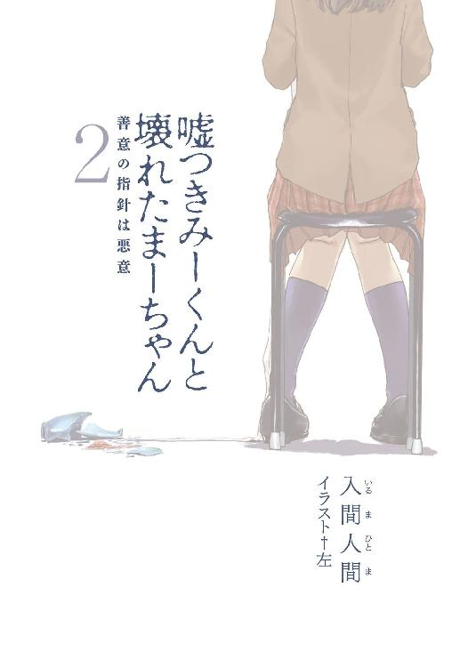
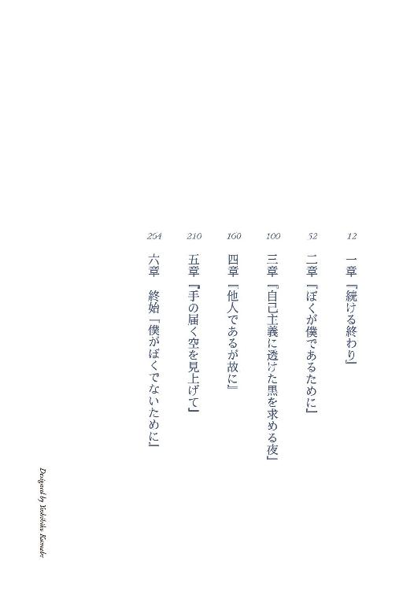
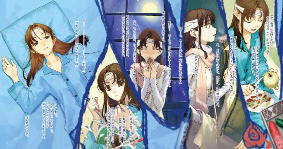
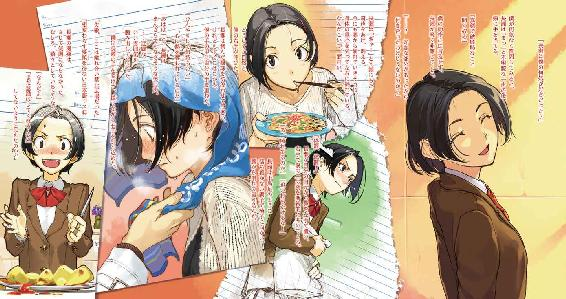
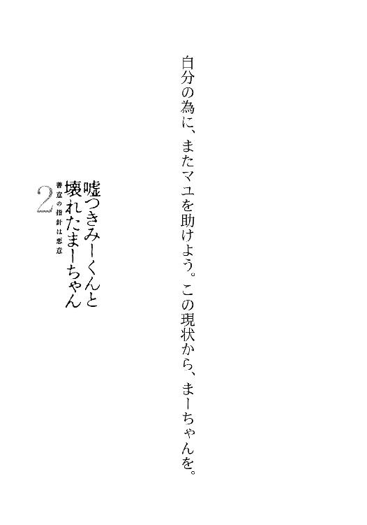
本書（電子版）に掲載されているコンテンツ（ソフトウェア／プログラム／データ／情報を含む）の著作権およびその他の権利は、すべて株式会社アスキー・メディアワークスおよび正当な権利を有する第三者に帰属しています。
法律の定めがある場合または権利者の明示的な承諾がある場合を除き、これらのコンテンツを複製・転載、改変・編集、翻案・翻訳、放送・出版、公衆送信（送信可能化を含む）・再配信、販売・頒布、貸与等に使用することはできません。
始終『誰かが誰かのために失ったものを前にして』
死体は何を考えているんだろう。
丁度、お話を伺えそうな屍を眺めて、そんな疑問が浮かんだ。
鼻がむず痒くなる刺激臭と、滴る血が間を置かずに凝固しそうな冷気に包まれた室内は、決して寝心地に二重丸の付く環境ではない。不平を、漏らせずとも感じないのだろうか。
個人的な見解では死後であろうと無料だろうと遠慮したい。やっぱり彼の腕の中がいい。肉が腐敗しようとも抱きしめてほしい。逆の立場だったらご免被るけど。
体操着を着ていても違和感ないほどに、お行儀良く体育座りしている死体は、年齢が両手足の指で表現できそうな女の子。顔の前に手をかざしても、吐息はかからず目玉もぎょろつかない。首筋に......触れてみようとした手は引っ込めた。指紋を残すのは後々、面倒になるかもと危惧した。一応、脈ぐらいは測っておこうと思ったのだけど。
とにかく、飾り気の一切ないすっぴんの死体が目の前にあるのは確かなわけで。
どうしよっかなー。
死体は殺されているから死体だ。病気であれ自分であれ時間であれ、手を下すものがいる。
その中で最たる問題となるのは、他者による死体の製造だ。これについて目撃した場合、民間人は警察のお歴々に通報するのが義務だ。けど、しかし、いや、だけれども。
......むー。
こめかみを押さえて、嘆息し唸り、屈伸運動で寒さを紛らわしながら頭を捻る。
......あ、閃いた。
ぽん、と静寂を崩さない程度に柏手する。
見なかったことにしよう。
面倒事を可能な限りに避けたいと判断する脳味噌も、十分に一般人の範疇ではないかと思ったりする。主に自身の正当化の為に。
詰問されると困るあんなことやこんなこともあったりするし、ここは一つなかったということで退散と洒落込みましょう。がちゃり。
というわけで、善良な人が発見してくれる日を欠伸混じりに祈って、ばいちゃ。
かーえろかえろっと、死人の寝床に背を向ける。
自分は生きているので、ベッドの上で眠るのが相応なのだ。
......でも。
今日は月が綺麗だから、見物料にお仕置き代行してもいいかも、なーんて。
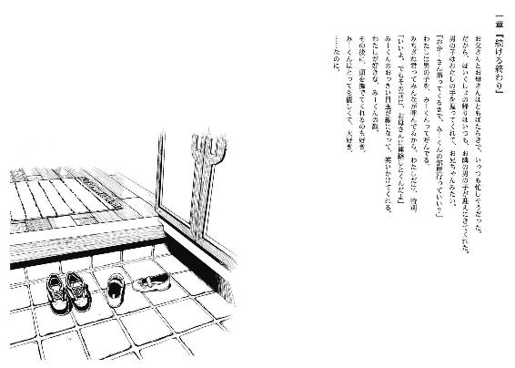
皮が剝けた。
現在、病室内で頭部に包帯を巻いた御園マユが、僕の横たわるベッドの脇で林檎の皮剝きを終えたという状況から一点だけ抽出してみたけれど、さしたる意味はない。余談だけど、この林檎は見舞品じゃなくて、マユが自腹を切って購入したものだ。見舞の定番である林檎、ないこともなかったんだけど。まぁ、いいや。
マユは一繫がりの赤い皮膚を平皿に落とし、ナイフを彫刻刀のように持ち替える。それから「なにがいい？」と、施す細工の内容を控えめな声で尋ねてくる。僕は脳味噌にばかり経験を積ませることを制し、唇の自主性を尊重した。
「鏡に映った林檎」
「..................？」
まーちゃんの首が傾いた。見かねた脳味噌が指示を飛ばした。
「エリマキトカゲ」
「嫌。みーくん以外の生き物嫌い」
「では林檎を映す鏡」とまたマユの頭を疑問符でいっぱいにする解答は喉元で取り下げた。
「まーちゃんにお任せするよ」
入院中、林檎を食べる前の常套句を受けてマユは作業を開始する。爪の延長上に刃があるように、容易い動作で林檎が刻まれていく。手先が器用という褒め言葉より、刃物の取り扱いに長けているという事実の方が似つかわしい、マユの挙動。
林檎を材料にした創作物の完成を待つ間、僕はマユの手元ではなく頭に視線をやった。今朝方取り替えたのか、包帯が真新しいことに気付く。
「.............................................」
宿命のライバルとの死闘から、一年の十二分の一弱が経過していた。微妙に誇張表現であることはさておき、半ば自業自得というか、僕から喧嘩をふっかけたのだから半ばという表現は菅原に対して失礼か。とにかく僕は、その菅原に大怪我を負わせられ、鬱屈しそうなほど暇を持て余す入院生活を嗜んでいた（これも余談だが、今尚、奴に幼少期の記憶の回復する兆しはない）。
外気温は息を潜め、逆に僕らの息は白色が付着して自己主張する季節が訪れていた。左腕は固定が解除され、足も松葉杖での移動を許可された。寝たきりでマユの介護を受ける日々は終わった。はいあーんと言われて口を開ける食事風景は失せた。右利きなのになぁ、僕。
閑話休題。で、外は枯木が乱雑に立ち並ぶ冬景色となった。入院中の身では、その程度しか生活環境に変化がない。後は、同室の人間が多少入れ替わったことと、時折現れる見舞客が安穏で退廃的な生活の表面を波立たせるぐらいだ。......ああ、見舞客といえば。
二週間前に、マユの祖父母が訪ねてきた。マユ祖父は身なりの良い紳士風。まるで高校時代からあだ名が爺だったかのように熟練と気品の動作が染みついた、自然体な老人だった。マユ祖母はくたびれていない肌と髪の持ち主で、まるで女学生時代から以下略。
面識がなかったので、最初はどちら様かと目を白黒させた。マユ祖父の方が御園と名乗ったところで合点がいった。
『お噂はかねがね』『マユから聞いてるのかね？』『いえ一度も耳にしてません』『だろうね』
予定調和が成されていたように、淀みのない会話だった。それから二、三言社交辞令のように怪我の容態について会話し、締めにマユ祖父が一言『マユとこれからどうするんだね？』と詰問に限りなく寄った質問をしてきた。今こそ『お嬢さんを僕に下さい』の出番かと思ったけど、冗談の通じない御仁であることが濃厚な雰囲気だったので『可能な限りは彼女の支えでありたいです』と脱臭剤必須の受け答えに留まった。マユ祖父はその後、一言だけ質問してきた。そして五分ほどして二人は病室を後にした。マユ祖母は終始口を開かず、会釈もなかった。
次に白衣抜きの恋日先生が仏頂面で姿を現し、僕を七発殴打（グーが四、パーが三の割合）して、古い医療漫画全巻を土産に置いて去った。命の尊さを学べ、と解釈することにした。
そして御園マユ。この子は、見舞じゃないんだよな。
「できた」と、マユがナイフをサイドボードに置き、皿を僕へ差し出す。
その上に、中央あたりが細く削り取られ、団子が重ねて置かれているような手垢だらけの林檎が逆さまに鎮座している。今度は僕が首を捻る番だった。
「なにこれ。瓢簞？」
「雪だるま」
制作者は事もなげに言った。
......うん、いやまぁ、生き物ではないよな。黙ってありがたく頂くことにした。歯を突き立て、丸囓る。
「美味しい？」
「うん最高、まーちゃんの手垢が味を引き締めてるよね」と別の病院に転移を勧められそうな感想を無難に口にしてみた。マユが嬉しそうに頰を緩めたので、言った甲斐はあった。
「まーちゃんも食べる？」「うん」
林檎の反対側にマユが囓りつき、咀嚼し始める。シャリシャリと音が立ち、同室の方々の視線が集う。隣のベッドの度会さんは少し腰が引けている。
......妙だ。やっている内容は、二つのストローで一つの茶を啜る恋人達と同様なのに、何かが違う。目と目がこんなにも近いのに、これでは恋人の甘い一時というより家屋を囓る白蟻ではないか。ガジガジ。
そして、林檎の画期的な食事法を研究していると、配膳車を押す音が廊下から鳴り、こちらへ近づいてきた。それだけで昼食の時間だと胃腸が理解する。
扉が開き、昼食を運んできた看護師さんは何時でもテンションが高い女性で、皆に活気と幾ばくかの疲労を提供している。
「バカップルっつーかただのバカにしか見えないキミ達、飯食え」
看護師さんの言葉は呆れを多分に含みながらも、表情は微笑ましそうだった。
指示通りに林檎を皿へ戻し、二人分のトレイを受け取る。
そう、マユの分の食事も配給される。勿論、ここはマユの病室じゃない。
だけど、患者の要望は可能な限り叶えるものだ。
そう、今現在、マユもこの病院に入院しているのだ。
マユの頭部には真新しい包帯が幾重にも巻き付いている。勿論それは考えるまでもなく怪我をしたからであり、当然のことながら負傷を療養する為に入院しているのであり、言うまでもなく自傷行為に及んだ結果である。
マユは、花瓶で頭を殴ってその足で病院に来て、入院すると血だらけで宣言したらしい。
僕に、毎日お見舞に来るのはやめて、偶には学校行こうねーと諭されたから。
だから、彼女なりに思案し、その行為に及んだのだろう。
マユは自分なりにベストを尽くしたのである。その健闘を讃え、僕の胸に響いたその想いに準じて褒めちぎった、のは流石に大噓である。久方ぶりに、猿では多少難儀な反省をしてしまった。
「みーくん」と、マユに服の袖を引っ張られて意識が外側に移る。
「これ食べて」
マユがしかめ面でコーンサラダを僕に渡す。マユは好き嫌いが激しい。
「任せとけ」
僕は受け取り、三秒その小皿の中身を眺め、ひとまずトレイに置いた。
僕も好き嫌いが激しい。
隣のベッドに居座っている度会さんという、死に際、エロ本を遺産として託しそうなぐらい好々爺している人に差し出せば快諾して食べてくれるけど、看護師さんがいてはそれも許されない。残飯なるものをこよなく嫌う、学園の食堂のおばさんみたいな人である。
だから最近は、配膳を終えた看護師さんが病室を離れた頃合いに不法投棄を試みている。もっとも、勿体ないお化けを恐れる度会さんが「すてるならくれ」とそれを食べてしまうのだけど、僕としては止めようがない。
開いた扉から覗ける廊下を、スーツ姿の若人二人が駆けていく。病院の廊下を走って咎められないとは、彼らの立場に若干の興味が湧く。
そういえば今日は朝方から、病院全体が騒々しく、落ち着かない。そのことについて、看護師さんに尋ねてみた。
「なんか、騒がしいですね。大きな事故でもあったんですか？」
「んー？ 患者が一人、昨日の朝から行方知れずで探してるの」
「......失踪、ですか」
「神経質なご両親が警察沙汰に騒ぎ立ててさ、律儀にウチまでご出勤してるわけ。仕事の邪魔なんだけど」
毒づきながら、ワゴンを押して廊下へ出ていく。後ろ手に扉を閉める間際、「残すなよー」と一言付け加えて。
......行方不明の患者、か。
何だか、随分と泥より生臭い物の匂いが目立つ街と化している気がするのは、杞憂かな。
「ねえ」
くいくいとマユに袖を引っ張られる。振り向くと、能面顔がしかめ面を被っていた。
「どしたの？」「今の女、嫌い」
気持ち小声で、マユは露骨な嫌悪感を吐き出す。
恋日先生に向ける負の感情とは、また少し趣の違う、生理的な否定。
「ふぅん、気に障ることとかあった？」
「別になんとなく。あんまり話とかしない方がいいよ」
根拠がなくても迷いと揺らぎのない、マユの忠告を僕は「分かった」と適当に受け止める。
それから、マユが摑む二本の箸が煮物を摘み、僕の口に向けられた。
マユは余所行きの表情のまま、「あーん」とか命じてくる。
実は全く終わっていなかったりする。
「......いや、僕もほら、手は動くようになったし」「口開けて」「......あが」
結局僕は、口を馬鹿みたいに開く。
結局僕は、『みーくん』のままでここにいる。
患者が一人、行方不明。
その事件は当初、僕にとって問題となるべき事柄ではなかった。
翌日に起きた出来事の方がよっぽど衝撃的だった。
長瀬透が、僕の下に現れた。
長瀬透は僕と同学年で、名前の印象とは裏腹に女子高生で、一年生の頃は同じクラスで、短期間だけバカップルしていた、元彼女だった。
昼下がり、昼寝に余念のないマユを傍らに医療の尊さと印税についてを漫画で学習していた僕は、一年以上も交流の途絶えていた来訪者の姿を認めて目下の血の気が引いた。
制服姿の長瀬が緩やかな歩調で距離を詰めてくる。同部屋の高校生や中年が、それを目で追いかける。「また女が見舞かよ」と、誰かの愚痴が耳に届いた。ちなみに僕がいるのは四人部屋で、内訳は僕と度会さん、軽薄そうなニキビ、もとい高校生、無口な中年という面子である。
長瀬が僕の正面に直立し、一年前とは少し異なる笑い方をした。
「よッス」
曖昧に、距離を摑みかねている笑顔。
僕の目にそれは、とか冷静な解析出来る精神状態ではなかった。緊張に伴う内臓全体の圧迫が胃液の味を口に広がらせる。彼女の変更されていない口調も、それに拍車をかける。
何故、と二文字が疑問の川を逆流する。長瀬の妹の見舞に来るなら理解する、けど、何で僕の下に足を運んでるんだよ。学校の教師共は何を教育してるんだ。
「......長瀬さん？」「ッス」「透さん？」「今は違うッス」
約束、と長瀬の唇が蠢く。ああ、そっか、そっか。
「顔色悪いッスね」
「よ、容態が急変したのだ」
長瀬は手の平をスカートで拭い、足をもつれ気味にしてベッドの脇に回る。そこで、僕の腕を抱き枕にして惰眠を貪っているマユに気付いたらしい。瞼の開閉速度が上昇した。便乗して僕も背筋に冷や汗が噴き出た。今、マユがお目覚めになられたら道端の雑草を踏み潰すより容易く僕の息の根をお止めになられる公算が強い。
「外行こう」
そう提案し、長瀬の意見を待たずに準備に入った。漫画を放り出し、マユの手足を慎重に引っ剝がして松葉杖を取る。足回りの一段階大きいスリッパを左足だけ履き、名ばかりの防寒具であるジャケットを羽織って、競歩の気概で病室を出た。入り口で振り返ると、布団が友達の度会さんが呆然と、尖りのない驚愕を浮かべて僕らを見送っていた。僕の女性関係に恐れを成しているようだ。噓だけど、と。よし、平静を手繰り寄せ始めている。
長瀬は急ぐそぶりもなく、あっさりと僕の隣に追いつく。
「忙しないッスよ」
淀みのある僕の様子を客観視して、逆に落ち着いたらしい。声には余裕さえ窺える。
「誰の所為だと思ってるんだよ」
「自分の所為だとは思いたくないッスねぇ」
綽々な台詞を返してきた。僕は流し目で一瞥し、唇は開かない。
「でも、外に出るなら上着の一枚も貸してくれるかと期待したッスけど」
僅かに毒を忍ばせた、長瀬の明るい失望。
そこまで気と血と頭が巡っていなかった。ついでに、感情も。
「おや、バツの悪そうな表情。見舞に来てみただけなのに、気を遣わせて悪いッスね」
本当だよ。というか、今日も清く正しく学校生活を送ってきたのなら、通学用に準備しとけばいいのに、と心の内で毒を小さじ一杯分、精製した。
廊下の突き当たりの階段を昇降どちらにするか悩み、大差ないと結論づけて屋上へ向かうことにした。一段登るごとに手間暇をかける松葉杖の僕を心配したのか見かねたのか、「手伝おうか？」と長瀬は親切を差し伸べてくれたけど、丁重にお断りした。ただ、屋上への扉は長瀬が開いた。
屋上に出るのは、入院生活で二度目だった。その、敷地内で最も宇宙に近寄った場所は、寂れた黄緑色のベンチと、大量の洗濯物が冷風に晒されていた。そこへ、晒される者二名が追加される。天候は雲一つない青空と太陽の取り合わせなのに、身震いする寒気が降り注いでいるようだった。当然、僕ら以外に人気はなかった。だから丁度いいのかも。
「ざびぃっず」
鼻水を啜りながら長瀬が不満を訴えてきた。スカートの下の太股を摺り合わせている。
「喫茶室を希望するッス。自分は水だけでも我慢するッス」
「駄目だ。友達とかに噂されると恥ずかしい」
「思春期入門したての中学生ッスかあんたは......」
長瀬は呆れ半ばに諦め、僕と隣接してベンチに腰かけた。ベンチは二人分の体重を支え、仰仰しく軋んだ。長瀬の尻に敷かれた時の方が、音量が賑やかだったのは空耳だろう。
深々と深呼吸する。氷の粒を含んだような空気を肺に詰め、身体の内側に溜まっていた膿のような心労を吐き出すよう努める。何度か繰り返し、引きつり気味だった四肢も自然体に復帰させた。
そして、僕の落ち着きを見計らい、長瀬が口を開く。
「透が元気そうで良かったッスよ」
長瀬透は、僕のことを『透』と呼ぶ。ついでに妹の長瀬一樹も姉を真似て、僕を『とーる』と呼ぶ。僕と名前を交換する遊びをして以来、それはまだ継続しているらしい。
××と透。互いの不似合いな名称が、打ち解ける切っかけとなった。
「一樹から聞いたの？」
「うん」と長瀬は頷く。
長瀬の妹、長瀬一樹（こいつは、自身の名前を気に入っている）はこの病院の常連さんだ。といっても病弱な子ではない。多種のスポーツや空手等々を習い学び遊び、その結果として骨折や捻挫の回数が多いのだ。今も左腕を療養すべく入院している。互いに顔見知っているので、僕が入院してからも、何度か顔を合わせている。
来年で五年生と話していたから、浩太君と同い年になるわけだ。
あの子達は元気に学校へ行ってるのかな。
「つーか、なんで怪我したッスか？」
風にそよぐシーツやタオルを目で追いかけながら、長瀬が質問してきた。
「夜の校舎の硝子を素手で割ろうとして失敗した。足の方は欠片を踏んだ」
「だせー」
微塵も信用を勝ち得ていない、素っ気なさで塗り固めた口調だった。
向かい風が吹き、長瀬の付けているコロンの匂いが微かに鼻孔をくすぐる。
「で、どんな用？」
かさついた唇と、張り付く喉が発音を邪魔する。風の音に紛れず、伝わっただろうか。
「用って？ お見舞に来ただけッスよ」
長瀬は気負いも萎縮もなく、ただ返答する。
「今更？」
「今更って、確かに透が入院したのは一ヶ月前ッスからねぇ、ちと遅かったかな」
「いやそうじゃなくて......あー、ほら、僕らの関係的にだよ」
気まずさを心の縁に感じているのは、僕の方だけなのか。
「一年ぐらい」「一年と一ヶ月と十二日」僕の大雑把な示しに、長瀬の厳しく正確な異常さも垣間見える修正が飛んでくる。「......それぐらい空いてるだろ。メールも電話も繫げてない。色んな形で繫がりがもう消えてたんだよ。そこにひょいと現れるから、疑うさ」
「ふぅん、電話してほしかったの？」
長瀬は何処か楽しそうに、僕の顔色を観察する。僕は、躊躇わなかった。
「長瀬を好きだった頃は、そうだったかも」
今されたらマユの果物ナイフの矛先が林檎から僕に変更される。そうしたら僕のこの傷は意味を失い、救済の手を差し伸べた妹の母親に面目が立たず、みーくんであるという意味とか運命とか必定の偶然に対してとか壮大に風呂敷を広げすぎて収拾がつかなくなったので、噓だけどってことで締めくくった。
長瀬の表情から明るさが消し流される。これは人間関係における『地雷』を踏んだかなと、身構える。爆発されたら、と危惧する心。
けど、「全部過去形ですか」と小さく、けれど独白とは異なる声調で呟くだけで、表面上は不発だった。
「でも私たち、別れ話とかちゃんとしたっけ？」
身を乗り出して、長瀬の表情が陰鬱から陽気にくるりと変わる。悪戯じみた笑顔を浮かべる彼女の香りが近づき、些少ながらも心が乱れた。
「しなかった記憶はない」
「相変わらず回りくどい喋りッスね」
「......こんな話しても、今更だ」
「分かってる」と長瀬は身を引いた。それから一度、寒気に身震いした。
「屋内に戻ることを希望するッス」
「そうしよう」
何でこんな寒空の下にいなければいかんのだ、全く。面会室をどうして使わないんだ。
両者とも一致する不満の解消を求めて、屋上から逃げ出した。
そういえば、屋上か。屋上に、うら若い女性といたのか。
「おや、また顔色が悪くなった。信号ごっこッスか？」
「ちょっと、鶏になった時の記憶がフラッシュバックしてね」
「はぁ......透は難儀な男ッスね」
階段の踊り場で、長瀬は投げやりな感想を漏らした。
「で、まだ別れ話する？」
「しない。分かってるって言ったじゃない」
そう言う割に、口調や口の歪み方は素直に納得していないことを主張している。今にも気晴らしに松葉杖を蹴り飛ばしそうな、そんな苛立ちが逃げも隠れもせず表れている。
階段を無事に下りきった時は、安堵に肩の力が抜けた。
長瀬が、僕との微妙な距離から一歩踏み出す。
「帰るのか」
「一樹のとこにも行ってくるッスよ。今はちょっと不安がってるし」
「不安って、何が？」
「知らないの？ 一樹と同じ部屋の人が失踪したッスよ」
......ああ、昨日言ってた、行方不明の人か。
「あいつ、病院は慣れっこのくせに怖がりだから。未だに夜、トイレに一人で行けないッスよ」
「人間、一つぐらいは怖いものがあるよ。僕だって借金には恐れを成してしまう」
「夢のない怖さッスねぇ......」
そこでようやく、長瀬は昔と酷似した笑顔を僕に向けた。
それだけで、僕と長瀬の間にある淀んだ空気が些少だけど、緩和された気がした。
長瀬が改まったように姿勢を正し、僕と向き合う。
「もの凄く嫌だったら、もう来ないッスよ。一樹の見舞のついでだし」
「......もの凄くってほどでもないけど」
「じゃあ来るかも」
屈託なく微笑む。今の、断らせる気なかっただろ。
「それじゃ、まーちゃんによろしく」
長瀬はそう言い残し、階段を一段ずつ飛ばして下りていった。
僕はそれを見送り、ふと気付く。
まーちゃん？
「......何処で知ったんだか」
どういう意味で、言ったんだか。
病室に戻ると、マユは寝惚け眼で窓の外を眺めていた。隣の度会さんは体調を崩したと言って検査も受けずに毛布を被っている。この人、今は何処が悪くて入院してるんだ？
「あー......どこ行ってたの？」
寝起きの所為で、弛んだ物言いになっている。僕はベッドではなく椅子に腰かけて「トイレ」とすぐメッキの剝がれそうな噓で偽った。マユは際立った反応を見せず、口の中で明瞭を得ない言葉を蠢かすだけだった。
「そろそろまーちゃんは退院出来るね」
マユの包帯と髪に触れる。髪が洗えないと文句を垂れて毎晩、勝手に包帯を外してしまう為、風呂上がりには僕が巻き直している。お世辞にも世界遺産に認定されるほど美しくはない。
「みーくんが治るまで無理」「無理じゃないの」「無理なの」
頰が膨れ、露骨に拗ねを表現する。それから、その表現が毛布を頭頂まで被るという行為でも示され、子供っぽい断絶を図られた。
「まーちゃん、ここは僕のベッドなんだけど」
肩を揺らしても、マユは無視している。
そこで、興味本位に毛布へ手を入れ、足の裏をくすぐってみた。マユは敏感に反応し、足をばたつかせて悶え出す。彼女の鮮度と活きの良さに、僕の漁業魂は感化されてその他諸々まで巻き込んで燃え尽きた。その志を放置していたら遠洋漁業への門戸を叩く自分の姿が困難に想像出来たので大助かりでもなんでもない。何が噓なのか、自分でも判別できなくなってきた。
くすぐりを継続しながら、長瀬のことを振り返る。
長瀬との思い出は、まだ苦さだけではなかった。
数日後、マユの包帯は医者の手で外された。
そして一層、増量した包帯がマユの頭を覆った。
マユの使っている病室は個室で、専用の浴室が備わり、電磁コンロまで設備の一つとなっている。お値段の方は入院代とは別個で一日の使用料金が一万五千円強という大変リーズナブルと俺に言わせてみせろ。金持ちという概念は本当にあったんだ、と人々が感慨に耽る為の値段設定で、けれどその部屋が実際に利用されているのだから世界の奥深さには呆れと驚嘆がひしめき合っている。
その、僕自身は一生涯寝泊まりしそうもない部屋で、一人惚けていた。
部屋内は暖色系の色彩に包まれ、浅薄な白を基調とする院内とは月曜日と金曜日ぐらいかけ離れている。ヒーターの稼働音が鼓膜を揺らし、眠気を誘う。
ベッドの端に尻を下ろし、足を伸ばしきって退屈と遊ぶ。この部屋の借り主であるマユは、警察に事情聴取を、被害者として半ば強制で受けさせられている。僕はその帰りを忠犬的に待ち焦がれていた。噓だけど。
「.............................................」
今日の午前中に、マユは再度、頭部と花瓶を巡り合わされた。白昼堂々、この病室で彼女は血塗れになり、今回も気絶することなく自前の足で歩き通して医者に治療を依頼した。
ただ、前回との差異が一点ある。
今回は、他人に与えられた傷ですね。僕に事情を説明した医者はそう言った。
僕自身は、まだその新たな傷を与えられたマユと目や鼻をつき合わせていない。
餌を求める忠犬ばりに、彼女のお帰りを待っていた。
松葉杖で床を打つ。鈍い音が、部屋に響かない程度に鳴る。
最初の傷は、花のない花瓶で頭頂部を、自身の手で。
だけど、今回は真っ赤な彼岸花の咲いた花瓶で、額の僅か上を他人の手で。
また床を打つ、打つ、打ちつける。
「ったく、何てことをしやがるんだ」
マユを苛めていいのは僕だけなのに。
「......噓だけど」
まーちゃんを苛めないのがみーくんだしね。
まあ、ある日犯人と顔合わせでもしたらハムラビ法典を懐から取り出す程度に憤慨しとくか。
そんな僕の状態に追い打ちをかけるように、横開きの扉が開放され、一桁の温度の空気と共に笑顔の来客が僕を出迎えさせた。
「きゃー、みーくんだー」
素敵に魔笛に鼓笛まで付きそうな悪びれもしない笑声。
こちらもつい、「ジェロちゃん久しぶりー」と、フランクな受け答えをしてしまう。
「まーちゃん以外にみーくん呼ばわりされるのが嫌なら、もう少しお顔で表現しましょうね」
「ご忠告痛み入りますが、痛かったらちゃんと右手を上げるようにしてますので」
上社奈月さんがつかつかと歩み寄ってくる。髪を下ろし、長袖のカットソーにチェックのスカート、それと長すぎるマフラー。ふとした拍子に絞殺されるんじゃないかってぐらい、首を防護している。この人、実年齢と見た目が比例していないから大抵の格好が相応になるな。
僕の隣に、滑るように座り込む。
「今日はボーダーの服じゃないんですね」
「あれは勝負服です」「なるほど」
あの日、誰と勝負していたんだろう。看守か？
奈月さんの顔が間近にある。唇が艶やかで、肌も乾きを訴えていない。
「入院の下見ですか？」
「ご期待に添えなくてすみません。みーさんに会いに来ただけです」
美人のおねえさんみたいな人にそんなことを言われて、素直に喜べないのは損なのかも知れない。でも僕は、奈月さん相手ならそれで構わないと思った。
「来てみたら何やら問題が発生してるみたいですね。人が消えたり、マユちゃんが襲われたり」
「ええ。あ、僕も奈月さんにお見舞いされたりしてるんですよ」
「まあ、みーさんにとっての問題として扱って頂けるなんて、恋日に夜道で問いつめられそうなほどの光栄ですね」
奈月さんがテレビのリモコンを手に取った。スイッチを入れ、チャンネルを日本放送協会に固定する。丁度、連続テレビ小説の昼放送が始まるところだった。個室のテレビはカードを購入しなくても鑑賞出来るらしい。
「みーさんは素敵な娯楽ですね、無人島暮らしの際には是非持ち込みたい逸品です」
あんた無人島っていう条件の意味分かってんのか。それなら僕だってマユとか持ち込むぞ。
それにしても薄々感じてはいたけど、僕のことは玩具扱いなんだな。
僕と遊ぶか、僕で遊ぶかの差異は判別し辛いけど。
「では、そのご期待に添えるか分かりませんが、小話を一席」
僕の台詞始めに奈月さんの眼球がスライドし、見据えてくる。線目だから、非常にその変化が捉えにくい。貴方がそんなこと考えてる人だとは思わなかったって、テレビの中の人にも言われてますよ。
「これは僕の友達の話なんですけど」「みーさんはお友達がいたんですか？」
「早とちりしました、まだ知り合いです。劇場版の冒険を通じることで心の友となります」
「なるほど、納得です」という奈月さんの受け答え。
「早く答えなさい」と妻が浮気した夫を叱責する、テレビの音声。
一拍置いてから、例え話を紡いだ。
「僕の知り合い、男なんですけどね。そいつは現在進行形で付き合ってる彼女がいるんですよ。で、ある日突然、一年ぐらい顔も合わせてない元カノが知り合いのところに現れたんですよ」
「出血具合はどうなんです？」
「先走りすぎです、刃物沙汰の修羅場にはなってませんよ。元カノは軽く世間話をしてあっさり帰ったんですけどね、やっぱり知り合いは気になるわけです。それで、奈月さんは元カノの行動をどう思いますか？」
「慰謝料の遠回しな催促と見ました」「別に知り合いは妊娠騒ぎを起こしてません」
駄目だこの人、独立した口の厚顔無恥な会話を容認してる人種だ。知り合いにそっくり。
奈月さんが顎に手をやり、探偵的なポージングを取る。「この泥棒猫！」と妻が浮気相手に摑みかかるお約束台詞がテレビから飛び出して、そちらに目が反応した。
「冗談を抜きに、まずその知り合いは大噓つきのトンチキと察しました」
「トンチキさんですか」ある人が思い出から浮かび上がった。けど今は関係ない。
「で、元カノさんはそのトンチキさんと、ヨリを復縁しようとしていますね。泥棒猫です」
「.............................................」今、叫んでたから使いたかっただけとかじゃないよな。
「或いは、そもそも別れ話を明確に行っておらず、片方が合意していないとか」
知り合いを直視しながら奈月さんが意見をぶつけてくる。知り合いは頰を搔いた。
「どちらにしても、トンチキな知り合いさんの命は風前の灯火ですね」
「いや、知り合いは現彼女がライクライクベリーライクなので問題はない、はずなんです」
「蚊は血を吸う相手の人間関係を考慮しません。それから、まとわりつく蚊を振り払うことに罪悪感を抱く人間も、あまりいないでしょうねぇ」
奈月さんの比喩は的確だった。冷めて、情を廃止した視点から語って、実に的確だ。
終わりですか？ と目で尋ねてきたので、僕は「もう一つ」、と告げた。
「これは漠然とした質問なんですけど」
「みーさん自身も漠然としてますよね」
誰もそんな事実は聞いてません。
「......思い出せない記憶に価値と意味があると思いますか？」
「マユちゃんのことですか」
奈月さんは思考する手順を省き、言い切った。僕は何となく否定した。
「違いますよ。たとえば五歳の頃、十一月七日に食べたご飯、起こった出来事を明確に記憶している人は数少ない。だけどその記憶は、失ったわけじゃなく、ただ眠っているだけなんです。近隣に爆弾が投下されても目覚めないほど、致命的な居眠りであっても。それでもその記憶に、意味とか価値があるのかなぁって」
推理ポーズを解かないまま、奈月さんが少し難解な表情になる。
「ある......んでしょうか。行動は肥やしに......でも、記憶は劣化、改竄......難しいですね」
「真面目に考えてもらわなくても、ちょっとした思いつきだったんで」
「私はどちらかというと、みーさんがそんなことを考えるに至った過程に興味があります」
「実は」「そろそろお暇しますね」
僕の説明はシャープペンの芯より容易く折られた。けど僕の精神はシャープペンの芯ぐらい替えが利くのでその程度で落ち込むことはなかった。
「もう帰るんですか」
滞在時間が十分以下の奈月さんを、引き留めはしないけど声ぐらいはかける。「帰れ」と浮気相手に喚き散らす妻の声援を背にして。
「患者が行方不明になった事件の調査に、私も微力ながら力添えしたいので」
まるで捜査協力に乗り出す探偵のような喋り調子の奈月さん。
「それに、マユちゃんが戻ってきた時にいては、厄介事になるでしょうから」
ご迷惑より危険指数が勝っている表現で、僕もそれに納得した。
それから奈月さんが、「あともう一つ」と某刑事を意識したように、質問の前置きをする。
「今回の件について、マユちゃんがどうして傷つけられたか、みーさんは分かります？」
それだけを尋ねに、ついでとして訪れたのだと僕はようやく理解した。これを遅咲きの桜という噓。
「......こんな痛ましい事件に、何故妻が......彼女は殺虫剤を使わず虫を殺すような子なのに......」
「まったくです」と、本当はそう思ってなんかいそうもない態度で爽やかに受け答えをする奈月さん。
それからすぐ立ち上がり、颯爽と入り口に向かう。
僕は数拍の呼吸をする時間分迷ってから、「奈月さん」と、その背中を呼んだ。
「はい？」と、柔らかい微笑が振り返る。
「マユは、きっと何かしたんです」
「あら、言い切るんですね」
「美人、入院、美女と三要素が重なってですよ、事件の介入する隙間がないと誰が楽観視出来るかという話で」「ありがとうございました」
何に対しても向けられていない礼で僕の熱い主張は断ち切られた。ブラウン管の中で、夫を苛む妻の視線ぐらい冷え冷えとしながら笑顔の奈月さん。
「というわけで、何かあったら協力して下さい。主にマユという国宝を守る為に」
「了解です、その前にみーさんは日本語の勉強をしてから国外に追放されて下さいね。では今度はマユちゃんの眠っていそうな時間にお訪ねします」
私的ではないかもしれませんけど。
格好つけた台詞を紡ぎ、その直後に取ってつけたように「お大事に」と社交辞令を述べた。
奈月さんが廊下に出て、スライド式の扉がゆるゆると閉じられた。
それによる風圧の所為にしてばたりと、僕は後ろへ倒れた。
シャンデリアじみた、華美な電灯が天井を栄えさせている。
それを眺めながら、渦巻いている靄をどう換気すればいいのかと、皺を追加して悩む。
起こすべき行動を、僕は探したいのかも知れない。
見上げたテレビでは、豆腐屋の親父が妻に、家の外へ蹴飛ばされて追い出され、今度は浮気相手に問いつめられていた。
頰の歪みが、どうしてか抑えられなかった。
パタパタと、スリッパが早足に応じる効果音がした。
部屋の前でそれが途絶え、代わりに扉を横へ強く滑らせ、最奥へ激突させる攻撃的な音。
入ってきたマユは額まで隙間なく包帯が巻き付き、ターバンを思い起こさせる。
僕の姿を認めると、途端にマユの気難しい面構えは単純明快になった。
「み、い、くーん！」
大股で飛び跳ねた為、右のスリッパが爪先から、一足先に僕の下へ飛んできた。僕の頭上を通過し、カーテンに激突してベッドにぽとりと落下する。その直後に本体が僕に飛来した。僕の胴体へ頭から突っ込んで。おいおいおい。
しかしマユは苦悶とまるで縁のない笑顔を僕に晒す。
「まーちゃんね、警察に苛められてしょーしんなの」
うるうる、と自作効果音までつけてお上の悪行を報告する。
今回は味方してくれるはずなんだけどねえ。
「よしよし」
暗に髪を撫でることを要求してきたので、包帯に触れないよう慰めた。
「でね、また入院しちゃった」
「......あのね、ぜんっぜん良いことじゃないんだよ。満面の笑顔で言わないの」
「んもー、みーくんの照れ屋さん。まーちゃんが側にいないと泣いちゃうくせに」
かなり強めに肩を叩かれる。僕は殊更に否定する気力が湧かなかった。
マユに押される形で、一緒にベッドの上へ寝転ぶ。マユは僕の左肩に顎を載せ、採掘するように押しつけてくる。
「まーちゃんさ、最近変わったことをした？ それとも、起きてた？」
「えーとー......んむー、ちゅー」ぎゅー。「ぢゅー」
頰を摘み、縦タラコを作ってみた。
美女っていうのは、どれだけ崩れても最低基準は保ってるなぁ。感服した。
マユはそれでも飽きずにちゅーを求めてくるので、僕自身の頰も摘んで規格を合わせて、口を不格好に重ねてみた。......うーん、達成感はあるけどときめかない。
色気もないが、口を離したマユの精神の高揚は滞りなかった。
「結婚式の季節は春がいいなー」
「春か、まーちゃんは式中に寝ちゃいそうだね」
僕の感想を冗談と受け取ったのか、マユは幸福の塊みたいな笑い顔を形成する。
その表情の過程は偽りだけど、結果は紛ってなどいない。
けど違う。今はほのぼのしてる場合でも、式に招待する人を纏めてる場合でもない。参加人数はきっと極小なんだろうなぁと寂しがってる場合じゃない。誰に言われずとも噓だけど。
僕はマユの肩を押し、鼻先が触れない程度まで離す。それをキスの前置きと勘違いしたのか、瞼を柔く下ろす。僕は彼女の誤解を解こうと、瞼を外側から開いてあげた。そのまま会話する。
「怪我は大丈夫？」
「ぜんぜんへーき。でもみーくんが心配してくれるから大丈夫ではないのです」
彼女の日本語は度し難い。何弁だろう。
「誰に叩かれたとか、警察の人に話した？」
「ううん。知らないし」
気負いもなく淡々と、妙な否定をした。その後に眼球の乾きに悶え始めたので、指を瞼から離した。マユは両手で顔の上部を覆い、「涙が出ちゃう」と冗談めかした。
マユのつけられた傷は、額の少し上にある。だから、正面から襲われたという確率が高い。
犯人を目撃していると考えるのが普通、なんだけど。
「知らない、って......殴られた場所は？」
「んと、ここ」
記憶があやふやなように、自信なげに答える。
「誰か来た？」
「うーん、うん」
「うんうん、なるほど。で、それは誰？」
マユが眉間に皺を寄せ、「むー」と戸惑いの唸りをあげる。
「会ったけど......うー、分からない、うー......知らないのだ」
混乱の末、マユはまた不可解な否定を口にした。
噓をついて、ごまかしているそぶりじゃない。
......マユなら、あり得るかも。
僕はこの件についての言及を一旦打ち切り、最初の質疑に回帰する。
「で、最初に質問したけど、最近は変なこととかなかった？」
「変なこと......ちゅー」「は、お話が終わってから」
マユの額に人差し指を添え、お預けする。マユは「ケチ」と安直に罵倒し、ようやく記憶を振り返り始める。が、「うぬぬぬ」と苦悩する。
「あんまり一日の記憶がない。健忘症かな？」
僕は『たおやかに墓へ入れ』とマユ以外にだったら言うかもなぁ、と考えました。
「そーいえば、みーくんがあんパンを美味しそうに食べてた。甘いもの嫌いなのに」
あ、それは別の人だから。或いは、僕が別の人なの。
そう言ったらどんな顔をするだろう、と他人事のように想像してしまった。
「他にはないかな？」
「んーと、みーくんがね」「僕以外にないの？」「ない！ まーちゃんの毎日はみーくんだけなのだ！」
握り拳を掲げて断言した。そういう台詞はもう少し、平和な状況で使ってほしい。
「あ、でもこれは、ちょっと変わってるかも」
マユの脳内で豆電球が点ったのか、握り拳がぶんぶんと振り回される。
「どんな？」
「死体を見つけた」
眼球が膨張したように、悲鳴と激痛をあげた。
舌が根本まで乾ききってしまった。
僅か三文字を反芻するのにも多大な神経の酷使が求められた。
「.............................................死体？」
口から出るまでの過程で掠れ、摩耗した声で当否の確認を行う。
「うむ、あれは確実に死んでましたな」
したり顔で、なんてことのないように、とんでもないことを言い放ちやがったまーちゃん。
僕も死にそうだ。
「死体......死体か。そりゃ変わってるね」「そう？」「そう」
「で、いつ見たの？」
「何日か前」「......何処で見たの？」「病院」
......あー、落ち着け。僕の辞書にパニックという言葉はない。漢和辞典だから。
ここは医療施設。つまり霊安室という、合法的に死体を安置出来る部屋が備わっているはず。迷子のまーちゃんが犬のお巡りさんだか森の熊さんだかに連れられて、そこを訪れた可能性だって......ないか。数日内に誰か死亡したならこの小さな院内では噂話の一つは飛び交う。
それに仮に霊安室であったとしたら、意味はない。マユの頭部が負傷するということは、事件性がないと......「ん？ 数日前、死体......」
事件として、死体騒動なんて報道されていない。だけど、それとは別の理由でこの病院に警察の姿があった。今も大車輪ほどではないけど、三輪車の後輪ぐらいは院内で頑張ってる警察さんの目的。ブレーキの利きを無視してペダルをこぐ奈月さんのお仕事。
「失踪事件？」
「にゃ？」
もしかして。確定はしてないけど。
失踪事件は×。殺人事件が〇？
死体は、病院の何処かに隠されてる？
それを見つけたマユが、だから狙われてる？
「まーちゃん、死体のことお話ししてくれない？」「やだ」
「なんで？」
「みーくんと他の女の話なんかしたくないもん」
女？ ああ、死体が女の子だったのか。となるとやっぱり、長瀬一樹の同部屋だった患者の可能性が濃厚だな。他に失踪者がいるならともかくとして。
ぷっとマユが膨れる。おいおい、赤の他人の屍まで嫉妬の対象ですか。
......或いは、人の生死の区別が十分についていないのか。
「ねーえー、そんなことどーでもいいの。キスして、後結婚するの」
首に手を回し、無茶な要求をしてくる。取り敢えずその場しのぎで、簡単な方だけ実行することにした。......それはともかく、死体を目撃し、警察に証言しない。
それって、犯人なのでは。
「ねえ、どうしてそんな死体なんか見つけたのかな」
「ふと血の臭いを感じて」
朗らかな笑顔でサスペンスな台詞を発するマユ。あながち、冗談とも思えない。何かを隠している風でもない。本当に、その日ただ何となく死骸のお宅へ行き、そこにあった死体を目撃した、という無自覚に、悪意の匂いを感じ取っているだけなのかも、知れない。
「なんちゃってー」
僕が脳だけ働かせて他の器官をほったらかしにしていたら、唐突にマユが言った。
「.............................................何がなんちゃってー？」
「実はまーちゃん、死体をおんぶしてる奴を目撃ドキュンしたのだ！」
語尾も上がり気味に、得意気に言い放つ。拝聴する僕の気分は反比例に下降していく。
「......うんうん、それで？」
「まーちゃん、追っかけたのだ！」
「次からはそういうことしちゃ駄目だよ、危ないから」
「分かった！」
実にお元気良く不安な返事だ。「それで、それから？」
「まーちゃん、そいつがいなくなってから死体を探した！ 病院死体発見！」
ダダーン、と両手を滑空する為のように広げながら、自作のＳＥを挿入するマユ。
「そいつの顔とか見た？」
マユの手が下り、首を横に大げさに振る。
「暗くて分かんなかった。でも、身体は大きかったから男かな」
「ふむ、それで？」
「まーちゃん帰った！ おやすみ！」
そう締めくくり、その言葉をついでに利用して、ベッドに腰かける僕の膝の上へ頭を載せ、左右に寝返りをうつ。
......無論のことながらこのマユが犯人でないことを、僕は根拠もなく確信しているわけだけど、警察がどう捉えるかは別問題だ。即座に通報しなかったことは、恐らく疑惑の花を盛大に咲かす種子となりうる。その上、言いたくないがこの子の精神は四季折々が自慢の日本も吃驚仰天、空気の色を花粉で毒々しく彩るほどのお花畑。
そういった要素を、致命的であるとして攻撃してくる人間は、決して少なくない。
となるとこの一件、警察に駆け込むことは最後の手段となる。
他の手段はいずれも、自力に頼るしかない。
......普通に暮らしたいだけなのに。
「何で、こうなるかな」
「みーくんとまーちゃんが赤い糸でがんじがらめだからなのです」
マユの言葉は、本人の意図とは別に言い得て妙だと思った。
「......なんで、そんなことだけ興味を持つかな」
「んん？ よくわかんないけど、みーくんはやきもちをやいてるとみた！」
にゅふふ、と気味の悪い笑い声が似合うマユ。更に演出を狙って、両頰を引っ張ってみた。
「みぎー」
おお、伸びる伸びる。これはこれで、味のある表情だ。
......この子はまるで、誘拐や死体といった人の『悪意』と両想いのようだ。
惹いて、惹かれて。
そして、マユの言う赤い糸で繫がっている僕も、引きずられて。
......その赤が、トマトによる着色とかなら大歓迎なんだけどなぁ。
まぁ、いいや。些細なことか。
自分の為に、またマユを助けよう。この現状から、まーちゃんを。
死体、花瓶、長瀬透、それともう一つ。
何処までが、僕にとって重要な『事件』なのだろう。
まずはその見極めから、始めることにした。
「まーちゃんはあれだねー、どんな顔しても美少女だね」
「しゅぎー」
喜んだ。
取り敢えず、マユは面白い。
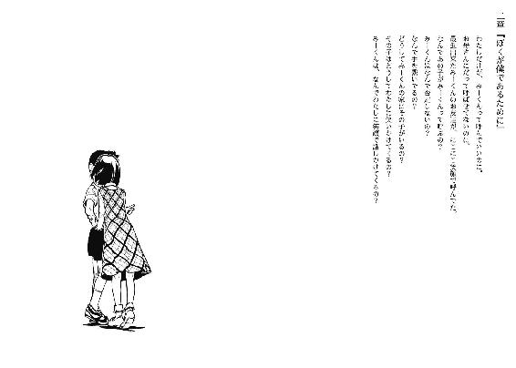
長瀬透は僕の隣にいた。
高校一年の二学期、席替えをした時のことだ。
『よろしく、××ちゃん』
当時はまだ、長瀬の語尾に『ッス』が付属していなかった。
名前を嘲笑されたように呼ばれ、僕は珍しく前頭葉あたりが薪をくべた。
『こちらこそ、トオル君』
言い返された長瀬は、露骨な嫌悪感を僕にぶつけてきた。
互いに自分の名前が嫌いだったのだ。
これを切っかけに、僕らの仲は無味無臭から険悪になった。
長瀬は視力の関係だとか担任に主張し、一番前の席の奴と場所を交換して僕から離れた。
僕は授業中、黒板の板書書きを見る際にも長瀬の後頭部が視界に入らないよう極力努めた。
この場合、どんな感情を根本にしているか定かじゃないけど、先に嫌味を口にした長瀬の方が悪い。しかし、比率はどうあれ、僕から謝ることだって出来る。
長瀬との関係を、視界の片隅に入る同級生同士にまで戻す積極的な理由が僕にはなかったから、行動には踏み切らなかったけど。
けれど、九月の末あたりで僕らの関係はもう一転する。
後期の美化委員の男子は僕（前期もだったけど）で、女子が長瀬に決まった。
僕らは互いを無視した姿勢を崩さないまま、げんなりした。
仮に御園マユが、健常な睡眠時間を取るだけで生活出来る心身を所持していた場合。
僕には、彼女以外との接触や会話を排除される運命が待っているだろう。
みーくんはまーちゃんとだけ向き合って暮らしていくことになる。
それが僕と彼女の達せられる最上の幸せであることは真実の余地がない。まだそこまでの領域に至れるほど、僕の修行は完遂されていない。出来ればしたくない。
そんな微妙なお年頃の僕が夕食前、彼女の目を盗んで足を運んでいる女性は長瀬一樹だった。
僕が東の病棟で、一樹は西病棟と正反対。廊下を四つは通過し、階段の昇降を二度要求される。片足で移動する僕は、普段の二足歩行が、どれだけ楽をしているか思い知らされた。まあ、それでも一週間前よりは改善された方だ。松葉杖を使い出した、最初の三日間は七転八倒じゃ済まなかった。今は大分慣れて、体勢を大きく崩すことはなくなった。手の平にマメをこさえてしまったけど。
それと道中、一人の警察の方とすれ違った。院内で話題のない時に噂話として利用できる、失踪事件に奔走する人だ。実は奈月さんも来ているけど、今は個室で眠るマユの側に控えている。マユを一人にすることは現在、大変好ましくない。傷害事件その他諸々があるからだ。よって救援を要請したら、意外にもすんなりと請け負ってくれた。仮にマユが目覚めても、奈月さんなら何とか切り抜けるだろう。いざとなれば『まーちゃん』と呼んでごまかすだろうし。
西病棟、すなわち女棟の二度目の階段を登りきると、左手側にトイレ、右手に病室がある。トイレの大冒険を敢行する予定はないので、面白みなく右折した。
一樹の病室を訪ねるのは初めてだった。病室の扉を開くと、室内は当然のことながら女性だけで四人部屋のベッドのうち、三つ埋まっていた。
手前のベッドでテレビを鑑賞しているお婆さんに会釈しながら、二、三歩部屋の中央へ向かう。そして、奥のベッドで窓の外を眺めていた、左腕を骨折中の一樹が振り向いて僕に気付く。僕が「よっ」と左手を挙げるやいなや、一樹がベッドから降り、スリッパも履かずに小走りで近寄ってきた。相も変わらず脳天気な、皺と縁のない面構えをしている。小学四年生というより、四歳児みたいだ。何処か、マユに似通った部分がある。
「おお、ナマとーるではないか」
動作は機敏なのに、喋りは舌っ足らずで緩慢。......おや？
普段なら挨拶代わりに体当たりを一発お見舞いしてくるような、感情を照れ隠しする為に軽い暴力を使用する性格の子なのに。今日は上下に身体を揺するだけで、手は出してこない。まあいいや、別に当て身されるのが趣味にまで高じてない。
「生ってあのね、焼き増しとーるがいるとでも？」
「写真やさんにたのめば楽ちんです」
パーマンや孫悟空より容易く複製出来るのな、僕。
一樹が左足に重心を置いて右足を浮かし、僕の後方を確認するように覗く。
「あれぇ、ねーちゃんは？」
「ん、別に一緒じゃないけど」
「ほほー、一人で会いに来るとはしゅしょーなとーるだ。けどおそい。ぼくも行くからって言って、もう三週間もたってるではないか」
「三週間前はまだ動けなかったでしょ」
「んん？ じゃー、今日から動けるようになったのかー」
「いや、一週間前」
「とーるのなまけもの」
「彼女の監視が厳しくてね。けど君の顔を一目見ないと、僕の人生を幸福にするのはもっと厳しくなるのさ」などと甘いとか臭い以前に、小学生相手では危険な台詞を吐く狂人としか捉えられない妄言は無論、口に出さない。
「高校生は色々忙しいのだよ」
売店で万引きとか森でエロ本探しとか小学生を誘拐とか（あくまでも一例である）。
「そーお？ ねーちゃんは毎日ひまっすーって言ってるぞ。あたし、女子サッカーと、道場と、ソフトボール行ってるからねーちゃんよりいそがしいっすー」
姉の口癖を真似て、暢気な空気を形成する一樹。この子は球技や武道といった、勝負事に向いていない性格をしてると僕個人は勝手に予想評価したり。ただ、習い事は長続きしそうだ。
それにしても、姉ちゃんどころか僕より多忙かも。僕の休日なんて......ま、振り返るまでもないか。ビデオでその様子を録画して、後で客観的に見た場合に頭から鼻血吹き出しそうなぐらいの羞恥を覚える程度の、慎ましい休日だから。
一樹の後を追う形で、ベッドへ招かれる。上機嫌の一樹が、テンポの一つ遅れた鼻歌を演奏している。何だか、随分とお気に入り登録されているわけである。遊び相手がいないので、退屈しのぎの到来に浮き足立っているだけかも知れないけど。
一樹は先程同様、ベッドに収まる。僕は脇の椅子を借り、松葉杖を壁に立てかけながら、窓を背後にして座る。背中にかかる陽射しが、室内の暖房の暖かさとは別に、生温い。
「ねーとーる」
寝取る、でもなく寝とる、でもなくねぇムー〇ン、的な呼びかけである。念の為、注釈。
「あたし、びじんになれるかなぁ？」
そんなことは占い師か詐欺師に尋ねろ、とは突き放さなかった。
「ハードルの設定によるな。どれぐらいの美人が目標？」
「そうだなー、お店の商品がぜんぶ五割引で買えちゃうぐらいのびぼーを持ってる感じ」
「顔より舌を鍛えなさい」
「えー、じゃー、そーねー、ろーにゃくにゃんにょ節操なくストーカーがいっぱい出来ちゃうようなびじん」
「警察に駆け込めさあ早く」
「うーむ、投げやられてしまった」
奇妙な日本語を駆使する一樹は、にへらっと締まりのない顔つきがよく似合う。びゅーちほーよりはぷりちーに該当する容姿で、姉とは逆だ。
「で、なんでそんなこと尋ねたのさ」
「うむうむ、実はね、ゆーどーじんもんして、とーるにびじんだよーって言われてみたかった」
......僕は君のお姉さんにも、そんな賛辞を述べたことはないんだけど。
「言ってくれないということは、とーるは年上好きなのだな。よし、早くとし取るぞー、そんでもって追い抜くぞー、ねーちゃんのねーちゃんになるのだ」
なんだか、いつぞや何処かで類似した願望を表明されたことを、頭の日記帳が報告してきた。
「......楽しそうだね」
「うん。とーるはおもしろい」
乳歯の総入れ替えが済んだ、並びのいい歯を見せて言う。
一緒にいると、一樹は和む。マユは癒される。奈月さんは脱力する。
「ねーちゃんもとーると会うの好きって言ってた」
「......そっか」
長瀬は、疲れる。少なくとも今は。
「でさ、ちょっと聞きたいことがあるんだけど」
「月謝の支払いはもー少しお待ちください」
「滞納するなよ」
......ま、それは置いといて。道草食べすぎる前に、主食に箸を伸ばそう。
「でさ、何日か前にいなくなったのって、この部屋の人なんだろ？」
僕の質問に、一樹は少し陰る。
「うん。ぴっちぴちの中学生」
マユの話によればもう賞味期限はきれてると思うけど、なんて不謹慎な冗談だねぇ。
「ふぅん。美人さん？」
「あー、かんたんにびじんとか遣ってるー。やっぱりとーるは年上好きだー」
一樹が朗らかにとち狂った指摘をする。僕は一市民として、我が町の将来を憂いた。
それから一樹が、隣の整えられて、使用形跡の見当たらないベッドに流し目を送った。ベッドの脇には松葉杖が置かれている。僕のお仲間さんだったのか。かといって、今の彼女と世界まで共有するほど死に急ぎではありたくない。
「そこに、一緒に入院してた」
一樹が湿っぽく呟く。入院を過去形にすると、善し悪しが半々だな、と不意に思った。
「いつ頃いなくなったとか分かる？」
「六日前の夜に、消灯する時まではいたよ。でー、朝起きたらいなかった」
一樹は、答え慣れているようにスラスラと（それでも間延びしている口調だけど）答えた。警察にも既に質問されているのだろう。
「とーる、探偵ごっこ？」
「ま、そんなようなものかな。ちょっと真剣な探偵ごっこ」
「ほほー。ごっこを真剣にやるなんて、とーるはいい大人だなー」
一樹がしたり顔になる。猫の口みたいになって余裕を装っているけど、目は迷子のように彷徨っている。長瀬の言っていたように、その件については恐怖を覚え、触れたがらないのかも知れない。
「ではとーるくん、気を付けてほどほどに頑張るのです」
冗談めいているけど、本心は捉え難い。
「頑張らせて頂きたいんですけどね」
犯人については、ちょっと見当がつかない。
何か参考になるかもと訪れてはみたけど、特別な情報はありそうもない。
どうしたものか。
「隣の美人女子中学生はさ、誰かに告白されてそれを手酷い態度で断ったり部活の大会とか出て痛いファンがついてストーカー被害に遭ってたり至極単純に性格最悪で恨み辛みの終着点みたいな人だったりはしてなかった？」
「.............................................ぎゅるぎゅる」
一度に長文すぎたのか、一樹が記憶のＣＤを巻き戻し、脳の中で再生している。眼球も忙しなく、応援するように動き回り、それが時折停止する。やがて、ギュルギュルが途絶えた。
「あんまり仲良くなかった、んんー、良くなかった、じゃないなー。知らない、うー、かなー？」
つまり、分かりませんということだな。
困惑しながら言葉を紡ごうとする一樹の旋毛を指で押さえ、一時停止ボタンの代わりとする。一樹は「うっ」と呻きながら身体を硬直させ、期待に応えてくれる。
「腕はどれぐらいで治る予定？」
「二週間ぐらい。気合を入れるとー、十四日ぐらいになるかも」
うむ、身の程を弁えている。気合の類と陸続きとは到底思えないものな、この子。
「そして更にキェーと叫べば、十四日はたちまち、えーとじゅうよんとにじゅうよん......三百三十六時間になーる。それからもっとこんじょー出せば、さんびゃくさんじゅうろくと、ろくじゅう..................どでかい数字になるのだー。で」「停止」「あうっ」
本人が収拾をつけられそうもないので、強制終了させた。旋毛をぐりぐりと指先で苛める。一樹は髪の毛を振って逃れようとするが、あまり本気ではないらしく、効果はない。
一樹も落ち着いたようなので、指先だけでなく手の平を載せ、頭をくすぐるように柔く撫でる。一樹は「はげるー」とか嬉しそうな声色で訴えつつ、なすがままにされている。
「一樹」
思いの外、真面目な声が出た。
「こ、こくはくですか？」
良からぬ方向に誤解を招いた。頭撫でながら好きですと告げられて歓喜一色に染まる奴などいるのだろうか。あ、マユか。
それはともかくとして、僕は一樹に簡単な質問をした。
「怖い？」
一樹の頰の、穏やかな丸みに微細な歪みが生じ、陰が表面の侵食を果たそうと表れる。
「こわい」
一樹は正直に同意した。
「だって人がいなくなるっていうのは、えーとー、すごくすっごく、んーとー、だめで、えー、あたしもそうなっちゃうよーとかー、だからー......」
身振り手振りを交え、取り留めのない文章を垂れ流す。
まあ、言いたいことは伝わってくる。
「とーいうわけで、とーる探偵が犯人をちゃっちゃと捕まえてばんばんざい」
「ん、うむ。任せられた」
一樹の頭頂を最後に一撫でし、実現は困難な依頼を承った。
「んじゃ、姉ちゃんが見舞に来たら控えめによろしく言っといて」
「えんぶん？」
お前の姉ちゃんはいつ高血圧になったんだ。
大分慣れ親しんだ松葉杖を取り、椅子と尻を離す。松葉杖を床に付ける速度を一定に保とうなどと、遊び心を加えてみる。そうでないと、帰るべき病室の遠さに対し、ここへの移住を提案してしまいそうだ。
「ねーとーる」
それはねと以下略。身体の向きは極力変えないよう、振り向く。
「とーる、今は、ねーちゃん以外の人とつきあってるんだよねー？」
「うん、まあそんな印象を与える感じ」
「じゃー、その人にふられたら、あたしがつきあったげるー。よやくね」
......ませた十歳だな。僕は意外と、年下（すぎるけど）に好かれる奴なのかも知れない。後、ご年配の方にもやたら声かけられるし。......大事な中間層が抜けているなぁ。
「おー、いいぞ」
フラれたら、か。
その時に、僕がマユに殺されてなければ、ね。
それはそれとして、素直に微笑ましいと感じた。
また来てもいいな、と思えるぐらいに。
自室とかつい表現するほど宿泊している自分の病室に戻る途中、度会さんと鉢合わせた。
中央棟のあたりで出会うことから察するに、西病棟にでも用事があるのか。度会さんは、多少の疲弊を混じらせながらも僕に気付いて破顔一笑し、もつれ気味の足取りで距離を詰めてきた。今日も朝から体調不良らしいけど、地面を自前の足で歩く程度には回復した様子だ。
「おう、どうした？」
皮相ほど皺のない声で、僕の動向を尋ねてくる。
「見舞に行ってきたんです」
「怪我人がか？」
「ついでに見舞われてきたのです」
「そうかそうか」と、適当に頷く度会さん。入院中に冗談だけで受け答えをしていた所為か、最近はすっかり話を流すのが上手になってしまった。
「度会さんもなにか用事ですか？」
社交辞令のように義務感に従って聞き返す。度会さんは大仰に間を取ってというか、億劫そうに緩慢に顎を引く。
「嫁に会ってくる」
「ああ、夫婦揃っての入院でしたね」
「仲良くてなぁ、二人一緒に身体のガタが来た。俺、もうじき死にそうだから、そっちも一緒なら寂しくねえかなぁ」
冗談めかす度会さんだけど、僕としてはそれに対して反応をし辛いので困る。
「度会さん、何処を悪くしてるんです？」
入院当初は一本の肋を二本にしようとして失敗していたけれど、他にも内臓的な観点で悪化していそうだ。
「ちょっとな。ジジイになると、そのちょっとが命取りになるけぇ」
微妙に方言の出てる爺さんは、具体的な箇所をごまかす。他人の状態を詳しく知りたいと思ったことは、少なくとも男性に関してはないので言及しない。
体調の匙加減が演出しているのか、度会さんは一週間前より老け込んだように視界に映る。六十から六十五歳あたりまで、駆け足で時を飛び越えたみたいだ。
「ま、若いうちは身体より、心を大事にする方がええかもな」
「......はぁ」
もう遅い気がする。
先人の助言を、曖昧な態度で濁す。
「そうそう。お前んとこに客が来とるよ」
「......？ どちら様で？」
「こないだ来とった女子高生」
長瀬か。......長瀬だろうな。
「帰るまで待つって言っとったぞ」
「分かりました。伝達お疲れ様っす」
「うんうん」と、度会さんがまた大雑把に首を振ってから歩いていく。その歩行する後ろ姿は、松葉杖を使えばいいのに、とお節介を焼いてしまいそうな頼りなさが滲み出ていた。
「......長瀬ね」
廊下の壁に寄り、背中を預ける。白壁は程悪く冷えすぎ、不快このうえない。それでも、物事を思案する時は身体を安定させたかったので、やむを得ない。
行き交う人のいない廊下は、病室から漏れるテレビの音だけが微弱に響いていた。
ここで三択問題だ。
最優先は、自分の寝床への無事な到着。
人間には無限の選択肢と可能性がという寝言はさておき、解答に〇を付けるべし。
一、聞かなかったことにしてこのままマユの病室へ行き、長瀬のことは放置。
二、長瀬のところへ先に向かい、早々にお引き取り願ってからマユの下へ。
三、そして僕は逃げ出した。
「......難しい」
許されるなら三を選ぶのも一興ではある。もっとも、誰かに許しを請うような立場ではないし、誰かに行動を許してもらえるような立場でもない。マユは僕を許さないだろうけど、それは、『行動させない』ことを目指すわけで、『行動する』ことに他人の承諾が必要な環境ではない、ということ。自分を依怙贔屓して言えば自立的、普通に言えば身勝手。
もっとも、逃亡する手立てもないけど。よって不本意ながら、三は却下。
というか、現実的な視点を持てば長瀬と会うしかないわけだ。
「参ったな......」
僕にはマユという危険が備わっているから、長瀬にはあまり来てほしくないんだけど。
長瀬のことは嫌いじゃない。
今は失っているけど、また交流を深めれば彼女の味噌汁を飲みたくなる可能性はある。
だけどそれを、僕は望んでいない。
僕が願うのは長瀬に、傷つかない程度の距離を取ってほしいということだけだ。
来ないでください、と土下座（今の足じゃ無理だけど）する気概で頼み込むしかないのか。
「あー考えるだけでしんどい。なにこれ、恋の病？」
一般的なやつとは絶対違うけど、類似してるかも。というか、病気という観点から捉えればこっちの方が用法として正しい気さえする。
若気の至りなんてほろ苦い回顧の表現を、成人する前に使うことになるなんて。
ま、これ以上は考えても事態が好転しないし、行こう。
階段を下り、長瀬に会いに。
右足の休暇を恨めしく感じながら、廊下の移動を再開する。
......僕の意志で、一つ。
全てに左右されず、一つだけ、はっきりと、明瞭に、決まっていることがある。
それはあらゆる音にも、目に映るものにも、人間関係にも揺るがない。
たとえ僕が『みーくん』でなかったとしても、
彼女の求める『透』になる気がないと、いうことだけは。
「......ほんと、僕は誰なんだろねえ」
もう、笑うしかない。笑ってしか、済まされないんだ。
長瀬透は漫画を読んでいた。
人の戸棚から勝手に拝借したらしい。椅子に深々ともたれかかり、足を伸ばしてベッドに置き、悠々とした姿勢でページに視線を走らせている。
そして今の僕の足音、松葉杖が床を踏む音色で気付いたのか、俯いていた顔を上げる。
今日も制服だった。
「まーちゃんに会って来たッスか？」
「いや、妹さんのとこ」
「ああ」、と長瀬が頰をほころばせる。ついでに本を閉じた。
「行ってくれたッスか」
「うん。で、僕が独り身になったら彼女になる約束をしてくれたよ」
「あは、それ結構本気ッスよ、あいつ」
長瀬が足を床に下ろし、スリッパ履きで立ち上がる。
僕の胸元まで近寄り、優しく緩んだ表情で見上げてくる。
「透はモテるッスねぇ」
「......厳密には違う気もするけど。長瀬は僕の何処が好きだった？」
僕が何気なく質問してみると、長瀬は「まっ」と不明瞭な一声の後、頰に手を当てる。僕はその間に一歩引き、適切な距離を取った。
「真顔で破廉恥なこと聞く奴め」
僕の動作には言及せず、長瀬が軽く非難してくる。
「......？ 好きな部分があったから付き合ったわけじゃないのか？」
長瀬は「ぎゃー」と冗談じみた奇声をあげ、悶える。今にも膝から崩れていきそうに、身体の重心を失って左右に揺れている。なんだこいつ、面白い。僕の周囲は性格が若干、個性という名の歪な形を象っている人が多く集っているけど（特に女性にその傾向が見られる）、こちらが会話の主導権を握れる相手は数少ないので、居心地は良い。警察のおねえさんとは大違いである。
「体罰、体罰！」
長瀬が自分の口元から鼻を左手で覆い、右手で僕の二の腕を断続的に叩いてくる。腰が入っていない為、さしたる痛みはない。
「あ、照れてるのか」
「追い打ちかけるな！」
平手打ちが四拍子から二拍子になった。痛くはないけど衣服が擦れて痒い。
長瀬は千鳥足のように落ち着かない調子でまた椅子に向かい、腰から崩れて座り込んだ。僕は一度、背中からベッドに倒れ込み、上半身だけ起こす。長瀬の顔は、手を伸ばせば届く位置にある。そう認識して、どうしてか自然と、右手が伸びた。
長瀬の頰に手の平を当てると、発熱してるのかと勘繰るほど血が集い、熱されていた。
長瀬は潤んだ眼球を彷徨わせて戸惑い、けれどもすぐにはにかみ、僕の手の甲に自分の手を重ねた。
「ひんやりして気持ちいい」
「心に熱を奪われているのだ」
「あはは」と、長瀬はまんざらでもなさそうな笑い声。
「そういうとこ、あの、好きッスよ」
「ん？ どういうとこさ」
「言葉では言い表せない部分ッスよ」
「......体温？」
「あんたね......優しさとも違って、一緒にいること自体に、凄く安心するものがあるっていうか......やっぱり表現出来ないなぁ」
解答を導き出せないのに、長瀬は一片の不満も抱いていない様子だった。
僕の手の甲を慈しむように撫でる、長瀬の手は血が通いすぎている。暖炉の火ではなく、山火事のような尖った熱さを帯びている。
「.............................................」
目の靄が取れ、我に返る。
......迂闊な、いい雰囲気を膿み出してしまった。
僕は長瀬の手を除けて、慌てながら右手を引っ込めた。
「失敬、ここは触れ合い禁止広場だった」
実際、同室の男子高校生の睨め付ける視線がそれを訴えてくるし。
「相変わらず要領を得ない日本語ッスね」
長瀬の機嫌は、さして低調にならなかった。むしろ、嬉々としているような。
苛めっ子の笑い方をしている。
「なんだよ」
「まだ意識はしてくれるんだ」
してないように見えたのか。
「そりゃあ、なぁ」
「そりゃあそうッスか。うん、それはいい」
長瀬はご満悦のようだ。僕はその真逆である。
乱れた制服の襟やスカートの浮きを長瀬が正す。その間に僕は、長瀬の肩を思い返していた。今は隠れているけど（当然である）、長瀬は肩から二の腕の間が美しい。染みがないとか、触感とかそういった部分ではなく、形や線が理想的だと初見の際、僕は感動した。
もっとも、その部分だけを絶賛していたら拗ねたけど。女の子の心は複雑に綾をなしている。
閑話休題。
僕は長瀬に確かめることがあった。
「ところでさ、何でマユのことまーちゃんって呼んでるの？」
「え、あー、何でって、昔からそう呼んでるッスよ」
長瀬は若干のどもりを含めて返答する。僕は、暫しその言葉に硬直する。
「......昔......あ、そっか。そういうことね」
合点がいく。何だか、勘違いしてたみたいだ。
僕がマユと会う以前にも過去はあるんだよなぁ。失念してた。
「小学校で友達だったとか？」
「保育所からッス。ちなみに私はながせさんと呼ばれてたッス」
......あれ、と、いうことは。
............へぇーえ、ほほーぉ。うわぁ。
「とーるちゃんと呼んだ時に訂正を入れさせてもらったッスよ」
「ふぅん」
......別に、今はいいか。その件については、また後で。
僕の気のない返事を察したのか、長瀬が挙手して話題を変える。
「私も尋ねたいんだけど」
僕は目線で続きを促した。
「学校で聞いたけど、なんで透がみーくんって呼ばれてるッスか？」
「その一文だけ抽出するとわけ分からんな。誰だ僕って感じ」
「茶化すな。透の悪い癖」
睨み付けられた。今度は、真剣味の凝り固まった体罰が執り行われそうな怒気を含む目線。
僕はその視線を受け止め、顔を逸らすことはない。
まあ、尋ねたくもなるか。
マユを知ってるということは等号で、菅原も既知ってことだし。
けど。
「それを説明するには、現在のマユの心が如何に複雑怪奇かを白日の下に晒さないといけなくなる。だけど僕はそんなことをしたくはない。よってその件に対する質疑は却下します」
僕の突っぱねに、長瀬は怒気を膨らませる。その膨らみも綿飴みたいならいいのに、バスガス爆発ぐらいの夢のない膨張だ。
「言っておくけど、透より私の方がまーちゃんと付き合いは長いの。だからその、部外者には教える必要がないみたいな態度は気にくわないし間違ってる」
「そんな良縁の関係があるなら僕に答えを求めないで理解してほしいんだけど」
長瀬の血液が沸騰する瞬間が、僕の目には確かに映った。咄嗟に手近で摑んだ枕を両手持ちして、僕に叩きつける。枕は硬めで、相応の痛みが結果として僕に届いた。耳鳴りが発症する。
「......果物ナイフがそっち側になくて助かったよ」
僕の感想に脱力したのか、長瀬は肩の怒りを失う。枕を無造作に放り捨て、縋るような目線を投射してきた。僕はそれと断絶を図ろうと瞼を下ろし、けれど口は閉じる前に長瀬に応えた。
「騙してるってことだよ」
簡潔に、極めて正確な一言だと自画自賛。
「菅原君のフリしてるってこと？」
「いんや、みーくんをやってるってこと。これ以上は言わない」
もうこの話は打ち切ってくれ、と瞼の裏側を見ながら念じた。その念が通じたのか、長瀬からの音沙汰はない。そのまま、数分の瞑想に耽った。
その後に瞼を上げると、長瀬は神妙な表情で僕を凝視していた。後、枕は定位置に戻されていた。僕の念動力の賜ではない。
「まーちゃんのこと、好きなの？」
長瀬が、微妙に先程までを引きずった質問を投げかけてくる。
「人前で一つの林檎を囓り合えるぐらい好き」
再び長瀬の目つきが不良化する。真面目に答え辛いことを尋ねるそっちが悪い。
「まーちゃんのどこが好き？」
「顔」
「.............................................」
長瀬は少し引いた。
「あの子の顔見てると幸せになったり癒されたり、良いこと尽くめだよ」
僕は多少、付け足した。長瀬は何だか含みのある「ふぅん」を反応として漏らした。
「てことは、騙してはいるけど好きなのは本当ってことッスよね」
「いやに絡むな。そんなこと確認して、長瀬にとって意味があるのか？」
「まーちゃんのことを心配して悪いッスか？ これでも仲良しだったし、透が関係してるとなれば尚更気になるッス。当たり前じゃないッスか」
「ふぅん」
だった、ね。
「今は？」「えっ？」「今はどうなんだ？ マユとの関係」
「それ、は......」
僕の疑問は長瀬の急所を突いたらしい。長瀬は押し黙り、悲痛な面持ちに取って代わる。僕はそんな彼女を眺めて、自分の意地悪な性根を切り落とす旨を心の庭師に伝えた。噓だけど。
「それで、今までとは何の繫がりもない路線の話なんだけど」
落ち込む長瀬に声をかける。長瀬は額の髪を払い、「なんスか」と沈下した声を出す。それと同時に病室の扉が開き、のっそりとした度会さんが帰還した。睡魔に意識を蝕まれているように緩慢かつ空虚な動作で布団に潜り込み、呻き声を数回あげてから身動ぎもしなくなった。それを見終えて、僕と長瀬の視線はまたキャッチボールする。僕は普段通りにカーブを放った。
「長瀬って学校の成績はいい人種？」
長瀬が瞼の開閉で驚き指数を示し、面食らう。
「ほんとーに微塵も関係なさそうッスね」
「僕は有言実行の男と巷で噂されている」
本当は言動不一致な奇人と酷評されているけど。
長瀬は腕を組み、横目で思案する。
「そうッスねぇ、どうでもいい人種ってところッスか」
「その上手いことを言ったみたいなしたり顔はともかく、それでもノートぐらいは取ってるだろ？ コピーさせてくれ」
僕の要求に、長瀬は違った動機で瞬きを早める。手品を眺めている時のような、好奇心に基づく驚きが長瀬の瞼で遊んでいるのだ。
「ガリ勉君だったとは。期末試験も受けないのにおべんきょーッスか」
「僕のクラスでのあだ名は鼻眼鏡君だよ」
両親じゃない人に世話になってるから、真面目に勉強しないと申し訳なさがある。
マユと同棲し出してからは、多少サボタージュしてる為に罪悪感もあったり。
本当は同じクラスの人に借りるのが理想型なんだけど、見舞に足を運んでくれる級友がいないのだ。長瀬に頼るしかない。
「いいッスよ」と、戸棚の上に寝転んでいた学生鞄を長瀬が摑む。留め具を外し、中から数冊の大学ノートを取り出す。それを僕は厳かに受け取る。
「字が汚いからって苦情は受け付けないッスよ」
「言わないよ、そんな贅沢なこと。僕も汚いし。ありがとう」
礼を述べながら、積み重なったノートの最上段を取り、開いてみる。
「......？ ..............................？ ☆☆★※☆干し？」
つい自作の宇宙共用語が流暢に飛び出してしまった。どちらかというと、引きずり出された。それぐらい衝撃のある文字の死屍累々。ローマ字と日本語の区別がつかない。英語は諦めた方がいいかも。そう妥協して表紙を確認してみると、日本史と極太マジックで記載されていたのが辛うじて読み取れる。え？ これ、日本語だけで編集されてるの？
......どうしよう。背中と首筋の汗が止まらない。
「けど、病院ってコピー機あるッスか？」
「いや、コンビニのを利用する。散歩がてら、よく外出してるんだ。次行った時に印刷して、終わったら一樹に預けとくよ」
でもコピーして意味あるのかな、これ。
「別に一樹じゃなくても、私が来た時でいいじゃないッスか」
長瀬のその、さも当然よ、と主張する態度や声。
僕はノートから視線を浮上させて、今の今まで忘れていたことを長瀬に伝える。
「実は長瀬さん」「あーはいはい分かったッス、来るなってことッスね」
物分かり良すぎな、長瀬のやさぐれた態度。
「よく分かるね」
「今の流れで、透が下手に出るような切り出しをするならそれしかないッスよ」
一から三・八まで見抜かれていた。僕としては、これ以上何を言おうと言い訳がましくなるだけと悟り、そうでなくてはと言葉の洪水を長瀬に流水した。噓だけど。
そのまま顔を上げず、ノートに目を落とす。
落ち着いて解読を試みれば、漢文よりかは文法の問題で読みやすい。ただ、『ろ』と『３』の区別が全くつかないのは勘弁してほしい。後、達筆すぎて『金』と『全』の判読も不可能だ。
......ん？ なにこれ。
パラパラと、流し読みをしていた手を休憩させてそこに描かれているものを注視する。
難解だ。これまで印刷していいのかな、著作権で訴えたりしないだろうな。
作者に聞くのが一番の近道か。
「長瀬、これなんだけど」「どしたの？」
「いや、このウミウシみたいな輪郭の美少年の落書き」
ノートの上部を鷲摑みし、長瀬が見やすいよう、眼前に突き出した。
「.............................................あ、うあ、あう」
ん？ 長瀬の様子が......おや、唇が震えている。青いを悠々通り越して、サツマイモの皮より紫になってしまった。そして、
「あああああああああああああああああ！」
病院どころか、カラオケ屋でもはた迷惑な絶叫が長瀬の喉から飛び出した。
「ゲットバック！」
ビートルズの曲名みたいな叫びと共にノートを引ったくられた（恐らく誤用している）。それから乱暴な手つきでページを開き、中身を検閲し始める。常人を遥かに凌駕する速度で眼球が縦横無尽に活躍し、見る見るうちに充血していく。熱血さんだな、とそれを暢気に見守る。
やがて長瀬が椅子から転落し、床に膝を突く。身体を丸めてノートを守るような姿勢を取り、筆箱をひっくり返して小さな消しゴムを装備する。うんのよさ等は上昇していないようだ。
「ちょっと待つ！ 待つッスよ！」
涙目になって必死である。その顔も悪くないね、などと宣ったら僕の入院を三週間延長してきそうなので大人しく長瀬の観察に励む。
女子高生が雑巾がけの手本を示すように、床に四つん這いになり、ページを破り散らす勢いで消しゴムを擦って恥部を抹消していく。腕を激しく上下させるその度に、スカートで覆われた長瀬の尻が上下に運動する。色気がない、と僕は感じたけど同室の高校生は色めき立ってその様子を鑑賞している。度会さんも、長瀬の悲鳴で覚醒したのか寝返りをうって僕らの方に身体を向け、女子高生の姿を驚愕混じりに眺めている。冥土の土産にはなるのだろうか。
そんな好色の視線は露知らず、長瀬は一心不乱に作業を続ける。今、二冊目のノートが終了しようとしている。長瀬には色んな意味の迷惑をかけ通しだな、と僕は一層、彼女に対して殊勝な態度を取ることを遵守しようと誓った。まあ噓なんだけど。
それから暫くして、削除は完了した。筆箱の中身を回収してから椅子に舞い戻ってきた長瀬は、額の汗をハンカチで拭き取り、肩で息をしている。
「悪は滅びたッス」
ノートも滅びそうになっている。市街地で暴れる正義の味方みたいな奴だ。
コピー機よりはリサイクルに回されそうな大学ノートを改めて受理し、戸棚に突っ込んで収める。余談だけど恋日先生から借りた（或いは貰った、どっちなんだろう）漫画はかさばり、収納に一苦労している。半分はマユの個室の棚を無断で借りて、事なきを得ている。
「じゃ、私はさらばするッス」
鞄を胸元に抱え、羞恥心に促されて長瀬は退場を決め込む。
「もう恥ずかしくてここに来れないッス」
「そりゃ残念」の反対を心の中で感じました。
長瀬が生来の不器用と急ごしらえの焦燥で幾度となく、自分の膝に引き合わせながら椅子を折り畳む。その椅子を、ゴミ捨て場に袋を放るぐらい乱雑に投げて壁に置き、僕を見下ろした。
「......あー、道中お気を付けて」
僕からのお別れの挨拶を待っているのかと推測し、手の振りをつけて言ってみた。
長瀬は黙視したまま、顔面の筋肉を弛緩させない。
「ばいばいきん。先生さようならみなさんさようなら。御達者で。アリーヴェデルチ。幸せでした。こんにちは世界初めまして私の居場所」
僕が齢十八年（けど、小学校を一年休学しているので、まだ高校二年生だったりする）で学んだ挨拶の全てを駆使して長瀬への手向けとした。しかし長瀬は馬耳東風、無反応。瞬きも控えているぐらいに。
困った。呆れるか怒るかしてくれないと、言った意味がない。
「どした？」
仕方なく真剣を装う。具体的には僅かに身を乗り出し、口端に力を込めて、顎を引く。
長瀬は首筋の汗を拭い、ついでに頭皮を人差し指で搔いた。
「言おうか、迷ってただけッスよ」
「うん、何を？」
「いっこ、文句いい？」
乾燥した声質と目線が、僕の汗を蒸発させる。「いいよ」と、続きを促す。
長瀬は淡泊な調子で、僕への攻撃を紡いだ。
「まーちゃんを騙してる透は、卑怯者」
僕が習ったこともない挨拶で、長瀬は最後だけ軽やかに去っていった。
僕と高校生と度会さんの見送りには振り向かず、扉は後ろ手で閉じられた。
「見舞がいっぱい来てええなぁ」
度会さんが、皮肉めいた笑いを浮かべて僕に話しかける。そういえば、度会さんの下へお客さんが訪ねてくる風景は一度として病室に生まれたことがない。
そんな人を相手に「いやあ困っちゃうんですけどね」などという返事は拙い常識に遮られて、「そうっすね」というほかない。度会さんは咳き込んで唾を飛ばしながら、「だるい、死にそう」と語って布団と一体化した。頭頂まで潜り込んで眠る人なのである。
「なあ、どっちが本命なん？ 修羅場になる前に、マユちゃんって子の方を俺に譲っとく方がよくねえ？」
高校生の意見には耳を傾けず、窓の外を眺めた。
枯木ばかりで、花を咲かせようとする爺さんは見当たらない。というか、既に夜の帳が下ろされ始めていて、冬の廃れた景色を半分も楽しめない。
「.............................................」
長瀬の残した文字の羅列を反芻する。
まーちゃんを騙してる。ほぉ。
透は卑怯者。へぇ。
「......ちょっと、違うな」
若者の日本語の乱れに、喝を入れないと。
訂正を申請します。
とーるは臆病者で、
みーくんが卑怯者なんだよ。
長瀬と出会う度に気力が萎えていくのを実感するけど、今は寝込んでもいられない。
奈月さんに託しっぱなしのマユを引き受けに行かないといけないからだ。
というわけで、長瀬が退室して十分も経たないうちに、僕も寝床から巣立っていた。
でる、ろうか。いどう、びょうしつ。早急にはなす、まゆを実行しないと。
ドット絵の存在になりきった気分で、てっこてっことマイペースに廊下を進行する。廊下は夜に対抗するように煌々と電光に照らされている。けれど、鼻や頰があかぎれそうな冬の体温は、光にも暗闇にも順応してそこに居座っている。それでも、夏季よりはマシか。
乾燥し、ひりつく喉を唾でごまかしながら階段を上がる。僕の病室は二階で、マユの部屋は個室病棟三階の、見晴らしの考慮された位置にある。これがまた遠く、手の痛む道のりなのだ。
マユは入院当初、彼女の常識に基づいて僕と同室で過ごすことを提案してきた。けど生憎、地方の街の病院には二人部屋の要望が少数で男女平等でもないので、存在していなかった。よってマユは個室に二人で暮らしましょーを第二希望として僕に求めてきた。僕にとってもそれは悪い話ではなかった、けどあの手この手で断った。
別にマユに常識を求めているわけじゃないし、むしろそういう奔放な部分は大歓迎。
単に、マユのヒモになる過程を着々と踏み進めたくなかっただけだ。噓じゃないはずである。
結局、僕はマユと退院後、一つの約束を果たすことで事を円柱に収めた。そう考えて、円柱の計算式が咄嗟に知識として活用出来なくなっていることに気付いた。老朽化が酷いのかな、僕の頭。円周率も小数点以下四桁までしか唱えられなくなっている。
そんな、自身の頭部パーツがへっぽこ、或いはぽんこつと、気と知性の抜けた称号を獲得しかけていることに若干の憂いを覚えつつベロォと何かが「％（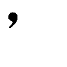（＆＃＄＃＆％＆）～（（＆））＆）（）（～（～！」ほ、頰をなぞった。
鳥肌より先に『チャオソレッラ』の五百倍ほど奇形な叫び声をあげて僕は腰を抜かした。松葉杖を取り落とし、壁で右半身をしこたま痛めつけながら無様に転倒した。
「ありゃりゃ、おーどろいた」
僕の台詞を取って和やかに改変するな！
遅れて出没した鳥肌を握り潰すように、二の腕を摑まれて引っ張り上げられる。そのお相手は、二十代後半、食事の好き嫌いや食べ残しに厳しい看護師さんだった。チロチロと、爬虫類のような仕草を見せる長い舌が僕の頰肉を這い回ったのだろう。
床に寝そべった松葉杖を拾い、僕に握らせる。そして僕の肩を三回払い、営業スマイル。
「他に痒いところはございませんか？」「自分の頭を搔きむしってください」
看護師さんはへらへらと相好を崩し、僕の言葉など日常の呼吸ぐらい気にも留めずに「元気だねぇ」と評する。たとえ僕が何を言おうとそう返す算段だったのだろう。
「......で、何しくさってくれてやがりますですか」
「夕ご飯よ、ってかんごちさんからの母性全開、精一杯のメッセージを触れ合いで伝えました」
「......敢えて何も言いません」
世の中には二種類の人間がいる。日本語の通じる人と、通じない人だ。
でもこの人は例外で、日本語ペラペラなのに頭もペラペラで人の日本語が聞き取れない奴だ。
「ごめんごめん、精々悲鳴をあげるぐらいかと思ってた。足とか大丈夫？」
「ええ、多分」
左足首が捻挫していないのが不思議な倒れ方をしてしまったけど、看護師さんに通りがかられてセクハラされたこと以外は幸い、痛覚の活躍してる箇所はない。
看護師さんは額をこつんと叩き、舌を悪戯っぽく出す。「げへ」
「その笑い方、間違ってるのに似合いすぎですよ」
「あれ、違った？ 若者ってのは難しいね。じゃあ、あへ」「もっと似合いますね」
幻覚の一つや二つはお友達っぽいもんなこの人。
先生といい奈月さんといい、僕らの上の世代はこの街で、一体どんな教育を施されたんだろう。噺家の育成にでも着手して計画倒れしたのだろうか。
この看護師さんはコスプレせずともナース服で着飾っているけど、普段、帽子は頭の上に載せていない。他の看護師や医者が現れるのを見計らって被るのだ。教師の服装チェックをかいくぐろうと努力する高校生と何ら変わりない。今は、ずれ気味なカツラのように被っている。医者が一人階段に歩いてきて、その姿を目で追っているからだ。通り過ぎるのを確認してから帽子を丸めてポケットにねじ込み、看護師さんが髪を指で梳く。その髪型へのこだわりが帽子を嫌う理由のようだ。僕は髪の毛への造詣は深くないので、その髪が織りなす名詞を正式に答えることは出来ない。よって看護師カットと名付けた。テクノカットみたいなものである。
「ところでアタシね、キミの秘密を一から千まで知っているのよぅ」
そんなにねえよ。
看護師さんの人差し指が、僕の眼前で時計回りに回転する。こちらも対抗することにした。
「僕もあなたの秘密とか謎とか知ってるんですよぅ」
本当だけど。......なんて胡散臭さだ。
僕の突き出す人差し指は、逆時計回りに頑張る。誰か酔い止めをくれ。
「キミってば今日の午後、一樹に唾つけてたっしょ。一部始終見てたよ見てましたよ光源氏さんの勇姿を。ボトルキープですか、逆指名ですか」
「一樹？ ......ああ」
接点のなさそうな人から知人の名前が出たことに、人差し指が一時停止する。けど無免許の匂いが漂う勤務姿勢でも一応は看護師、患者の名前ぐらい把握してるか。
「一部始終、仕事サボって眺めてたんですか」
「んーん、仕事のついでに窓の外から眺めてた」
一樹の病室は三階なんですけど。
「あなたの職務って宇宙人やることですか？」
「失礼な。七夕の短冊に『カラーひよこの味が良くなりますように』と書いた分際であたすを愚弄するか」
「捏造すんな。大体、」「あ、ところでその一樹のことなんだけど」
潰された。この街の住人はアレしかりコレしかり、自己中心的であることが一般教養なのか。
「一樹はアタイの親父が開いてる道場の門下生ってーの？ ま、平たく言えばアタチの弟子にあたるわけ」
平たくする他に、上下関係の省略まで行っている気が。
指の円運動は同時に取りやめた。
「キミは一樹と如何様な関係を持ってるわけ？」
「僕とあなたみたいな関係です」所謂、薄紅色の他人ね。
「ふぅん。ま、知ってるかもしんないけど一樹は怖がりでね、名和がいなくなってから夜は暗くして眠るの嫌で仕方ないみたいなの。キミが一緒に寝てあげたら？」
「なわ？」最後の提案は流した。
「いなくなった子。名和三秋」
「へぇ」
「今はどこで何してんだかね。ったく、怪我も治ってないってのに」
不満げに鼻を鳴らし、初めて、弛んだ顔面を引き締める。その態度で、僕は少し見直した。
「看護師さんは今回の件にどのような見解をお持ちで？」
レポーター気分で質問してみた。
「事件に巻き込まれてるって感じかな」
看護師さんはまた帽子を髪に載せる。それから顎に手をやり、遠い目になる。
「例えば、殺人事件とか」
「.............................................」
目が正面に回帰し、手がだらりと垂れ下がる。
「わたしのアリバイはどうりょうのかんごしさんがしょうめいしてくれます」
「いきなり推理アドベンチャーしないでください」
僕も人のことを言えないが、評価は元通りに下落した。
「なによりわたしにはどうきがありません」
「だから誰も聞いてねえっつーの」
「ふちょうにしゅっせするみこみもありません」
「それは不当な評価ですね、解雇されないのが不思議なのに」
「なんでじゃー！」
自らドット絵カメラ目線住人状態を解除した。怒りのはけ口として看護師さんの拳を受け止めた壁は、鈍い悲鳴を短くあげる。......この人が突っ込み役じゃなかったのは僥倖だな。
「つうか、酷い冗談ですね」
そう言われて、看護師さんは楽しくなさそうに微笑む。
「笑い話で済ましたいってとこかな」
けど名和三秋は死んでいる。無事だといいですね、なんて白々しいことを言う必要は、今の僕になかった。
「無事だといいんだけどなぁ」と中空に向けて独白し、看護師さんは競歩みたいに腕を振って階段を下りていった。心の根本まで冗談一色というわけではないようだ、僕と違って。
そうして、看護師さんの妨害に遭遇しながらも、何とかマユの病室前に到着した。
助手はいないので自分に命令を下し、とびら、あけるをしようとして、その手が耳の刺激に応じて一時停止する。日本むかし話のナレーションみたいな、抑揚の控えめな朗読の声が扉越しに届いた。祝詞のようでもあるそれが、法定速度も驚きの低速で休まず続く。
僕は扉の外で待機し、耳を澄まして聞き分ける。......奈月さんが喋ってるみたいだ。全文は判別出来ないけど、語尾がですます調で締めくくられているように聞こえる。童話か絵本の類を、マユに読み聞かせているのか？ それを、マユはどうしているんだ？
予想外の事態が中で発生している可能性に、僕は興奮も緊張もせず、ただ不可思議さに導かれて扉に手をかける。正面から扉を半分開いた。
室内には、当然だけどマユと奈月さんの二人がいた。マユはベッドの上で、上半身を起こして壁を真っ直ぐ見つめている。その目つきが、物腰が、妙に大人びた冷静さを帯びていて、肌がざわついた。
奈月さんは椅子に腰かけ、広く薄い本を手で支えている。
両者とも扉の音で僕の存在に気付き、振り向く。どちらも、心根はどうあれ表面は喜色を浮かべて歓迎してくれる。それと同時に、マユの不可解な雰囲気が払拭された。
マユがベッドの縁に手をついて足を下ろそうとする。けど、遠近感のなさが災いして、マユは空気を押してしまった。そのままゴロリと、肩から床へ落下するところを奈月さんが咄嗟に支え、身体を押し戻す。マユは、特に抵抗を見せなかった。
「おかえりなさい、みーさん。先程の奇声はみーさんのでしたか？」
鞄を取って席を立ちながら、奈月さんがごく自然に言葉をかけてくる。僕は有耶無耶に「ええ」だの言いつつ、マユの方へ近寄る。マユも、今度は失敗せずベッド端まで移動し、空いた隣を叩いて誘ってくる。相当に寝起きらしいのは、その態度で伝わってきた。
「では失礼します。それとこれ、差し上げますので」
奈月さんの手にあった、絵本を手渡される。
うりこひめと、あまのじゃく。
表紙には平仮名で、そう明記されていた。
奈月さんは僕とすれ違う際に「心配しないで」と囁いて、意地悪そうな笑い方をして部屋を出ていった。心配って、なにをだ？
僕は分からないフリをしながら、マユに指定された場所で尻を下ろす。すると間髪入れずに、磁石ごっこでもしているみたいにマユがくっついてきた。
「みーみーみーくん、みーみーくん」
「よしよし」
脳がもう少しで固茹でになるはず。僕は、看護師さんの唾液付きの伝言を思い返した。
「もうすぐ夕食だって」
「うん。わたし、お腹空いた」
昼食の時間も眠ってたからね。
「でも、こんなとこのよりまーちゃんの作るご飯の方が美味しいよね」
「うん、それは勿論だよ」
そろそろ大丈夫かな。
「今の女の人、知ってるよね？」
「ううん、ぜんぜん知らない」
マユはあっさりと否定した。
......なるほど。ということはつまり、ほぉーおなわけか。
「さっきの人のこと、嫌いじゃないんだ？」
マユが、側にいることを拒否しないなんて。
「んーん、嫌いだよ」
マユの屈託のない笑顔。一瞬のうちに豹変しそうで警戒してしまう。
「絵本が懐かしかったから聞いてただけ」
つまりラジオと同列に扱ってたわけか。流石のマユも、機械には嫉妬しないわけだ。
奈月さんが持ち込んだのかと絵本の裏面を見たら、達筆に病院の名前が記されていた。
お片づけの時間を全略しただけかよ。
「絵本とか、よく読んだんだ？」
「なに言ってんのー、みーくんとかわりばんこで読んだのに」
マユが三流の小話を耳にした後みたいに、目を吊り上げて反論する。僕はそこでようやくまーちゃんとの輝かしい過去を懐古し、「そうだったねぇ」と軽々に返事をした。噓だけど。
「みーくんちにお泊まりした時、お布団の中でいっぱい読んだよね」
僕は無言だった。ただ、マユの、夢に着飾られた秀麗な面容を黙視した。
「みーくんは読むの速すぎるから、わたしくろーしたんだよー」
「ごめんごめん」
僕の心にもない謝罪には無反応で、マユが絵本を、鼻歌交じりにめくる。端麗と幼稚の混ざる、矛盾じみた魅力を内包する顔つき。
その無邪気な仕草は僕に安心感を与え、対象とする絵本は不安感で心を震撼させる。
心配しないで、だってさ。
奈月さんは、お見通しのようにそんなことを言った。
ああしたさ。
心配、したさ。
マユが正常になっていないかって。
「.............................................」
ひでえな、僕は。
マユがこのままであることを望んでるわけか。
壊れて夢見て間違えて、弄んでる現状を。
けど、そうだよなぁ。
マユの記憶が正常化したら、僕は。
......お払い箱、だからな。
「まーちゃんが読んであげよっか？」
マユの無垢な問いかけに、大仰に首を振って雑念を振り払った。
「ご飯食べてからにしよう」
「うん、そだね」と絵本を引っ込めるマユ。
奈月さんほど性悪な人は、いない。
一番効果的な、正しい嫌がらせだ。
「みーくん、どしたの？ 泣きそうなの？」
マユが僕の膝元まで身体を滑り込ませ、見上げる。
ふぅん、僕は今、そんな顔をしているのか。
一丁前に、嘆いているってのか。
「いや、僕はまーちゃんのことが本当に好きなんだなって全米が泣いてたんだよ」
噓をついても。
騙しても、騙っても。
偽者でも。
偽物でも、贋物でも。
過程がなくても。
結果だけでも、イカサマでも。
......バカップル万歳三唱なわけだ、僕は。幸せな奴だなぁ。
「まーちゃんはさ、僕の何処が好き？」
「みーくんなとこ！」
赤面もせず、元気一杯なお返事。
素晴らしい。
まーちゃんは完璧に正解してる。
それなのにどうして、間違えてるんだろうね。
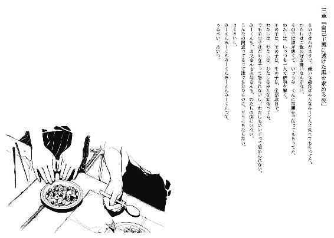
長瀬透が男子から告白される場面に、僕が出会してしまったのは十月七日だった。
印象的だったので、時間帯まで記憶している。昼休みと地続きの、掃除時間だ。
下駄箱で告白されていた長瀬と、男には勿体ないほど艶のある黒髪の男子。
長瀬は『ちょっと考えさせて』の保留もなく、前菜を一口で平らげるように易々と断った。男子も男子で、二、三の聞き取り辛い言葉を残して、僕がいる方と正反対に小走りで去ってしまった。土下座の懇願で縋ってスカートを覗こうとする根性はないのか。それに踏み切ったら人間としての関係も築けそうにないけど。
長瀬はその背中を見送ることもせず、男子と反対、つまり僕の方へ向かってきた。
昼休みも終わり、掃除場所に行く途中だった僕は逃げるのも面倒で、そのまま佇む。
壁を背中合わせに突っ立っている僕を見て、長瀬は驚愕し、瞳孔を引き締める。
流石に無視することは困難だったのか、気まずそうにしながらも足を止め、黙視を互いに続ける。やがて口を開いたのは、やっぱり長瀬の方からだった。
『出歯亀？』
長瀬の世界の正面に僕が据えられるのは、席替えの日以来で、僕もまた然りだった。
『偶然見てたし偶々聞いてたよ。勿論言わないけど』
『別に言っても構わないッスけど。結構知ってる人いるし』
『......ちょっと難しい日本語だな』
この学校は光速で情報が伝達するのか？
『あの人に告白されるの、初めてじゃないッス。小学校で一回、中学で一回、今ので三回目』
長瀬はうんざりしたように言った。それで僕は合点する。
『長瀬のことがよっぽど好きなんだ』
『こっちは困るッスけど。小学校の時は好きな男子がいたし、中学校の時は思春期真っ直中で恥ずかしいから嫌だったし。今は......ノリッスかね。二度あることは三度あるみたいな』
基本的にあの男は好意を抱かれていないわけだ。それじゃあ、回数こなしても無理だろうな。
『ところで聞くけど、なに、その喋り方』
『フレンドリーの証ッス』
『ッス』があれば、嫌いな相手だろーと友好っぽいッス。開眼したッス。彼女はそう断言したけど、僕は『んなわけねーだろ』と否定した。長瀬は無視した。
『それで、こないだのこととか、全体的にっていうか、気にしてる、ッスよね。名前』
『そりゃね、そっちも？』
長瀬はどことなく嬉しそうに、首を大きく縦に振る。
そこで、僕らのわだかまりの壁は溶けて、薄くなった。
『小学校の入学式で、担任の先生が名簿を見たの。それで、女子の欄に男が入ってるって言っちゃって、クラス中の人間に大笑いされた。あれはきつかったッスよ』
長瀬は、仲間を見つけた喜びに浮かされるように、饒舌に身の上話をする。
『子供は嫌ッスよね、それがあって暫くは、ランドセルの色とかでもからかわれたッスよ。何で赤なんだよーって。こっちからすると、お前ら赤くしてやろーかーって血が沸き立つッスけど、あの頃は自己主張も出来ずに泣いてばかりだったッスよ』
穏やかに語りながら放たれる、長瀬の蹴りがゴミ箱を転倒させる。
散乱したゴミは、美化委員の片割れとして僕が処理した。
『ごめん』
長瀬が面目なさそうに謝罪する。
『別にいいよ』
『そっちは何か理由あるッスか？』
『まぁ、色々と。いい目より、悪い目の方が多かったから』
僕は、昔々に、悪意の巣窟の中で一緒にいた女の子を思い出した。
あの子は、僕を何と呼んでいたかな。
『ひらがなのとこが一層らぶりーッスよね。あたしは好きッスよ』
『うるさいな、じゃあ差し上げるよ。有効活用してくれ』
『あ、それいいッスね』
『何が？』
『名前ッスよ。今日から自分は、長瀬××ッス』
......耳が痛むけど、聞き間違えじゃないよな。
『で、そっちが透ッス』
『交換するってこと？』『ッス』
『......いいっすけどね』『おお、フレンドリー効果が相乗ッス』
『何処がだよ......』
これを境に、僕は長瀬にとって『透』となった。
けれど僕は一度も、長瀬を別の名で呼ぶことはしなかった。
僕の方が、名前アレルギーは深刻だったから。
マユの病院での夕食は、僕の利用している病室で取ることになっていた。
マユの偏食により受け渡された料理を、僕が食べられるとは限らないからである。けれど、この医療施設内では生類憐れみの令ぐらい理不尽に、残飯の存在を断固として認めていないので、胃から手が出て唇の前で食物摂取を断る為には、秘密裏に他人に譲渡するしかない。つまり、人は一人では生きることが難しいことを実感する為の、病院側の素敵な措置である噓。
よってマユも、病院側の言い分には徹底抗戦でも、僕の平身低頭な態度の説明により渋々ながらも納得している。嫌いな他人より、嫌いな食物の方が処理の優先度が高いのだろう。
で、今は夕食時である。
「みーくん、これ」
「はいはい」
キュウリの漬け物の小鉢をマユから受け取るだけで、手は付けない。残せばどうせ、度会さんが胃に収めてしまう。何だかそれも、すっかりとお馴染みの光景になってしまった。食べ過ぎは良くないと無理に止めるほど、僕は物事の当事者じゃないし。
いつもの看護師さんは既に別の病室へ行っているのでお咎めなし。あの人にも困ったものだ。
サイドテーブルにトレイを置き、マユはムニエルされた白身魚を解体している。入り込んでいる骨を一つ残らず撤去しているのだ。そこらへん、不器用な長瀬とは対照的だ。長瀬は昔、一樹の為に林檎の皮を剝いたのに、剝き終えた後も実に新たな赤色が付着していた。帰り際に病院で指の手当をしてもらった長瀬のしょぼくれた表情は脳裏のアルバムに保存されている。
「何かおかしいの？」
マユの声がかかる。どうやら無意識に、長瀬の帰り際の『あれは誰かの黒い陰謀ッス！ プラズマの所為ッス！ 自分はマッチ棒の家を三年かけて組み立てられた逸材ッス！ 林檎の皮は栄養価があるから勿体ないから手が滑って気が迷って血が逆流して......呆れられたー！』を思い返して失笑しかけていたらしい。「何でもないよ」と、少し声を上擦らせて返答した。
しかし、マユは軽く流さず、憮然とした面持ちに変化する。魚肉に箸がザクザクと突き刺さり出し、麦茶をがぶ飲みする。個室病棟からここへ至る道中、声を軽々しくかけてきた男性に対する冷めた余所行きの態度とは異質な、荒々しい反応をマユは表現する。
「まーちゃん？」
仏頂面で無視された。今日は箸を僕の口に運ばず、黙々と咀嚼する。その動作や箸の使い方は、実は上品だったりするのである。自他共に認めるお嬢様暮らしをしていた為か、作法は万全なのだろう。
それはともかく、マユが急に不機嫌になった理由は何だ。まさか僕の心を読んだわけでもあるまい。仮に読心術を体得していたのなら、箸の矛先は魚ではなく僕に一直線だろうし。
後ほど、二人きりになったら探りを入れてみよう。或いは、マユから仕かけてくるかも知れないし。そのやり取りで何とか機嫌を並、いや贅沢に上を狙う。それでマユに、幾つか質問して応答してもらわないと。まーちゃんがどうだのみーくんがこうだの愚痴ってる場合じゃない。
この後はマユと個室に行って、近頃は一緒に寝るわけだけど、その前に風呂入って、歯を磨いて、コンビニへノートのコピー取りに行って。
で、そのついでに六日前に生まれた死体の新生児を見学しに行かないと。
死体を見に行くという行為に、人は何を感じるのだろう。
恐怖か、興味か、凶事か。サスペンスか、ホラーか、ミステリーか。
一目見ようと廃線を歩いて赴く四人組もいるだろうし、死体を発見するという行いそのものに運命と意味云々を受信しちゃうセンシティブな方々もいらっしゃるだろう。
そして今回、僕の立場からすると、危険を第一に想像した。
恐らく死体となった名和三秋はまだ表立っていない。彼女は警察に、未だ失踪者として扱われているからだ。名和を殺害後、遺体を隠匿した輩がいて、隠すということはつまり見つかっては困るなと思ってるわけで、無闇に隠し場所近辺をうろつくことはないだろうから、そっちの心配は特にない。
ただ無関係な第三者、この場合は巡回してる看護師等々に僕を目撃されたら、毎日気張って病院を徘徊している警察の御仁に誤報が提供され、いらぬ誤解を招いて犯人扱いだ。それはそれで、マユが容疑をかけられないで済むわけだから、次善の策として考慮はしてある。けど、まだその手に頼る決断を下すのは尚早だ。何故なら、この件が直接的に、マユの頭部をひび割れさせた犯人と関連しているのかも、未だ不明瞭なのだから。僕が優先すべきは、そちらの事件であるという方針を心から絶やしてはならない。
「.............................................」
名和三秋の隠し場所に案内してもらい、死因を遺体から判断し、後は犯行現場をマユの話から割り出したい。情報不足を解消する為に、僕は今夜、危険に踏み込む必要がある。
だからまず、マユの機嫌を回復させることから始める。
マユの病室で、僕らは普段通りに寄り添っていた。ベッドの端っこを椅子代わりにして、足は部屋の中心へ伸ばす。マユは、足をぶらぶらと振り子にして、膨れっ面になっていた。でも時折、欠伸が出る為、いまいち怒りの意志が浸透してこない。
「ねえ、なに怒ってるのかな？」
患部に触れないよう、遠回りに手を回して肩を抱き寄せる。夕方の自虐な思考が、口の中で苦く広がる。それも、風呂上がりのマユの熱気と香りで中和され、肩から手は離さなかった。
ま、いいじゃんか。ぼかぁ幸せなわけだよ。
包帯を許可なく取り、傷に染みて悶えながら洗った髪、火照った首筋、揺れる小さな足とか間近で眺めてたら、僕の何かが浄化した。
「よし、元気出た」
一人で沈み浮きした。やっぱりマユは良いなぁ、幸福を原材料抜きで精製する。悩みなど手品の鳩ぐらい鮮やかに消滅してしまった。我ながら、人科人属ヒトにしては精神の構造が簡略化されすぎてるという指摘を甘受するのもやぶさかではないけど、その安直な繫がりがいいんじゃないか。
僕は自分を少し好きになった、ということにした。無理っぽいけど。
「でさ、」「ねえ」
台詞を被された。本日二度目。僕は無論、マユに発言の権利を譲る。
マユは、膨れた頰が萎み、目の潤みが増加した。
「わたしのこと嫌い？」
「あいやいや、いやいやいや待たれい」
歌舞伎役者になって、僕は全力で、千カロリー浪費しそうなぐらい力と熱を込めて否定して知恵熱が出た。真っ当な噓だけど。
マユは一層涙目になって僕の胸元を摑む。
「嫌なの？」
「いやいや、ってそうじゃなくて、あーもう日本語ってのはさー、でもない。勿論好きだよ、イッヒリーベディッヒしてる」
こういう時、直球勝負が出来ないと苦労するよな。
「いってぃりーべでひ？」
しかも知らないし。
「うーん......和訳をちょっと発展させて、この街で君と暮らしたいって意味かな」
マユは流石に諸手をあげて喝采はしないけど、目玉の水分が少し引く。
「じゃあ、わたしといると楽しくない？」
方向性に、多少の修正を施した質問が飛んできた。
「だってみーくんは、わたしと話していても全然笑わない」
......そういうことか。なんか、前にもそんな問答があったはず。その時は手と傘が言葉のフォローに飛んできたけど。で、それに後押しされて僕も飛んだわけだ。改めて振り返ると、命を間違った方向で粗末に扱ってるよな、他称みーくんって奴は。
しかし、どうしたものやら。自然に爽やか笑顔にならないと意味ないけど、今までそれが出来なかったわけで、意識してどうにかなるわけもなく。大体、そういうの似合わないしなぁ、高校生だけど球児を兼任してないし。一応、文化系の部には所属してる身分だけど。
「楽しいのは、確かだよ」
マユの訝しげな黙視に対して妙案になるかもと、単純な思いつきをそのまま口にした。
「もし楽しくないとしたら、どうしてまーちゃんと一緒にいると思う？」
うん、この路線でいこう。
「わかんない」
「その通り、分からないね。だって楽しいから」
これでどうだ。自分なりに発想を逆転させた、悪くない流れだと思う。
「じゃあ笑うのー！」
理知的な子供からワガママ無邪気な少女に変心した。二つの握り拳が僕の上半身に断続的に降り注ぐ。手加減は一切ない。そんな調整をしない。
マユは、傷や痛みに鈍感だから。物理的なものを感じないわけじゃなくて、それが心の機敏に繫がり辛いのだ。よっぽど嫌いな、例えば元精神科医の先生に正面からぶん殴られでもしない限り、そこに心の痛みを覚えない。逆も然り。
「実は僕は笑顔が死ぬほど不細工で無様だから、まーちゃんにお披露目したくないのだよ」
噓だけど......と、必死に念じてみたり。せめて不美人と呼ばれたい。
それはともかく、意外に良い理由だと自画自賛しかけたのに、マユは即座の否定をした。
「そんなことないよ、なんかね、すごく格好いい」
......噓なんだけど、別に赤面してない。
「あ、あのさぁ、僕が笑わないとそんなに嫌？」
噓ですが、声が羞恥で上擦って、滑っている。
「嫌とかじゃないの。まーちゃんといるといつもにこにこみたいなのがいいのー！」
わけ分からん。けど理解しないといけないんだよな。
ええと、つまり、マユを見習えってことか。
......いや無理だろ。僕が美少女ならともかく、しがない男子高校生だぞ。顔は悪くないってマユや長瀬や一樹や先生や奈月さんが言ってくれるけど、女装出来ますよって意味にはならないし。しかも、別にそういう問題じゃない。頭が混線してる。考えるの終了。
煙に巻く方法は諦め、取り敢えず当たって、砕けるかどうかは運に任せることにした。
開き直った、ともいう。
「僕は、あんまり笑えないんだ」
マユの動きが硬直し、ほんのりと真面目な顔つきになる。
「弁解のしようもないし、努力するような問題じゃないから、これ以上は言い訳しない。けど、僕はまーちゃんと一緒にいる時が一番気楽で喜楽で楽しく愉快で幸せだから。それは信じてほしい」
舌も嚙まず、顔面の温度も上昇させず、目も逸らさず。
僕にしては真摯に言えた、と手応えあり。
マユは、静止していた拳骨を降らし、両手で各一発ずつ殴る。
それを締めにしてくれた。
ふて寝するように、僕の太股に顔を突っ伏し、「むー......」と唸る。
納得はしていないけど、許してはくれたらしい。
それに伴い、僕の肩の強張りも取れる。
マユの、完全に乾ききっていない髪の川に指を通した。
湯上がり美人を膝にはべらせてるわけだな、ちょっと違う気もするが。
さて、相も変わらず急がば回れをして、ようやっと本題に入ろうか。
「ねえ、二つ教えてほしいんだけど」
「んむー」
「まーちゃんが見た死体、何処にあるの？」
マユが伏していた顔を上げ、猫の威嚇をあげる。赤くなっている鼻と、髪の森の奥に見え隠れする傷の浮かぶ額が晒される。
「浮気はだめでしょ！」
いや浮気ってあーた、相手はゾンビとして復活する見込みもない、純正の死体ですがな。
動かないし喋らないし笑わないし泣かないんだぜ。
「死んでる人間と浮気は無理だよ」
「かんけーないの。死んでても何でも、みーくんがわたし以外に興味持つのやだ」
マユは当然と、憤然と、超然と言い切った。
随分と、広範囲な嫉妬だな。人間関係には独占禁止法がないんだよなぁ。
けど僕は、マユのそういった感性に堪らないものを感じちゃってるわけで。
芸術家肌ってやつだな。多分、噓になるんだけど。
「興味とかじゃないんだよ。自衛とまーちゃんの為に、ちょっと調べに行くだけ」
「んにゃ？ わたしの？」
「うん。まーちゃんは今、ちょっと危険な状況にいるんだ」
多分、恐らくいやきっと。実際のところ、確証はない。
マユの目が左右を往復する。
頭に唾塗って座禅組む人の考える時間ぐらい経って、ちーんときたのか目が正面で停止。
「駄目です」
えー。酒場で別れ話を断る人ぐらいはっきりとしてやがる。
僕の異議が届いたのか、マユが眉根を寄せ、そっぽを向く。
「だって調べるってことは身体見るんでしょ？ だめだめだーめー」
後半の駄目に合わせて寝返りをうつ。そんなことはしない、と言い切れない。検査する必要はあるから。
やむを得ない、こうなったら。
「じゃあさ、まーちゃんも一緒に来ない？」
寝返りが丁度、仰向けの状態で治まる。マユは疑問符を視線で配送してくる。
「浮気しないか見張りに来ればいいんだよ」
本当は、望ましくない形だけど。
これでも却下されたら、大人しく諦めてコンビニに直行しよう。
「うーんー......」
渋るマユ。自身の親指を甘嚙みし、目玉が世界を彷徨う。
面倒だなーとか寒いしなーとか葛藤していると推測する。
「あ！」と、突如、マユの足が胴体の下へ収納され、上半身を立て直して座る姿勢になる。
それから、僕を見つめるマユの目。
普段から特異な虹彩を持つマユの瞳が、夥しい光彩を放つ。
思い出を語る際に生じる現象だ。これを思い出ぼろぼろ現象とは安直なので名付けない。
「探検ごっこだ！」
「まあ、そんなかん」「懐かしいなー。小学校に入ってから、いっつも学校の中ぐるぐる探検してたよねー」「そうだったねぇ（開き直り中）」
偶に一輪車に二人乗りとかしたよねぇ（捏造中）。
「学校はすごーく広かった気がする。上級生の使ってる二階と三階は、全然別の場所みたいで、どきどきしたしちょっと怖かった。壁の下のちっちゃい通気口は時々鍵が開いてて、理科室とかも入って遊んでたよね」
マユはそこで鼻を啜り、言葉を区切った。上目遣い。僕の返事を心待ちにしているかのよう。
「そうだったね」
「覚えてる？ わたしの好きだった場所」
「うん。図書館の隣の、予備室だ」
行ったことないけど。
正解だったらしく、満面の笑みを頂戴した。
「やっぱり覚えてるんだー」
「地球儀を回すの好きだったよね」
見たことないけど。
昔々、マユと寒々しい同居生活を送っていた時に、耳にしただけ。
うんうん、とマユは激しく肯定を示す。
「楽しかったなー......」
マユは何だか、泣き笑いをして、涙声になっているように、遠く遠くにその一言を呟いた。
まるで、葬儀の後のように。
それも束の間、すぐにマユは童女の振る舞いとなる。
「じゃあみーくんに付き合って、童心に返ったげようかなー」
「わーありがとー」
白々しく、黒々しい態度。
マユがベッドから跳躍し、半分転びながら着地する。
着替えの詰まっていた肩かけ鞄を棚から引っ張り出し、中身をベッドの上へポイ捨てする。衣服とパジャマの替え、それに下着類も遠慮なく散乱する。それからマユは部屋中をふらふらと小走りで駆け、自分なりの探検ごっこの準備を進める。
「パンにー、ナイフにー、ランプにー」
コラコラコラ二つ目。
「没収」
刃をタオル地の布できつく巻いた果物ナイフを、鞄に放り込む前にマユから取り上げる。
「だーめ！ それでみーくんを守るの！」
マユが僕の右手に飛びついてきた。ぎゃーナイフ持ってるんですけどー。
冗談で済ませるうちに譲歩した。これで名和三秋の死因が刺殺だったら死亡推定時刻を超越して犯人候補の筆頭になる。いやそれより、万が一犯人と出会したらマユが本物の殺人犯として訴えられてしまう。どちらにしても、物騒極まりない。
「後は熱い思いと、目玉が二つでかんぺき！」
天空の城でも探しに行きそうな気負いを背負ったマユ。鞄の紐を左の肩にかけ、僕の下へ戻ってくる。
「みーくんは手ぶら？ 給食の残りの食パンとかは？」
「僕は財布と手袋と、その机のやつだけ、かな」
病室から持ってきていた、長瀬の大学ノート計五冊。今はテーブルに放置してある。
「なにこれ？」
「僕のノート。ちょっとコピーが必要になってさ」
マユがノートを一冊抜き取り、中身を確かめる。女の子の筆跡だ、なんて文句が飛んできたらと身構えていたら、「もっと字のお勉強しなさい」と窘められた。ナイスだ長瀬、暗号のような日本語を記すお前の不器用さが実ったぞ。本人に告げたら枕とか利用して反論しそうだけど。
マユの鞄にノートを入れてもらい、後はマユの勧めで靴を準備し、用意は調う。時刻は、午後七時半。消灯時間を過ぎて、暫くしてから行動に移すつもりなのでまだ早い。
今にも勇んで飛び出していきそうなマユを制し、僕の隣に座らせる。待っている間に欠伸の出る暇もなく眠り子となりそうなマユに不安を抱き、先に場所を聞き出しておくことにした。
「何処を探検するつもり？」
「んと、一回外出て、ぐるーっと回ったとこにある建物」
「ん......旧病棟の方かな」
「そうそう」
現在では周りが夢の島扱いになっているゴミ屋敷。
来年には取り壊し、樹木を植えて散歩道にでもする予定だとお婆様方のコミュニティが噂話していた。
「楽しみだねー......」
足を宙で遊泳させながら、寝言のように不確かに呟く。
マユが肩にもたれかかり、僕の手を自然に握る。長瀬の手より、僅かに小さい。
「ねえ」「ん？」
微睡んでいるような、マユの仕草と目つきと声が印象的だった。
「みーくんは、笑わないし、泣かないね」
「......そうだね」
心がカラカラだから、かな。
午後九時の消灯時間から、四十分が経過した。僕と、珍しく夜更かしが成立しているマユは部屋を出て、非常灯だけに淡く照らされる廊下を歩き出した。
「かつーん、かつーん」
ホラーにありがちな、暗闇に響く硬質な靴の反響音を演出しているのか、マユの気の抜けたＳＥが入る。実際はスリッパのパタパタと、松葉杖のとっかとっかだ。
マユは寝間着から普段着に着替え、白い鞄の紐を肩に斜めがけして遠足気分である。
今日は外に出ても、浮かれているのか眠気が邪魔しているのか、態度が柔らかいままだ。
「今日は遅くまで起きてるね」
道中、僕は半分素直に褒め、半分は残念がった。待機している時間中にお休みなさいと御挨拶することを期待していたのに。マユはジト目で、嬉しがらない。
「子供扱いしてる」
「そんなことないよ、偉い偉い」
「むー、まーひゃんひゃみょうおひょひゃひょひょに......」
欠伸しながら何か言っていた。
一階まで下りて、光の漏れている部屋から遠ざかる方へ行く。正面玄関の鍵をぶち壊して帰巣する際は元通りにしておく妙案が、恥ずかしながら考えつかなかったので裏口を利用することにした。
非常灯がやたら多く備え付けられ、公衆電話のボックスみたいにケミカルな緑色で着色された世界を緩い速度で前進する。ロビーへ通ずる方角と正反対の道へ曲がると、ポツポツと赤銅色の長椅子が設置されていた。
病院の最奥である非常口の前に到着する。行き詰まりの廊下の隅には、使用期間がとっくに円満終了を迎えていそうな消火器。後、最初は真綿のように漂白されていた先端が、今では爛れた葡萄となっているモップも壁に寄り添って立ち番していた。
「どきどきしたよね、扉を開ける時って。何があって、何が見えるのかって」
マユはスリッパを鞄にしまい、代わりに汚れ一つない靴を取り出す。旧病棟は割れた硝子等が床にあり、サンダルでは足下が危険だとマユが説明していた。僕も片足分だけ靴に履き替えるのを手伝ってもらいながら、「そうだね」と優しい声色を使って返答した。それから、金属剝き出しで嫌がらせとして冷たい取っ手を摑んで捻り、非常でもないのに扉は開いた。
扉の外へ出る。一歩踏み出した場所は、赤錆の国となった非常階段の真下、陰に彩られた立地だった。頭部を打ち付けないように注意しながら、草木の枯れ果てた地面へ移動する。
「寒い」とマユは不満を漏らし、僕の包帯が巻かれた左腕に遠慮なく抱きつく。
「いや、動けないから」
僕が引っ剝がそうとすると、マユは反抗期にしがみついてきた。
「動くまで、このまま」
「......うん」
風は揺らめかせる草木を失い、人間の触覚と聴覚にその存在を訴えかけている。パジャマの上に安物のジャケットを羽織っても、冬風は通り道の抵抗と認識しているかも怪しい。引き返してマユと抱き合って暖を取りたい衝動に誘惑されないようにと、遥か頭上で渦巻く、生き物以外の鳴き声に導かれて首を傾けた。
夜の、雲が流れる晴れた空は好ましい鑑賞風景だった。強風に胴体を真っ二つにされ、それでも尚流動する、一枚の絵画のような光景を見上げると、寒冷も多少は気が紛れた。後は行動意欲が萎えきる前に、決意で身体を動かすだけだ。死体を見学して、それから有り難みの薄いノートを印刷しに行くという、二つの目的を達する為に。
「てけててーん」と、手が丸形になりそうな前フリをして、マユが用意していたランプ、すなわち懐中電灯が鞄から取り出された。個室に常備されているやつである。電源を入れると、前方の一部分が日中になった。その一連の動作を眺めて、僕は単独では電灯を握ることも不可能であることに、今更気付かされた。マユが連れ添ってくれて正解だったんだな、意外にも。
ここからは、現在、僕らが突っ立っている東側から、時計回りに北西へ移動することになる。北は正面出入り口だし、その途中にも駐車場があるから、用心に越したことはない。マユがライトを構え、名残惜しそうに僕から薄皮一枚程度、離れる。
雨には不戦勝し、後は風に負けぬよう土を踏みしめる。科学な廊下より若干、自然な大地の方が踏み心地は悪い。松葉杖を突く感触も、いまいちだ。
南側に入ると、病院が風除けになってくれた。建物の陰から離れ、敷地の壁際には花壇が整っている。控えめなスポットライトを花壇に向けると、幾つかの花々はその人工の光を浴びた。ただ、僕の拙い知識で照合した結果、分かるのはスイセンぐらいだった。虫食い対策に、花壇の縁に植えられているスイセンの花が僕らに小さいお辞儀をしていた。
「ねえねえ、今わたしが寝ちゃったら、みーくんどうする？」
草木の寝床を敷いて放置する。噓だけど。
所持した光を掲げる物のお零れで、うっすらと浮かび上がるマユの表情は、特徴なしだった。
「背負って帰るよ。僕の足の包帯を解いてね」
その言葉に安心したのか、マユは上機嫌に頰を緩ませる。いや、でも寝ないで下さい。
南側の直線も半分を消化する。風に晒されない状態は一種快適さがあり、普段は何気なく暮らしている家屋の役目を再認識する。僕の実家、それに叔父の家も木造建築で、火事と地震が弱点な設計だったけれど、風雨には強い。その有り難みが身に染みて理解できるというものだ。
などと悟ったような思考をしてられるのも、南にいる間だけだった。苦労は鼻の先にぶら下がっているものだ。
西側を北上する時は向かい風となっていた。ギャグ漫画ならうひょーと叫んで彼方へ飛び去り、鯨だって空を飛べる、今日という日は。
「僕が風除けになるよ」
マユを僕の背後に隠れさせた。少しは効果があるだろう。後は、僕を何とかする。
こういう時の対処法は、頭を狂わせるに限る。狂人の真似をするのだ。フリかどうか些か疑わしいが、とにかく意図的に壊れさせる。感覚を繫げないようにすればいいのだ。全ての感覚は僕の何か、そう第六感の綜合により示される事象を分解し解体し享受し受け持ち伝達し共感覚、失われたその二重の交差が音の色を文字の色を溢れさせる瞬間を認識することで別世界新天地涅槃来世の総括へ流転するに相応しい矜持が得られることは明白極まりない論理に従い、西病棟の脇に一般客へ有料開放されている温泉を通りすぎ、何だか不明瞭な工事を日課としている土地の片隅に、旧病棟があって到着した。狂った箇所を修正する（出来てるのか？）。
旧病棟は、現在の病院には及びもしない、こぢんまりとした建物だった。二階建てで、正面のベランダが妙な不気味さを醸し出している。今にも誰かが窓際から僕らを見下ろしてきそうな、Ｂ級ホラー臭さがある、と思ったら途端に不気味さはなりを潜め、昔見たゾンビ映画が頭の片隅で上映された。
建物の周りを囲うように、中身のたんと詰まったゴミ袋が散乱している。夢のないサンタの荷物だ。外にはそのうち回収されるゴミ、中には回収されないことが目的の不法投棄物。黒い冗談は程々にしよう。
入り口は、関係者以外は立ち入り禁止という、創意工夫の片鱗もない警告が張り紙として機能していた。僕らは、入院しているなら関係者だろう、いや地元民だから関係していないはずがないと自己認可して迷わず入ることにした。実際はそんなこと考えもしてないけど。
正面の戸は鍵がかかっているけど、二度揺さぶったら簡単に解除された。根性なしである。
「この前はここの裏で待って、誰か出てってから入ったの」
「うむ、賢い」
今度は頰をほころばせた。僕の左隣の定位置に復帰する。
礼儀知らずのバカップルはお邪魔しますの一言もなく、土足で上がり込む。玄関脇の下駄箱には当時の焦げ茶色のスリッパが揃えてあり、現役のつもりであることを病院が主張しているみたいだった。勿論履き替えず、土足でスタコラする。
自動ドアなる面妖な設備はない。朽ち果てる寸前の扉を開けて受付を訪ねると、乾いた臭いと埃が冷やかし客を舞踏で出迎えてくれた。息をするのも躊躇う、塵の海。失礼、川。地元の海というものに正しく地続きでない土地の人間が、海など例えに使うのは恐れ多い、と今何となく思ってみた。明日には忘れているだろう。
マユの操る懐中電灯が、中身を剝き出しにした長椅子を、受付の側にあるコバルトグリーンのメッキがほぼ剝げた公衆電話を、耳が片方取れたウサギ人形を照らし出す。受付の奥の、治療室に繫がる扉が半開きなのも、意外と高得点である。それに加え、耳鳴りがするほどの静寂、は規則正しい音色が許してはいない。
待合いの長椅子が連なる上にある壁かけ時計だけは作動し、かつて病を刻んでいた場所で秒を刻んでいる。指し示す時刻は現代と多少時差があり、過去を刻んではいるけど動作に戸惑いも躊躇いもない。お化け屋敷として売り出すのに失敗でもしたのか？ と勘繰ってしまう。
マユを横目で見ると、一寸たりとも恐怖を感じず、院内で電灯の光を縦横に遊ばせている。時間に置き去りにされた空間が物珍しいわけではないだろう。マユにとって、これは輝かしすぎて何もかもが区別のつかない過去を想起する探検ごっこであり、行為の過程は意味を成さないのだ。まあ、彼女なりの良い結果があるなら、それで十分だ。
床はみしりとは軋まず、パキパキと何かが砕ける予兆段階に達している。松葉杖を突くことに多少の不安を煽られる。受付の右脇から奥に通じている道があり、そこへ向かう前に、古めかしい機械が放置されていた。血圧の測定器のようだけど、クモの巣が張り巡らされて触れる気は起こらない。
「理科室と保健室を足した感じだねー」
マユの陽気な意見に、僕は感心する。病院ってのは、そういうところだよな。
「死体は何処に仕舞ってあるの？」
「二階のね、薬の臭いがいっぱいするところ」
ほぉ。腐臭をごまかせるし、悪くない場所を選択したわけだ。
「まーちゃんは、死体を運んでる人を何処から追いかけたんだ？」
「んとね、部屋の窓から変な人を見て、何となく追っかけたの。で、ここの近くでおー死体だーって分かったの」
「ふぅん......その怪しい人は他に何か持ってた？」
「ううん、死体をおんぶしてたもん」
「......うわぁ、肝試しすぎだな」
「ということで、まーちゃんもおんぶ」
むしろしてくれ。
それにしても何でこの子は、そう無謀な行動に出ちゃうかな。階段とか一人だと危ないのに。恐らく、これに関しては明確な解答なんて存在しない、詐欺のような問題なんだろうけど。
欲求の発露として犯罪を行うことと同様、理知的な理由のない、悪意への惹かれなのだろうから。
奥に少し進むと、更に右へ廊下が寄っていた。階段は、マユが言うには二つぐらい病室を過ぎた先にあるらしい。歩行する度に床の埃が舞い、足首を濡らすようにまとわりつく。
そして通路を進むと、新病棟に面した、外側の廊下に出た。
鋭利な月の光が微かに床を塗り、退廃に神秘をトッピングする。
夜の王様は出没しないまでも、ミミズクの鳴き声ぐらいは遠くから木霊しそうな環境が、僕らの進む道だった。時折、外の風が入り込んでくるので窓を見ると、半分ほど硝子が割れている箇所があった。しかし、腐食の進んだ廃院をライト片手に探索していると、埼玉の廃村にでも紛れ込んだ錯覚に陥るな。死体が復活しないことを軽く祈っておこう。
廊下の途中に通りがかる病室は、毛布のない寝台が六つ設置されていた。誰かが最近使用した形跡はない。どうせなら、名和三秋をここで眠らせてやればいいのに、と犯人の心境や都合を計算に入れないで思ってみた。けどそんなことをしたら、いつの間にか他のベッドにも見知らぬ死体が......なんて五流の怪談に発展すると困るかもなぁ、と考えを改めた。
床に散っている、割れた硝子を杖で踏みつけないよう、また足取りの危なっかしいマユがその上へ転ばないよう病室側を歩かせ、細心の注意を払って腐り木の通路を進む。
その間、マユは前方を、光線の当たる先を凝視していた。
僕の視線に気付いたのか、首をゆっくりと右に捻る。
暗闇にも目が順応し、マユの朗らかな笑い顔が見やすくなった。大変良いことだ。
「ねえ、みーくんはいつ退院するの？」
何やら、あまり現状と関連のないことを思考していたらしい。
「そだね、使う松葉杖が一本になる頃かな」
実際のところは、いつになるか見当つかなかったり。
「まーちゃんは後一週間で退院なのです」
「じゃあ、僕もその日にまーちゃんの家へ戻ろうか」
それが模範解答だった。マユは満足げに目を細めて「そうしよー」と同意し、足取りも軽くなる。それに並ぶ為に、僕は移動の仕方を多少変更する。松葉杖を前に突き、足を運ぶ際に床を強く蹴るようにする。それで、少しは速度と歩幅が上昇する。
「傷、残るかな？」
マユが頭部の傷を、僕が巻き直した包帯の上からさする。自分と他人、植え付けられた傷はどちらがより痕跡を残すのだろう。そういえば、僕の頭にも一つ、傷がある。これをお揃いだねと微笑ましく語ることは僕らでも敷居が高い。
「傷があっても、まーちゃんはまーちゃんだよ」
意味不明にマユの存在を肯定してみた。マユも絶対に意味を理解していないけど、どことなく嬉しそうに顔を緩めたので言った価値はあった。
二つ目の空き病室を過ぎて、マユの話通りに階段があった。旧式の建築物でも流石は病院、手すりがある。けど旧式である故、階段自体に問題がある。足を載せただけで板がへし折れそうな、アンティークと無縁の古めかしさが不安の源泉になっている。
そうやって僕が二の足を踏んでいる横をすり抜け、マユが手すりを握って二階へ登り出す。冷静になってみれば、一人の人間を抱えた犯人が登って健在しているのだから、見た目より中身重視なんだろう。松葉杖を片手で二つ持ち、手すりを利用して緩慢にマユの尻を追いかける。
マユがいち早く登りきり、ライトで僕の足下を明確にしてくれる。七段目には、羽が風化しかけている蝶の死骸が横たわっていた。ここ数日で誰かに踏まれた痕跡がある。融通の利かない足の踏み場なので、僕も贅沢を言ってられない。踏み潰して頂上を目指した。
無事、転げ落ちずに登頂に成功した。手の平が疲弊と痛覚を背負い出したけど、タイムアウトはまだ早い。それよりも、左に見える部屋から生ゴミに酢を降りかけた臭いがするんだけど。
「あの部屋だよ」と、鼻を摘みながら、マユが指さす。回れ右をしたくなった。
マユに付いて部屋へ入る。そこは病室ではなく、かといって医務室という様子もない。地震でもあったのか、横倒しになった本棚から飛び出ている医学書や、ビーカーの破片が床の絨毯代わりとなっている。広さは、学校の理科室より多少狭い、といったところか。
中央付近の樫の木製テーブルには、中身のない薬袋が散乱し、埋め尽くされている。薬局代わりだったのかも知れない。が、この病院のドラマなど僕にとってデシリットル以下の価値でしかない。重要なのは、場所としての意味だけだ。
マユは一人で奥へ一直線に突き進み、部屋の隅にある扉の前で足を止めた。ぴょこぴょこと跳ねて僕を手招きする。菓子パンも鞄に詰め込んでいたし、簡単なピクニック気分なのかも。微笑ましいなぁ、と前向きに解釈した。
僕も通例に則り、「待てよぉこいつぅ」的なニュアンスで手を振り返してマユの下へ緩く走った。まあ噓だけど。
木製の扉は、奥の資料室に繫がっていた。室内は医学書と薬学書が戸棚の硝子を割って、床へ山崩れを起こしていた。薬品の臭いに混じり、紙粘土のような匂いが漂っている。
マユは「あれあれ」と指さして僕を誘導する。へしゃげたダンボール箱の積まれた横に、中型の長方形を生業としている箱。入り口付近のロッカーの前を横切り、光を浴びた箱の種類を視認する。電源の切れた、中型の冷蔵庫だった。
「ここに？」
「うん」
この中に、肉を保管してる。
どんな悪質な冗談だよ。
「てけててーん」
いやそんな夢と欲望に充ち満ちた効果音いらないから。ガチャリと。
「.............................................」
安っぽいスポットライトを浴びた、名和三秋と思しき女子は、体育座りをしていた。首が百三十度ほど右に傾いていて、赤紫の死斑が額や、恐らく尻にでも浮かんでいるはず。肌全体はまだ腐り始めといった様子だ。バナナだったら食べ頃だけど、生憎、死体に盛りはない。
パジャマの裾から覗く右足は、包帯がぐるぐると包囲中。怪我の場所まで共通してるなんて親近感湧くなぁ、と宣えばまーちゃんにヤキモチ妬かれちゃうので、自粛した。
マユの肩を借りて、慎重に屈む。死体と目線を同列にして、調査に乗り出す。
「手袋出してくれる？」
僕の指示に従い、マユが鞄から取り出した手袋を譲り受け、両手の指紋を無効にする。冷凍庫でもないのに凝り固まった死体を引きずり出し、些か範囲の限定された白日の下に晒す。
死体を直に眼で見聞するのは、随分ご無沙汰していた。
最初に目視したのは、母親の死体。......そういえば、明日が命日か。墓参り、行かないと。
「胸とか触っちゃだめ」「はいよ」「太股も」「はいよぉ」「脇も」「どっこいしょぉ」「やっぱり全部だめ」「ぇらっしゃい」
話が進展しないので有耶無耶になってみた。
まずは興味本位で瞼を上げてみる。眼球は濁り、瞳孔が完全に終焉していた。死体として雇用されてから数日間が経過していることはこれで証明された。瞼を戻し、奇顔から眠れる死体に修正する。
「お医者さんごっこみたいだね」
照明係のマユが死体を眼中に入れないで感想を述べる。刑事ごっこの方が適当じゃないかと思いつつ、「懐かしいね」と言ってみた。
「みーくんはよく患者さんをやってたよねー」
やはりやってやがった。しかも、菅原の嗜好は僕と相容れない。
次に注目した、というより目立つのは、こめかみの巨大な痣。饅頭の餡が透けているように、青々黒々とした傷跡をこさえている。その中心地から頰、顎にかけて乾いた血粉が付着している。これが死因でなかったとしても、犯人の手による痛恨の一撃であることは、状況から察しない方が困難だ。
女性が病院の敷地内で殴られるという事件は、マユで二件目だったわけか。
この街には解体魔に続く第二弾として、殴打魔でも出没してるのか？ しかも婦女子限定と、生々しい制約を加えて。......ま、それはないかな。
「明かり、調べるから身体の方にお願い」
助手に指示すると、あからさまにむくれて非難を示してきた。
「別に好き好んで触りはしないよ。それは約束する」
僕としても、途中放棄して去るわけにはいかない。
「僕とまーちゃんの為に、この子に触れる許可が欲しい」
「......むー」
マユが懊悩している間に、両手を調べることにした。
握りしめた手の中には、被害者の無念という一念が摑んだ、犯人の唯一の手がかりが強く残ってない。そもそも開いてるし。手の甲や平を一通り見回しても、擦り傷やミミズ腫れは発見されない。抵抗の跡が手にはないというわけだ。潰れてないマメならあったけど。
......松葉杖、ねぇ。
それはさて置き、死に顔に苦悶がないことを見ても、意識不在のまま他界した、という可能性が高い。無念さえ、手にする猶予はなかったのか。
「.............................................」
僕は不謹慎な奴であり、故人に敬意は払わないし、捻った感性で物事を判断する人間だけど。
黙禱だけは、捧げた。女子の裸体を、本人の許可なく見るわけだし。
瞼を開き、死体以外の視線を感じたのでそれに応じる。
マユは、ゆっくり、居眠りで船を漕ぐように首を縦に揺らした。
「うん、いいよ」
不承不承に、僕の要求を承諾する。
「ありがと。まーちゃんは優しいね」
「寛容なのだ」
うむ、僕にとっては慣用句だよまーちゃんは。
「なのだー、けどー......」
ほら来た。
「けどー、続きあり？」
「うん、一個だけ」
「なに？」
「××してるって言って」
聞いた瞬間、血の気が派手に失われた。
頭痛が発症し、目眩までする。叶うなら、その場で死体の上へ倒れて全身を搔きむしりたい。
指先の痺れた手を床に突き、狼狽を最小限に抑えようと努力する。
「それで今回だけは目をつぶったげる」
「......マヂで？」
当然じゃん、とマユは胸を張る。
「だってみーくん、全然言ってくれないもん」
「そりゃ、え、まあ......ね」
「わたしのこと、××してないの？」
いやしてるしてる、だから他の言葉でそれを表現してくれ。
やりすぎると、僕が終わるから。
ていうか言ったじゃん、デパートの屋上で。
こら、胸元に縋りつかない、の、「言えないの？ みーくんなのに」
涙目で見上げる、なんて好意的反応じゃなかった。
僕の心臓を覆うように、握り潰す前置きのようにマユの手の平が胸元に張り付く。
「約束したのに」
二度目の念押しは、既に脅迫の部類を踏み越え始めた、単純な危険の前触れだった。
開いた瞳孔が、僕を苦心なく飲み込む。
鞄を探る右手は、何を意味しているのか。
......くそぉ。後ろも前も逃げられないのか。
笑えと言ったり、隣人を何ちゃらせから何ちゃらを抜粋して言えときたり。
どうしてこう、まーちゃんの要求は難解なのやら。
覚悟の芽生えはないまま、行動に移る。
唾を飲み込み、マユの肩に手をやる。
片耳を軽く押さえ、命名者である母親を想起し、
震える舌に重労働を課した。
「××してるよ」
ガリガリと、耳の中が削れる。
「まーちゃんは×嬌があるし×想も良いし、×に×持つって言葉の象徴だね。可×らしくて本当に×らしい。×好心をくすぐるその笑顔も堪らない。恋×の本当の意味が、今ようやく分かったんだ。×は惜しみなく与え、×は惜しみなく奪う、正にその通りだよ」
ガリがりガリガリがリガりガリ。
僕は精一杯せいいっぱいせいいっぱい、マユに伝え続けた。
「わたしもね、みーくんを誰よりも××してる」
まーちゃんのご満悦な笑顔に、ざーざーと耳鳴りが負ぶさり重なる。
限界だった。
耳にあった手を口に運び、逆流する嘔吐物を堰き止める。
そして胃に再逆流させる。
ごっくごっくと飲尿療法と青汁健康法をブレンドした壮絶な代物を、喉を鳴らして胃に収める。
「どした、みーくん」
咳き込み、胃液の残滓は床へ散った。喉仏に張り付く胃酸の残り香に辟易する。
「感極まったんだ、まーちゃんへの想いで」
本当は、安の草体と以の草体が胃もたれしたってところかな。
背筋の歪みを正し、深呼吸を数度行い、首を左右に振る。
よし、次行こう。
ほつれも痛みもないパジャマのボタンを全て外す。失礼、と断りを入れながら脱衣させ、裸体を冬の夜に浸す。文句はマユからだけで、本人の苦情はないあたり、不幸中の幸いといったところか。マユは本当に目を瞑っている。律儀なのか、意味を取り違えているのか。
上半身の表には目立ったものがない。いや、それは彼女の発育を侮辱しているわけでは毛頭ないんだけど、胸部周辺をねちっこく観察しようものなら、捨て身で解除した隣人の怒りを取り戻す結果になることは明白なのである。薄目空いてるし。
一頻りの観察が終了して、背中ならチェックも緩くなるだろう、と楽観な解釈をして裏返した。「へぇ......」と、軽く感想の吐息。
背中には犯人の性癖でも発散したのか、こめかみ部分程の大きさではないにせよ、痣が浮かび上がっている。首の下側、腰、それにふくらはぎにも。他に特に傷は見当たらない。
もう一度ひっくり返す。上半身を、高速でくまなく確認する。後、顔も触れて確かめる。
......ない、な。
「ふぅん」
......ふぅん。
「よし、終わり」
宣言すると、マユの瞼が平常時まで開いた。一度、目を擦る。
おべべを元通りに着せて、名和三秋が生前にも死後にも望むとは考え辛い寝床に帰らせる。
角度には多少気を遣い、押し込んで閉じる。いつかは墓の下に行けるといいね、と他人事として祈った。
「......じゃ、コンビニでも行こうか」
松葉杖で床を軋ませながら、不格好に立ち上がる。マユは「うーん」と顎に手を当て、納得のいかない面持ち。
「あんまり探検出来てないなー」
「それはまた今度の機会にね」
ないと知りつつそうほざいて、マユをなだめる。
手袋を外し、鞄に返す。
それから資料室を出る前、窓際でマユが「ねーねー」と僕を呼び止めた。
マユは持参した、ビニール袋に包装された三色パンを、微笑みとセットで僕に晒す。
「パン食べよー。食パンじゃないけど」
ふむ、昔は給食の残りをおやつにしてたみたいだな。
僕は流し目で後方の冷蔵庫を振り返る。中にお住まいの彼女の消化器官が活動しているなら、仲良く三分割出来たのに、と想像したけど、マユが邪険にするだろうなと結論づけた。
「いいよ。まーちゃんはどの部分がいい？」
チョコ、クリーム、抹茶の明らかに仲間外れがいる取り合わせ。おのれ西洋め。
「んーと、みーくんは抹茶だよね？」
苛められっ子に決定されていた。僕は骨の髄から、菅原とは相容れないらしい。
「じゃあ、残りはまーちゃんが食べる方向で」
その配分に、マユは過去との合致を感じて微笑む。東洋色したパンを受け取る際に触れたマユの指先は、死体とは別種の柔らかさだった。流石、美人のまーちゃんである。
僕らは窓際の壁を支えとして横並びになる。松葉杖を手放し、生者の特権を死体に見せつけるように、名和三秋と同室でパンを頰張る。肌と垢と蠅と蛆の混合物みたいな、名和三秋の味がした。......まぁそれは噓だけど、パンの触感や掠れ具合は、死体の肌と大差ない。
咀嚼を繰り返すと、微妙な味わいに口を占拠される。抹茶が好物でないことに加えて、自家製の調味料である胃液の余りが食欲の奮い立ちを妨害する。死体と相部屋で食事するという、平和な現代日本の風潮に逆らった愚行を増幅してくれる。
もふもふと僕の好物をぱくついているマユに羨望を向ける。けどその動作は可憐の一言に尽き、それを鑑賞出来るなら構わないか、と納得してしまう。美人は得だ。
抹茶パンを纏めて口に放り込み、天井を見上げる。クモの巣も鼠の糞も虫の卵も、暗闇に彩色されて視界に映らない。見えないものは、有無から認識する必要があるわけだ。
「.............................................」
マユは、僕をどんな姿形の生物として目の当たりにしているのだろう。
「ねーみーくん」
「ん、僕に残りを食べてくれと？」
「誰かこっちに来るよ」
喉に詰まってむせた。パンの粉が喉仏で踊り、呼吸を妨げる。
「ん、あー、ごめんね。飲み物持ってくるの忘れちゃった。うっかりさんなのです」
「ぞんなことより、誰かって？ 何処？」
僕が問いつめると、マユは窓の外を指さした。その先に目を凝らすと確かに、細長い人型の影が微細に揺らめき、病棟の正面扉を目指している。僕はマユを引っ張って窓際から離し、ライトの息の根を止めてから松葉杖を慌ただしく摑む。
「あくしでんつ？」
動じないマユは、小首を傾げて鞄を漁る。まずい、このままではナイフが飛び出す。
僕は首を派手に回し、身を隠す場所を早急に求めた。不動産屋も見当たらないこの場所では、自力本願しかない。暗闇の中を、目を細めて探り続けた。
焦りに煽られながらも、扉の脇、部屋の手前におあつらえ向きのロッカーを発見する。そこしかないと決めつけ、誰かが建物内へ入って音を耳にする前に、行動に移した。
「まーちゃん、おいで」
松葉杖を抱え、一本足で飛び跳ねてロッカーに辿り着く。本当はこの移動を禁止されているけど、緊急事態には医者の忠告に従う理由がない。まず、資料室と大部屋を結ぶ扉を閉じた。
マユは避難訓練の時ぐらい緊張感なく、てこてこと歩いてくる。焦燥に血液の循環が加速している僕は気が気でない。ロッカーを開き、掃除用具のないことに安堵して中へ身を滑らせる。縁に引っかかる松葉杖と、マユの手を取って抱きしめる形で引き入れる。
「なーんかわくわくですな」
にゅふふ、と興奮を抑えずに笑うマユ。
自分の小心を嘆くか、この子の大物を賞賛するか、悩んで頭痛がしてきた。
絶対に、声を出したり動いちゃ駄目だよ。
囁くと、吐息がかかったのか、くすぐったいとマユが悶える。果てしない不安を、僕はただ強く抱擁した。
汚れた雑巾の悪臭がするロッカー内で息と身を潜め、状況を考察する。
一体、誰が夜も更けた頃合いに、幽霊屋敷もどきを訪れる？
勿論、ここに死体を隠匿した奴に決まってる。つまり、犯人だ。
けど、何故？
目撃者が出れば、致命傷になることぐらい犯人だって理解してるはず。
この場所へ足を運ぶのは迂闊でさえある。
つまり僕と同様、犯人はその危険に抗う必要がある、ということ。
死体の隠し場所でも変更するつもりか？
或いは、何かを確認する為？
目まぐるしく脳味噌を回転させても、納得のいく犯人の動機は思いつかない。
犯罪者の心理は、真に理解し難い。特に誘拐犯なんて、埒外というか放送禁止用語というかね、うん、僕らなんだけどね。
次の懸念に移る。
犯人は僕らの存在を知っているか？
これが重要である。是であるなら、僕たちは好きこのんで逃げ場のない場所に入ったことになる。ただ、その可能性は低いと楽観なく判断出来る。
犯人からすれば、名和三秋の死体を知る者がいたとするなら確実に口封じの為の行動に出るはずだ。あのような堂々とした移動をする意味がない。細心の注意を払って尾行し、僕たちを処理する。僕が犯人なら、存在を知られないことに何より気を配る。
よって、犯人は自身の目的を達成すべく旧病棟に足を向けたわけで、それ以上の理由はないと推測する。
実行に踏み切る時間帯が似通っているのは、皆考えることは同じ、という理屈か。
階段に足をかける、微かな音。当分は無理そうなので、今のうちに唾を飲み込んでおいた。
杖が扉側に傾かないよう、肘で押さえつける。月明かりも圏外の、完全な黒色に染まったロッカーの中で、何が可笑しいのか、マユの微小な微笑が、振動として上半身に伝わってくる。
その余裕に、僕も微量の安堵を摂取する。
一段、一段と上へ来る音が、振動が増加していく。
かつて、親父が地下へ下りてくる時の感覚が、鳥肌として甦る。
緊張と過去に絞首され、気道の不全で息が喘ぐ。
最後の問題。
犯人が僕らに感づいた場合、どう対処するか。
犯人側は当然、口封じを目的として動く。僕らは無論、それに抵抗する。
流血沙汰を免れることは、マユが御園マユである以上、不可能に等しい。
後は、巡り合わせがないことを祈るだけだ。
神様には頼らない。
昔、あれだけマユが願ったことを何も叶えてくれなかったから。
遠くて近い、曖昧な距離に足音が上陸する。手前の部屋に入ったらしい。
聴力に特化した人なら、床を踏む際の音量で男女の区別をつけられる。ただ、僕にそんな芸当は高度すぎる。
ドアノブが捻られる音に、頭の一部を鈍重にさせられる。仰々しく扉を仰ぎ、犯人は床と紙の束と硝子を踏みしめて、僕たちの隠れ潜む部屋を闊歩し出す。犯人の足取りは迷いがない。
足音が安否の、恐怖の、全てを支配していた。マユも身動ぎ一つしない。
焦らない、歩調を乱さない犯人。ロッカー前を通過する音には流石に胃が抑圧された。
犯人のお目当てである、冷蔵庫を開く音がする。死体は上手にお片づけ出来ていただろうか、と手に汗握る一瞬だ。
犯人は心拍数まで存在していないかのように、無音を保つ。
こちらの精神が参らないよう、気を紛らわすことにした。具体的には、ただ秒数を心中で数えるだけの、地味に意味のない退屈しのぎ。
二百十四の時点で、動きがあった。
とん、と何かが床に落ちる軽音。その後に続く、ぎぎぎ、と比重をかけられて苦情を漏らす床。疑問符の渦巻く僕の鼓膜を、更に新たな音波がかき回す。
耳を澄ますと何か、犯人が小声で呟いているのが聞き取れる。二人組だったのか？ と勘繰るが、今までの足音からすれば、片割れが三センチほど宙に浮いていなければそれはあり得ない。つまり、犯人は名和三秋に意思を伝えているわけである。......疎通、出来てるのか？ どっちの方がより恐怖の事態を招くか、状況をなかったことにして考え込んでしまいそうだ。
祝詞、恨み節、結婚スピーチ。何を、犯人は死体に捧げているのか。
僕が二千百七まで秒数を刻んだ時にようやく、犯人の呟きは終了する。
遠ざかっていく足音。帰りは小走りなのか、倍速で階段を駆け下るのが伝わってきた。
カウント三千百二まで耐え、意を決して外に出ようとした時に、腕の中のマユが平穏な寝息を立てていることに気付いた。僕はその堂々とした態度に感心し、その後に暗闇と夢の食い合わせの悪さを思い出して、マユの肩を揺さぶった。マユは珍しく、素直な寝覚めの良さだった。
目を擦るマユに続いて出た外の空気は一層、清々しい不味さだった。
冷蔵庫に目をやると、僕が開閉した時と何ら変化は見当たらない。
一応、松葉杖を取っ手に引っかけて開け放しても、名和三秋さんは死体満喫中でご健在だった。
結局、何だったんだ？
僕の疑問に返答する人が、周囲にいないことを希望する。
マユはふひゅひゅ、と頰を空気で膨らませて独自の笑い声を作る。
笑う用が済んでから、ぽへっと空気をポイ捨てする。
「みーくん、心臓がばくばくしてたよー。聞いてたら、なんか寝ちゃった」
「ああ、そうだね......」
脱力して、床に尻餅をついた。
本と硝子の破片を座布団代わりにして、窓の外に広がる暗雲の空を見上げる。
雲は滞りなく空を遊泳し、月を出し惜しみしている。
マユも分厚い辞書を選んで尻の下に敷き、並んで座る。
「満月、じゃないね。なんて言うの？」
居待、だったかな。半月でないことは確かだ。
「何だろう。月見はしたこと、」
僕はつい、マユの顔色を窺った。マユは柔らかい、笑顔ともまた異なる表情で、
「今日が初めてだね」
「......うん」
どうしてか、その二文字の言葉を口にするのが難儀だった。
けれどそこに、不快はなかった。
マユも僕も、ここに死体があることを意識の片隅から脱落させて、寡黙に月を見据える。
名前の分からない月。
それでも、僕らに光は届いた。
風情のなさが、ただ相応しかった。
夜間においては、この病院の駐車場出口から外へ出られることを、大抵の入院患者は知識として備えている。看護師さんも知っている人が多数で、医者も勿論そうではあるけど、見過ごし状態になっている。病院の食事量が少ないという不満に対して、こういった暗黙の方法で対処しているわけだ。
よって、近場のコンビニはパジャマを着た入院患者を主客として繁盛している。田舎にしては珍しく、駐車場の必要性が薄い店舗である。そこは商売側も考慮し、駐車用の敷地を削って店自体を拡大している。
駐車場の脇道から、道路に出る。アスファルトの上は松葉杖の突き心地が良い。もっとも、雨降りの後みたいに濡れていれば、どの道だって悪夢だけど。二週間ほど前、僕は無謀にもそんな日に外出して六回転んだ。ご一緒していた同室の中年に助け起こされた、今となってはほろ苦い記憶だ。
「あっるっこー、だぶりゅーえーえるけー」
マユが無邪気に、大げさに足を上げて歩く。その途中で、何か物体を蹴り上げてしまった。落下地点で確認すると、歪な子猫の死骸だった。今のが致命傷になったかは不明。
「はいはい、歩道を楽しく遊歩しようね」
車道の真ん中を歩きたがるマユを道の端に誘導する。まるで小学校の集団登校の気分だ。
「もー、みーくんは女心が分かってないなぁ」
口をへの字に曲げて駄目だしされた。
まーちゃんは女心って言葉の意味が分かってないなぁ。
病院から一本外れた、コンビニに通ずる道は右手にはたんぼ、逆は工事現場に挟まれている。マンションでも建てるらしく、完成予定は四年後と記載されている。だから、立地条件は無視するなよと。田舎を舐めるな。
憤慨していると、遠くでバイクの排気音がほんのりと木霊した。風になりたがりなお年頃なのだろう。
風といえば勢いが和らぎ、微風になっていた。それでも鳥肌の疼きは抑えられないわけで、暖を取りたい気持ちまで薄くなりはしない。
鼻水を啜りながら、蛍光過多のコンビニに到着する。駐車場には軽トラが一台駐車してあるだけなのに、店内は全体的に白い連中がごった返していた。包帯とかパジャマとか肌の色とか、病院のカラーである白分が増量中である。
ドアをくぐる手前で、マユのふにゃっとしている表情は引き締まり、背筋も直線になる。
粘土みたいだな、と感想を持った。
店内に入ると、顔色の優れない店員の接客態度がなってない挨拶、平坦な電子音、それに肌に張っていた薄い膜を吹き飛ばす温風が待っていた。垢が洗い落とされたようでもある。塵と、冷気から解放されていく。
「なにか買う？」
「少し見てみる」
端正な澄まし顔と、無駄のない動きをこなす唇。
「そっか。じゃ、僕はその間にノートをコピーしとくよ」
「一緒に見よ」
マユの手が僕の袖を引く。魅力的な提案ではあるけど。
「早くまーちゃんとこの部屋に帰りたいしさ。ね？」
その返事の前に、マユは欠伸をする。流れる涙をピエロの化粧のように無視し、「分かった」と承諾する。
ノートを受け取り、マユと一旦別れてコピー機に向かうことにした。
そしてその途中に、僕は同部屋の人間と遭遇した。僕らは病院側から問題児扱いされている。最年長の度会さんが筆頭で、毎晩ふらふら、お外を気ままに徘徊している。それって老人特有のアレじゃない？ とか誰かが思ったり思っていなかったり。嫁さんに会いに行ってる、とは本人の弁。単に昼間に睡眠を取りすぎて、昼夜逆転の生活を送ってるだけという見解も否めない。
問題児の一角を担う高校生とは本棚の前で鉢合わせた。エロ雑誌を読み耽っている姿が悲しく似合う高校生だ。年齢自体は不詳だけど、どうも中学生ぐらいの扱いを自然としている。ちなみにその時、もう一人の同室者である中年さんも隣に同伴していた。鼠は一匹見かけたら十匹いるのと同じ理屈だな。
「お前も来たんか」
方言が少し入っている喋りで僕を確認する高校生。僕はどうも、この人が苦手だった。冗談をあまり解さない、Caの不足がちな若者みたいだから。
「ええ、それじゃ」「待てって、ちょっと話あんの」
僕の肩を摑み、引っ張って隣に並ばせてくる。雑誌を棚に返し、にやけ面を晒してくる。
「なぁ、どっちかくれよ」
「嫌ですよ、まだ片方じゃ歩けないんですから」
「松葉杖じゃねーよ」知ってるよ。
しかめ面をする高校生は、またすぐに好色を求める顔つきになる。
「みーちゃんだかまーちゃんだっけ？ そのコでいいって。むしろそのコを紹介してくれ」
言い方からして、この場にマユがいることを認識していないらしい。なるほど。
「やなこった」
食料の棚を巡っているマユを横目で確認しながら、無礼に拒絶した。話も終わったのでその場を離れようとする。
「待てっての」
どうやら、高校生の怒気を買ってしまったらしい。態度がささくれ立つ。
「彼女を人に紹介する理由はありませんから」
僕にしては正道な意見で拒否したのに、高校生は憤慨している。やはりカルシウム不足だ。
「お前さ、そういう態度でいいわけ？」
「飾らない性格が一部の少数派に馬鹿受けなので」
馬鹿受けっていうのはね、人柄が馬鹿として受け止められるの略称だよ。
しかし、僕はそんな人格を多少は修理した方が安穏の日々を迎えられるのではないか。高校生が冬の火事から夏の火事ぐらい暑苦しさを増加させている。
「こういうことは、言いたかないけどさぁ」
一度間を取り、炎を表向きは鎮火させる高校生。
ニキビ面が不敵そうに笑う。
大貧民でジョーカーを使用する、切り札の瞬間に酔ったような頰の歪曲。
「お前ってさ、あれだろ？ 誘拐犯の息子だろ？」
歯が、自然に軋んだ。
握りしめるノートが更に破損する。
「で、まーちゃんってのはそれを知らないわけっしょ？」
瞬きをする度に、目玉と緋色が交差する。表層が乾く。痛む、血が滲む。
「知ってたらさ、付き合いたいとはあんまりおもわ......ない、よ、かな？」
高校生が、僕の様子に言葉を詰まらせた。足が一歩退き、勝ち誇っていたニキビが萎れてだらしなく媚を売る笑い方になる。
一体、僕は今どんな面になっているのやら。
「誘拐犯の息子と知っているなら、あまり調子に乗ってからかわない方が、身の為ですよね」
僕がもっとも好まない、立場の利用の仕方。
嫌悪感を溜め込む見返りに、張り子の虎代わりにはなった。高校生が、犯罪者の血縁に対する独自の妄想で気圧され、「あーまー考えといてね」と寝言を捨て台詞に逃亡した。お買い上げすることもなく、冷やかしの立ち読み客として店外へ逃げ帰った。
邪魔も失せたので、さっさと用件を済ませに行く。
生まれた不快感は、途中で独白して吐き捨てた。
「......正しいよ」
マユは、ぼくのことを覚えちゃいないんだからな。
僕には関係ないけどねー。
長瀬なら、今はご随意にって感じで構わないわけだが、どうもマユの方がお気に召しているようなので。高校生も、僕も。
若干の進路妨害に遭いながらも、目的地には到着した。一世代旧型の業務用コピー機に硬貨を投入し、残業を開始してもらう。機械は大仰な稼働音で、億劫そうに労働に従事し出す。
コピー機は文句も言わずに勤勉だなぁ、と空虚な感心を持ちながらこき使っていると、肩を指先でノックされたので、振り返る。肌が程良く褐色で、先程まで高校生の仲間として雑誌に目を落としていた中年が立っていた。この人はまだ凱旋していなかったようだ。
無口で活字中毒の中年さんで、垂れた前髪と後発に恵まれない頭頂部が哀愁を誘う。今は鞭打ちで入院し、頚椎カラーで固定している。
そんな中年が無言で、あんパンを差し出してくる。これは何を意味してるんだ？
山吹色のお菓子代わりだとしたら、僕も大安売りの中古品に見られたものである。
「......君の......」
「はい？」
僕の耳が遠いような反応をしなくてはいけないので、日頃から応援団員でも志してほしい。
「君の彼女に、あげてよ......」
「はぃ......？」
唇を封鎖したまま腹話術で告げ、底が捲れかけているサンダルを鳴らしてレジへ行ってしまった。つい受領してしまったあんパンだけが取り残される。
いや、あの......あげてよって、この商品はまだレジを通してないみたいですけど。
押し売り？ メーカーの回し者？
意図が見えなくて、単なるあんパンに及び腰になる。
何ともあんパン少年期を回顧してしまうではないか。関係、微塵もないけど。
あげないでおこう、と深い考察と地割れした心で簡潔に決めた。後で棚に返却しよう。
「にしても......」
人気あるのな、まーちゃんったら。
容姿は絶世で、性格も人前では大人しい方だからな。
ほら、あの後ろ姿をご覧。レジで支払いを済ませているだけなのに、まるでまーちゃんは、えーと......あらゆる賛辞の表現を躊躇ってしまうほど、言語を超越しているのだ。
つーか、色めき立たない方がおかしいか。などと彼女自慢をしてみたり。
気分が高揚する。アドレナリンが分泌されて一分が六十秒として感じられる。そんな僕の気概を無視してマイペースに仕事をこなすコピー機が小憎らしい。
落ち着きをなくして店内を見回すと、酒の販売スペースの前で度会さんが右往左往していた。これで僕と同部屋の面子は、八時でもないのに全員集合していることが判明した。
手長猿みたいに両手をぶらつかせ、物欲しげに冷蔵庫内のアルミ缶を眺めている。
最近は急激な体調の悪化を自覚している所為で、酒に伸びる手はお休みとなっている。
しかし度会さん、股引とどてらなんて奔放すぎる格好だ。別にこの人に限ったわけじゃないけど。どいつも、穴の空いたはんてんだったり、病院のスリッパのまま歩き回ったりと、勝手知りすぎな態度で店内を蹂躙している。こいつら、お召し物と履き物に対して非文明すぎる。
「............んー？」
「わたしは焼きそばの方が好き」
僕がカップ麵の購入に悩んでいると思ったのか、いつの間にか傍らにいたマユが横から助言してくれた。コピー機の正面はカップ麵の棚だったらしい。じゃあそうしよう、と銘柄を吟味せず手に取る。
「買い物終わった？」
「うん」と肯定するマユの手には、小さなドーナツの入った袋が一つ。
コピー機から取り出したノートのページを捲りながら、マユに説明する。
「僕の方はもう少しかかるから、そうだ、美味しそうなやつを選んでくれない？」
取った商品を棚に返品し、カップ麵の吟味をマユに依頼する。
「いいよ」とマユが素直に承諾し、膝を屈めて、カップ麵の目線で目利きをする。
そちらはマユに任せ、コピー機に向き直る。一分ほど見つめ合っていたけど、無口な奴に付き合いきれず、反対側のマユを鑑賞することにした。マユは、屈んだり反復横飛びしたりと、熱心に僕の注文を満たそうと尽力してくれている。実際のところ、マユはインスタント食品に慧眼と見識があるわけじゃない。仮ではないお嬢様である。それでも、彼女が選んでくれた一品は、僕にとって最良の逸品となるだろう、と料理漫画を見習って納得してみた。
作業を終えたコピー機に義務感で向き直り、開いた次のページを複写しようと、ノートを台の上に、「............」
腕が、視界に捉えたもので金縛りに遭う。
ページの欄外に、僕の目は釘付けになった。
「......これ」
その部分を、指で軽く押さえる。
ただの紙の感触。
離すと、黒炭が少し指の腹を汚していた。
「......消し忘れか」
「えっ？」
振り向くマユに、「何でもないよ」と答えて。
うぃーん、と。
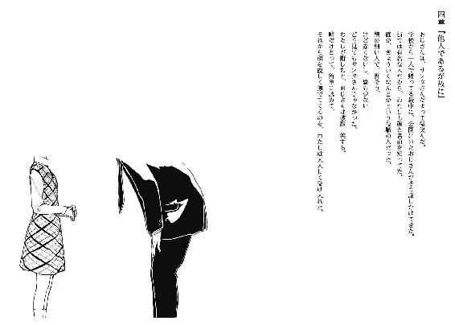
『透はあれッスか、蜜蜂ハッチッスか』
『昆虫扱いされたのは久しぶりだよ......』
初めて長瀬と休日に出会った日、僕らはそんな会話をした。正確を期するなら出会った、ではなく時間を指定して約束したわけだから鉢合わせることは必然で、必要だった。
この待ち合わせをデート、というのは難儀だった。僕らの行った先はバッティングセンター『アシカの番』で、どちらかというとデートしていたのは金属バットと硬球だった。
ゴルフの打ちっぱなしとの二択で、長瀬はフリーバッティングを選択した。クラブをどちらも所有していないから、必定の決定ではあった。
長瀬は時速百キロの速球に立ち向かい、空間を切ると書けばバトル漫画の能力みたいで形がつくけど、早い話が空振りの連続だった。もっとも、稀にチップした場合は手が痺れて飛び跳ねていたから、打てなかったのは不幸中の幸いなのかも、などと言ったら後日、殴られた。
僕は後ろから長瀬の勇姿を観戦し、左利きであることを知ったりしていた。
『つーか、なんでバッティングしてるッスか！』
三十球、計十打席連続三振の記録を樹立した長瀬は憤懣やるかたないという言葉の例として辞書に載りそうだった。僕の隣に腰かけ、肩で息をしながら睨め付けてくる。
『長瀬のは果たしてバッティングといっていいものやら』
『バット振っても行けるのは甲子園ッス！ 違うッス違うッス！ お洒落な喫茶店でレモンチーッス！ その後は何か分かんないけどキンキラした物買うッス！ ご飯は樋口一葉使うぐらいの高級店で割り勘ッス！ それがデートッス！』
『......要約するとだ、茶をしばいて金属製品買って餃子の大食いに挑戦して失敗しろと』
『現実の枠を取り外せー！』
そっちが屈折した背伸びをしすぎてるだけだと思う。
『その後はそこらの原っぱで』『ななななななにをするだぁー！』
『まあ落ち着くのだ』
汗が滴る良い長瀬の頭にタオルを被せる。『はやっ？』と長瀬が疑問系になる。
長瀬フルスイングに感心という名の憐れみを覚えた店主が、タオルをそっと僕に渡してくれていたのだ。それで長瀬の、健康的な汗の滴る肌を拭く。
『あうう......』
『ほら、こっちに身体やって』
頭部を抱え込むようにして胸元へ寄せ、全体的に磨く。長瀬の髪は少し熱く、柔らかい。
『はい、終わったよ』
僕は長瀬を離そうとする。でも、長瀬は僕の鳩尾に頭突きを入れて反抗してきた。
『何してますかコラ』
『も、もうちょっと！』
『え、また三振してくるの？』
『足がポッキーだから！』
『お菓子の家の住人だったのか。しかも虚弱そう』
『違う、そうつったから、太股とか、腰もギックリな感じで、』
『ああ、このままでいろってことか。いいよ』
『はっきり言いすぎ......』
最後は尻すぼみで、首筋に薄い朱色を化粧することで代弁していた。
周囲の客の視線が集い出す。バットも持たずに抱き合っている男女が鬱陶しいのだろう。長瀬はタオルで視界を塞がれて、それに気付かない。僕も、長瀬だけ見ることにした。
金属バットに翻弄され、着方のずれが生じた衣服から覗ける、長瀬の肩と二の腕。
指先でなぞりたくなるけど、手は長瀬に使用しているので、我慢した。
『長瀬って、肩が綺麗だよね』
『そソすかっ？』
『うん、すごく好き』
『あきょけけけけっ』
『......他へ行こうか』
次は長瀬の要求に従い、近場の喫茶店へ入った。
喫茶店といっても軽食の方が専門に寄っていて、僕らが注文した品もレモンの入る余地もない焼きうどんだった。長瀬は『うどんでロマンは得られないッス、カロリーだけッス』と愚痴りながら麵を啜る。運動して腹が空いたのだろう、見事な食べっぷりだった。後で言ったら殴られたけど。
お代わりした水も飲み干し、長瀬はようやく重力を取り戻したように落ち着く。酔ったような赤ら顔も肌色を職場復帰させ、素面の長瀬になる。そこで、僕は少しだけ真面目に話した。
『あーっとさ、ごめん』
『急にどうしたッスか？』
『いや、デートとして成立してない気がするから』
長瀬は目を丸くし、その後は曖昧に笑って『まあそうッスねー』と頷く。
『デートに、長瀬の求めるものが全然なくてさ。もうちょっと行き先とか考えとけば良かったなって』
何しろ、昨日の午後十一時にメールで打ち合わせして、十二時間後に会っているのだから。
長瀬はグラスを振り、氷の音を鳴らしながら、『そうッスねぇ』と言って、
『お洒落とは無縁ッスね。でも焼きうどんは美味しいし、バット振るのも楽しかったから、これで十分満足してる』
長瀬は満ち足りた笑顔で肯定する。素振りが娯楽になるなら、ソフトボール部への入部を勧めようかとも一瞬、悩んだ。けど場の空気を読んで口外には進出させなかった。
『そか。じゃあ、いいんかな』『ッス』
さっきまで愚痴ってた気がしたけど、今は本当に楽しそうだ。不思議な子だな。
『ま、今回は良いッスけど、次回はギンギラギンな感じでよろしくッス』
『......さりげなく善処するよ』
長瀬が水のお代わりを貰い、暫くは雑談に興じた。
その途中、こんな話題になった。
『透は地元の大学に行くッスか？』
長瀬は、行くことを前提にした質問をしてきた。なので、僕は返答に淀みがあった。
『就職しようと思うんだ、高校出たら』
『あ、そうなんだ』
『僕はさ、叔父の家で世話になってるから。そこまでは、ちょっとね』
叔父、という言葉とお茶濁しで、長瀬は何か察したらしい。
『透の家族の話は、ちょっと重かったりする？』
長瀬は、僕が『事件』に巻き込まれた人間であることを知らなかった。
『うん、全員亡くなってる』
僕は、その理由と原因を語らなかった。
もしかしたら、ずっと隠し通せていたら。
彼女が長瀬透でなかったら。
或いは、まだ。
長瀬は『そうッスか』と感情のない反応をして、水をちびりと啜る。
『んーと、透は家族の話をして傷つく性格ッスか？』
『そんな奴に見える？』
長瀬はそれの当否を答えず、微笑む。
『透のことは知りたいけど、嫌なら絶対に話さないし尋ねないから、ちょっと確認』
......ちょっと新鮮。
人に気を遣われるっていうのは存外、悪くない気分なんだなって。
『大丈夫だよ。僕は人より切れやすい神経と、その後の繫がりやすさが自慢なんだ』
『凄いッス、アメーバみたいッスね』
で、その後に蜜蜂扱いされてから、互いの家族話に話題は流れていった。
『久しぶりって、昔はなんだったッスか？』
『前は、妹に働き蟻と呼ばれてた』
『ほほー......』
長瀬の目が飛ぶ。良からぬことを想像しているのが透けて見えた。
『じゃあ私も、透を専属の働き蟻に指名ッス！』
『じゃあ長瀬は鈴虫ということで』
『いいッスか？ 鈴虫って産卵する前に雌が雄を食べちゃうッスよ』
『ふぅん、ということはあれだね、子供は作るわけだね』
『セクハラ禁止ッス！』
すれてない長瀬の慌てふためく姿は、心を刺激し、同時に柔らかくもする。
『ところで、私も妹がいるッスよ』
長瀬一樹については、その時初めて耳にした。
『今、小三だから七つぐらい年の差あるッスけどね。最近は生意気盛りでよく骨折するッスよ』
『......体罰？』
『あいつ、空手とかやってるッスから。今日もソフトボールの試合があるって言ってたッスよ』
なるほど、良いことを聞いた。
『じゃあその子の試合でも見に行こうか』
『んー、それでもいいッスけど......いいッスよ』
『気乗りしないなら他のとこ行こうか』
『そーいうわけじゃなくて......一樹に唾つけるのは禁止で』
いらぬ心配をされていた。物悲しい。
『時間は、もう始まってたりする？』
『一時からって言ってたし、大丈夫ッスよ』
もう少し、きっちゃてんでだべることにした。
『私もちょっと複雑な家庭ッスよ』
『そうなんだ』
『私にはあんまり関係ないッスけどね。お父さんと祖父ちゃんの問題らしいッスから』
『ほお』
『その所為か、祖父ちゃん祖母ちゃんに対する見聞知識がなーんにもないッスよ。お年玉を幾らくれそうな人かも分かんないッスねぇ』
『ふぅん』
長瀬が唇を尖らせる。『気のない返事ッスね、プライベートなこと明かしてるのに』
『コメントが難しい話だから』
僕が立ち入るべきじゃない、とかではなく、単純に内容が思いつかない。
長瀬は逡巡し、『ま、それもそうッスけど』と締めくくった。
それから三十分ぐらいして、店を出てから、
『それで、いつになったら私を名前で呼んでくれるの？』
『日本語学ぶ学ぶ、もう少し大変』
『あはは』、と長瀬の小さな笑いを頂戴した。
『面白い噓つきッスよねぇ、透は。名字がよく似合ってるッスよ』
『ああ、それは僕も気に入ってる』
本当の名字ではないけど。
その後、僕たちはその場の思いつき通りに、長瀬一樹の出ている試合をチケット抜きで無料観戦した。そして試合終了後に長瀬一樹と出会い、正拳突きを頂戴し、何だか理解し辛いけど懐かれ、長瀬が盛大に嫉妬して、まあ、楽しかった。
愚痴が多かったり、動作が大げさだったり、楽しかったりした理由。
浮かれていたんだなぁって長瀬と別れてから得心した。
二人して、好いた惚れたに浮かれっぱなしだったわけだ。
探検ごっこに興じた翌日。
探偵ごっこに臨む今日。
僕は一樹経由でノートを長瀬に返す為に出かけたら、いつの間にか屋上のベンチに座り込んでいた。このベンチが曲者で、背もたれの下、丁度尻の触れる部分が滑らかにへこみ、座り心地が良いのである。全体重を預けて、ベンチに埋もれてしまうというか、まあベンチへの御託で逃避がちになるのはここらで打ち切ることにした。時間を湯水のように使えるほど余裕はない。午後は外出する予定だし。
昼前の屋上は、暖冬という二文字が似つかわしい暖かさが蔓延していた。申し訳程度に吹く風も、通り抜ける際に身体が軽く震う程度で、尖った部分がない。不良少年が性転換して深窓の令嬢になったようなものだ。今日という日に限って。
その為に僕は、冷温を口実にこの場から去りゆくことが許されなくなっていた。
ベンチの隣には、僕の病室には来ないと約束した長瀬。今日は土曜日で、久方ぶりに私服姿を拝見している。以前も同一の感想を持ったけど、没個性な格好だ。常に脇の下から草履がはみ出ているとか、もっとキャラ立てを模索していくべきだと、長瀬の個性を勝手に憂いてみた。
「見つめられると挙動が難しくなるッスよぉ」
照れてる長瀬。まあ、僕の心の中は何も伝えまい。
さて、何故長瀬はここにいるのか。彼女は僕ほど噓もつかず、律儀な部分を持ち合わせているので公約通りに病室へは訪れなかった。けど、僕が一樹の病室に行って、見舞客の長瀬と遭遇してしまったわけで、屁理屈じみてはいるけど何も問題はあげられない。長瀬のにこやかな『おはようッス』には顔が引きつった。故意か、偶然か。
で、長瀬姉妹を両手に彼岸花みたいな状態で屋上へおデートに来ていた。
一樹は今、洗濯物を取り込んでいる『せんせー』にじゃれついている。例の看護師さんだ。『今日の下着は何色かなー？』とお早う御座いますの代わりにセクハラする人間（聞かれたのは僕である）を先生呼ばわりとは、一樹も人を見る目がない。
だから、僕にも懐いてるのかな。
「なんか、ほのぼのッスね」
陽光に目を細め、前髪を押さえて風から守り、長瀬が呟く。はしゃぐ娘を木陰から眺める母親のようであり、縁側で置物の一種と化して孫を慈しむ老婆のようでもある。もし言うなら、何となく前者の方が友好的な態度を取ってくれる気がする。
「そうだねぇ」
僕も縁側の爺（付録品は煎餅か膝上の猫）に成りきって返事をした。
「平和ッスねぇ」
長瀬も釣られて老化現象が発生している。
「団欒だねぇ」
「別にそこまで楽しいわけじゃないッスけどねぇ」
このまま昔話の登場人物に抜擢されそうな僕らだった。
それはいけないと悟ったのか、長瀬が若返りの水を浴びた、もしくは若作りになった。
「でも一樹はあれッスね、ほんと、透が好きっていうの伝わってくる」
長瀬が、一樹に視点を固定したまま言う。僕としては「そうかねぇ？」と返す以外ない。まだ僕は若化現象に見舞われていないようだ。
「あいつ、隣人がいなくなってから、何だか怖がりが酷くなってるの。今じゃ、病室からほとんど出たがらなくなっちゃって」
「あー、思いの外、重症なんだな」
「でも、透がいると外に出て跳ね回りたくなるんだから、大したものッスよ」
「いやそんな、あからさまに褒められると図に乗っちゃうなぁ」
「透じゃなくて一樹が偉いって話ッス」
お澄ましさんな物腰で長瀬に切り捨てられた。不可解な問答に理解を追随させるべく、精神を六十歳ほど巻き戻す。けど、背筋は猫背から改善されない。
「好きな人といれば恐怖も軽減されるなんて、我が妹ながら乙女すぎるッス」
「僕はマユといれば悩みまで健忘症するけどねっ」
「なに張り合ってるッスか......」と馬鹿を見る憐れんだ目つきで呆れられた。
どうも、男性の立場では尊敬の対象に成り得ないようだ。
「今日、まーちゃんは？」
「夜更かしの疲れを癒す為、静養されておられる」
「そうなのですか」と、誰を対象に受け答えしているか曖昧な返事。
僕と正反対、扉の方向へ流し目を送り、それから目の玉だけ横飛びさせる。
「少し聞いていい？」
長瀬の様子が変化し、語尾から癖が一時撤去される。
「内容による」
それもそうッスね、と長瀬は一度笑うフリをして、
「まーちゃんのことだけど」「内緒」
言語道断と切り捨て返した。長瀬は、怒号の代返に眉根を寄せて嘆息。
「八年前に何があったか、事の顚末だけでも教えてほしいの」
「だから、内緒」
真摯な瞳で要求されても、困惑と拒絶しか生まないわけで。
長瀬に、それを学ぶ理由はあっても権利と義務はなく、僕には話す必然がない。語られない方が自然なのだ。
けど、長瀬は引き下がらない。僕の好きになる女性は、ワガママと紙一重に頑固を貫く性格の持ち主である割合が多い。勿論、マユは危険と薄紙一枚のワガママで、別格だ。
「じゃあ......菅原君は？ 菅原君が、その、この街の殺人犯だったってみんな知ってるけど、あれはどういうこと？」
「どうもこうも、僕は生徒会長と友達じゃないし共犯でもないんだ。如何様なコメントを寄贈しろと？」
「菅原君はそんなことするような男の子じゃなかった。誘拐されて、そこで、何かがあったに決まってるから。だから......教えてよ」
項垂れ、懇願される。今にも一転して泣き喚き、僕に理不尽かつ激昂な罵りを突き刺してきそうな、点火寸前の雰囲気も散見される。
こういった感情の高ぶりへの対処は、慣習となっていた。
まーちゃんのみーくんだから、ね。
「長瀬」と、彼女の名字を強めに口頭する。
長瀬の顎が上昇し、額に垂れていた前髪が左右に分かれる。
「勘違いしてるようだけど、僕は教えられないんじゃなくて、教えたくないんだ。意地悪してるわけじゃない、身近な人に細部まで詳細を把握されるのが、堪らないだけなんだ」
忘れたいわけでもないけど。その言葉は付け足さず、心の何処かへ送信した。
「昔、長瀬の言ってくれたことが新鮮で、嬉しかった。僕の嫌がることは話さないし、尋ねないって。それを僕も実践してるつもりだよ、事件のことは僕だけじゃなくて、マユも嫌がるだろうから」覚えてさえいれば。
良質の思い出を利用して、長瀬の言論を封じる。
当然、長瀬は釣り目で、僕に的確な評価を下した。
「卑怯者」
「自覚してる」
だから、長瀬にもこんな接し方をしていられる。
「卑怯者、卑怯者、卑怯者、卑怯者、卑怯者......」
繰り返し、罵倒される。
その言葉以外は不適格だ、と主張も兼ねて。
僕は左腕の包帯をさすりながら、聞き漏らしのないよう、耳を傾ける。
「馬鹿にしてるとかそういうことじゃなくて、透は間違ってるって言ってるの、分かる？」
「正否はさておき、長瀬の主張は分かってるつもりだけど」
「じゃあ、なんでそんなに平気そうにしてるの」
長瀬の、僕を別の動物に仕分けするような指摘。
僕はそれに返すものを、思い出から発掘した。
「切れやすくて、繫がりやすい神経だから。痛みを受け流すのは、得意なんだ」
そう言うと、長瀬は記憶との合致によって舌の動きを静止した。
過去はまだ、長瀬の中で蓄えられているわけだ。
それも今となっては、気まずさの温床に過ぎない。
長瀬の口元や、目の伏せ具合から読み取れる気の陰り。
僕らの間で何かが途切れ、顔を逸らし合う。
微風の運ぶ、寒冷の痛々しさが増した。
「透」「僕は今、透じゃなくてみーくんだよ」
それは、明確な拒絶を卑劣に、遠回しに伝えるものだった。
長瀬の表情に差し込む陰を視界の端で見届けながら、見向きもしない。
一樹と看護師さんは何処から調達したのか、シャボン玉セットで気泡を製造し、空気に無料配布していた。緩い空気の流動を動力源に、透明な球体が数秒の生涯を謳歌する。
そのシャボン玉ぐらい軽く、長瀬がベンチから離脱する。「帰る」と最短の文字数で、帰宅の意志を示して。
長瀬と遊んで別れる際、その言葉の語尾にはいつも『ッス』があった。
今は、何も続かない。
「これだけは言っておく」と、僕は遺言のように語りかける。
「なに？」と長瀬が冷淡な調子で振り向く。
「長瀬は、僕らの間に非常に特殊な出来事があったと考えている」
「そう......ッスね」
「けど、本当は異常に特殊な事態が発生したんだよ」
僕と、彼女と、彼に。
偽りと、偽りと、偽りを与えた。
「......そういう言葉遊び、嫌いだから」
長瀬の右手が握り拳になって、頭にでも飛んでくるかと予測した。
けど爪は手の平に食らいついたまま離れず、長瀬は射程内から外れていった。
僕と長瀬が会う度に得られるものは、好まざる、望まざる、透き通らない感情の煮凝りだけだった。
長瀬は、戯れる妹に近寄り、二、三言を告げてから屋上の出入り口へ一直線。
その長瀬透の姿が消える直前、言い忘れた言葉を、今更のように思い出した。
ながせさんに、伝えないと、いけないことを。
と、長瀬が屋上から出ていったことを引き金に、看護師さんは放置していた仕事を引き寄せ、一樹は溶液が入った筒を受け取ってから、僕に駆け寄ってくる。その最中も緑のストローを吹き、軌跡としてシャボン玉を舞わせた。
ベンチに座っている僕より、膝前に接近した一樹の方が長身だ。「ひゅへへー」とストローをくわえたまま、新言語で御挨拶された。現在は片手しか活動出来ず、その手に筒を握っている為、ストローの扱いに困窮しているらしい。僕が筒係を受け持ち、ようやく一樹が日本語を復帰させる。
「ねーちゃんどしたー？」
「僕と同じ空気を吸うのが嫌だってさ」
多少の脚色を交えて報告する。それに対する一樹の反応は、シャボン玉だった。
溶液にストローの先端を浸し、僕の頭上に吹く。
シャボン玉は軽快に生産され、ベンチ周辺に日常的な幻想を演出した。
「いやされた？」
一樹が柔和な優しさの感想を求めてくる。
「慰めてくれてるわけですか」「なのです」
僕が以前そうしたように、一樹に髪を撫でられた。ストローから垂れる液体が頭皮を刺激する。それでも、僕に与えられるものは無下に振り解けなかった。
その最中に丁度、看護師さんが洗濯物を大量に篭に詰め、屋上から去る時に目が合う。
意地の悪い、年上の笑い方をする。『モテますなー』と唇の動きだけで揶揄してきた。僕らが屋上に訪れた当初は、事件調査という言語道断を周囲に強制する言い分で院内を競歩気味な警察を邪魔者扱いし、機嫌を損ねていたが、それも回復した模様だ。
僕は手首に頼って、追い払う動作で返答する。最後の含み笑いに、肌がざわついた。
「あ、せんせー、お達者でー」
何の影響なのか、時代がかった挨拶をしながら、看護師さんに一樹の手が振られる。
それに伴い、頭撫では体温の上昇というむず痒い余韻を残して終わった。
「で、一樹はシャボン玉の用具を常備してる不思議ちゃんですか？」
「せんせーから貰ったの。せんせーのポケットは色んなものを出し入れ出来るんだぞー」
そりゃすげえ、一般的に丈夫な三次元ポケットだな。
二人きりになったからか、一樹が膝上へ飛び乗ってきた。僕を見上げて、上等な笑顔と「ぬふふー」、信者の甘め裁定でユーモラス、標準の評価で不気味な笑いをあげる。
「せんせーがね、お返しにとーるに今日のパンツの色を教えるってー」
「......あの人を師として尊ばない方が、立派な大人になれるよ」
全く、困ったものだ。でも一応聞く。耳の穴かっぽじって、一応聞き漏らさない姿勢を取る。
「ではー、えーと、ぎゅるぎゅる......とらんすぺあれんとれっどおきさいどだって」
「.................................取り敢えず、赤..................」
「お、想像してるー。えろじじー」
揶揄する一樹に虹玉を吹きかけられた。別に我には返らない、心中の赤色を失っただけだ。
「別に興味ないさ」
前髪をいじりながら、体裁を整えてみる。その拍子に、小指に引っかかったシャボン玉が二つ破裂した。僕と長瀬の関係ぐらい容易く、脆く。
「ねーと」以下略。「今日は、あたしとランチしない？」
「んー」マユは、日頃の睡眠時間から逆算すると、昼過ぎまで夢遊びをしてるか。「そだね」
「でー、ご飯食べたらあたしと、んと、なんかしてあそぼー」
一樹の声の高低から、食事よりその提案に比重が置かれているのが分かる。
しかし、本命の方は、丁重に断りを入れた。
「せっかくのお誘いだけど、今日は昼過ぎから、墓参りに行く予定」
その説明を耳にしながら、僕を見上げる一樹の童顔は、光を感受する器官を疑問系に垂れ下げる。
「お墓？ だれの？」
「僕の母親の命日なんだ」
年四回春夏秋冬取り揃えて、山に面した霊園に赴いている。
母の死んだ日が冬。父と妹の母親が春に、兄が夏、妹が秋。
この中で最古参が母で、最も思い出を積み合わなかったのも母だった。
じゃあ、母だけが仲間外れかという苛めっ子の指摘は、早合点というものだ。
本当の孤立者は、妹。彼女だけ、未だに夜更かしして墓に入らず、死体は行方知れずだ。
「とーるのおかーさん、びじんさんだった？」
一樹があどけなく尋ねてくる。まるで、マユのように。
「顔は、あんまり覚えてないな。背の高い人だったけど」
親父より上背で勝っていたはずだ。気味悪いくらい長足で、行動や性格、喋り方が一貫してアイロンがけされていた。ハキハキテキパキシャキシャキしていた、とそこまで母を憶えているのに、顔立ちだけは、過去の沼から浮かび上がらない。没後も、写真で幾度か姿を確認しているのに、定着しない。
「シャボン玉みたいな人だな......」
実体を見ることが出来ても、摑むことは困難。僕にとっては、そんな位置づけか。
僕の名付け親であるという、わだかまりもあるし。
「じゃー、きれいじゃないの？」
僕の独白に、一樹が割り込む。実例として、シャボンを生んで。
「そうかも。でも一樹はシャボン玉みたいな美人にならないようにね」
忠告の意味を理解しているのか定かじゃないけど、一樹は「分かったー」と教えを受諾した。
「で、一樹ちゃんや」
「なにかねとーるじじー」
無邪気と無垢の取り合わせにジジイ呼ばわりされ、顔に青線が入りそうな高校生だった。
気を取り直して。
「ちょっと話したいことがあるんだ」
虚偽を削除すれば、詰問したいことがある、と表現するのが正確か。
「なんだなんだー？」
「ああ、僕の病室に行ってからね」
「こ、こくはくですか？」
「僕はそこまで法律が嫌いじゃないよ」
溶液をストローでかき混ぜて、きゃーきゃーと悶える一樹には僕の言葉が届いていない。
そういう、単純な部分を持ち合わせているところは、長瀬の妹であると実感する。
かつて、僕と歩く公害バカップルの片棒を担いでいた頃の、長瀬。
その『かつて』が切なさと苦味の結晶になると、何を以て予想出来たというのか。
「とーるは彼女さんがいるから、これってせいしゅんのふたまた？ きゃー、どろぼうねこよばわりされちゃうー、きゃ」「止まれ」一樹の停止ボタンを押した。「ううっ」......全く。
今の長瀬は、僕が近しかった頃より幾分、複雑になっている。
それは僕と長瀬の距離感の所為か、もしくは全く別の要素が引き起こしているのか。
僕には、区別がつかなかった。
出来るのは、区切りを入れることだけか。
病室には衰弱した度会さんと、テレビと睨めっこして僕という生物をなかったことにしている高校生。中年さんは早朝から理想の看護師を求めて旅に出た。
僕の寝床まで、温柔な少女を合意の上で拉致する。一樹は僕の前方まで駆け出し、暫くすると帰巣するヨーヨーみたいな乙女だった。
妄想が特盛りの一樹をベッドに腰かけさせて、僕も隣接して座る。そうしたら一樹は一転がりし、僕の膝を椅子にしてきた。屋上で気に入ったのだろうか。
「で、でー？ あたしのばすとさいずとか聞いちゃう？」
高校生が無視しきれずに僕らを注視してきた。布団の奥から度会さんの血走った目も濁り光っている。何だか、人としてされてはならない誤解の呼び水となった気がする。
「ちなみに聞いたらねーちゃんに言いつけます」
「やめてくれ、頭をかち割られる」
大体、一樹はまだＡどころか平仮名の『さ』あたりの位だろ。測ったこともないくせに。
「じゃー、深いお付き合いのために二人で何を語るの？」
いつそんな条約を結ぶ場を設けましたか。最近の出来事は、血の気の盛衰に影響しすぎる。
「残念の極みなんだけど、今の君と仲を防空壕ぐらい深めるには障害が多すぎるんだ」
「国家のいんぼー？」
陰謀かはともかく、真にその通り。
「そういう込み入った話は五年後にお互いを引く手がなかった場合に執り行おう」
「えー、でもお金があれば年の差なんて気になんないって、せんせーが言ってたよ」
「年の差は問題なくても、基本の数字に支障があるのだ」
六十二歳と七十歳なら『お盛んですね』で流されるが、十八歳と十歳では『お巡りさん』だ。
僕の日本国憲法に基づいた冷静な否定に、僅かに機嫌をひん曲げ、サイドテーブルに佇んでいるシャボン玉セットに手が伸びる一樹。
「お話ってなによー？」
せっつかれた。どうにも、本題に入る前に遊びすぎる嫌いがある。自省しよう、と上っ面に誓った。
「名和三秋のことを聞きたいんだ」
その名前が出てくるとは思いもよらなかったのか、一樹の瞼だけが活性化し、他の器官は取り残される。
「よばいじゃないの？」
「あの看護師さんから教わった単語は、日本人に使っちゃ駄目だよ」
この子の健全な将来を育む為に、僕も一役買っておいた。一樹は実直にそれを受け止めるなどあるわけもなく、「ふん」と拗ねを安直に表し、屋内をシャボン玉で飾り出す。こらこら。
「あのな、僕は彼女と十八歳なお付き合いをしてるんだぞ。他の人に色目遣えないだろ？」
十歳児に何を説明してるんだ、と客観的な見方をすると背筋が寒くなるので主観に拘る。
「ぷー」
吹く吹く、飛ぶ飛ぶ気泡の群れ。
心がねじけて我意をはる際の顔の作りは、姉と酷似していることを発見する。
ただ、気分の捻りを矯正する方法は、一年前の姉ちゃんに使えても妹には行使出来ない。
誤解が募る行為は避けたい。
池田兄妹では妹の方をやっている杏子ちゃんの方が干支は二匹分も遅れているのに、遥かに大人びていた。精神の成長する速度も、植物と同様に環境で決定されるわけだ。言動に、芯の通り方が異なる。
「一樹はさ、名和三秋がどうしていなくなったか知ってるんじゃないか？」
相手の状態に構わず、話を振ってみた。
一樹はストローを口に携えたまま、唇の端に指を当てて首を傾け、演劇の如く不理解を表す。
釣果は、悪くないみたいだ。
「昨日話した時、一樹は犯人を捕まえてばんざいと言った。その時、僕はまだ、名和三秋の所在を不明にした可能性のある他人、つまり犯人の存在を指摘していないのに。僕の思い違いならいいんだけど、その『犯人』について何か思い当たる節があるんじゃないかなって」
一樹は無言で、筒とストローを棚に預ける。シャボン玉一座は、同様に透明な窓と衝突し、集団で神隠しに遭った。詩人なら、僕の存在のようだ、などと吹聴しかねない光景だった。
「そんなこと、言ったかなー？」
一樹は取り乱しなんて無様な振る舞いはせず、朗らかに、快活に笑い事として対応する。
この会話に、何処までもそぐわない、優しい音色で。
「いや、憶えてないなら構わないよ」
「そーお？ なんならぎゅるぎゅるして頭出しするよー？」
悪意の欠片さえ取り除かれた、長瀬一樹という人格。
慌てず騒がず転ばずに保ち続ければ、将来はさぞかし良質の人間になれるはずだ。
それはまだ、過去形じゃない。
「それより、一樹は、夜中にトイレ行く時は同室の人に同伴してもらってたんだろ？」
「怖がりさんじゃないぞー」
間延びに抗議してきた。「まあまあ」となだめすかしつつ、次の質問に移る。
「名和三秋にもお世話になってた？」
「うん」
「規則正しい人だった？」
「うーん、まー」
「焼きそばパンとか買いに行かされた？」
「んにゃ？」
その首の傾きで、世代の差が身に染みた。
「......よし、僕の話はこれでお終い。他に何話そうか？」
その宣言と提案に、一樹が浮上する。
「では、ねーちゃんのどこを好きになったか、とくとくと語りなさい」
「あーなんていうの、中身と外見の合致と不一致的みたいな......」
などと、意味はあるけど積み重ならない会話に暫く興じていたら、戸に無駄な後押しで勢いをつけて開かせ、看護師さんが昼飯配給に訪れた。
看護師さんの声が慣れ親しむのは、健康上よろしくない気もするけど、お馴染みではあった。
「はいはーい飯よー、フォアグラになるまで諦めるなー」
レストランのバイト学生と勘違いしているのか、両手の指先から二の腕まで活用し、トレイを四丁運んできた。僕の膝上の生き物を見るなり、優しげに唇を緩める。
「式の日取りはいつかしら？」
「黙れトランスペアレントレッドオキサイド」
暗記してしまった。明日も明後日も明々後日も使いどころのない、脳内における三軍送り確定の知識である。
今日の献立は親子丼と白味噌の玉葱汁だった。この病院の食事はわりかし、味の体裁が守られている。入院前にイメージしていた、一口賞味した直後に調理人を呼びつけるほどの劣悪さはない。
「ありゃ、竹中さんは？」
中年さんの不在について、僕ら三人に所在の追及をする。
あなた方の尻を求めて長い旅に出ていますと語る勇者はいない。
「ま、いないなら知らん。一樹はここでこのお兄ちゃんに食べられちゃうの？」
「迅速にクビになれ」
「食べるの？」「食べない」「じゃーとり肉だけもらったげる」「そうじゃないって、あーもう」
僕だけ特別に玉子丼となった。汁気を含んだ玉葱の切り身が、鶏の代理を虚しく務めている。
「つか度会しゃん、なに死んでんの。おっきしなさい」
看護師さんが度会さんの第二の肌である布団を無慈悲に剝がす。
その中には、血色の悪い、カブト虫の幼虫みたいに身体を縮こまらせる老人がいた。
流石にただならぬものがあると危険を察したのか、看護師さんが仕事の顔になる（出来たのか）。
「検査、昼から受けます？」
「いい、いい」と出来立てのゾンビぐらい頑張って伏臥上体逸らしの過程をこなす。
看護師さんはその様子をこめかみに指を当てて見守っていたが、患者の意志を尊重した。
「ご飯、食べられないなら他の人にあげちゃって下さいよ」
残せとはあくまで勧めない看護師さんであった。
それにしても。
長瀬透に、長瀬一樹。
姉妹ともども、虚偽の申告は苦手らしい。
僕と同様に。
「うーむ、とり肉はほんのりシャボン玉のお味。にがーっ」
「間違えてストローを吸ったからだろ」
ただ違うのは僕が、常習犯ということだけだ。
「送ってかなくて大丈夫？」
昼飯を仲良く食べて一休みした後、僕は一樹にそう尋ねた（尋ねさせられた）。
「うん、家まで近いっすからー」
一樹ちゃんは頰の色素まで演技に駆り出し、ノリノリである。長瀬はこんなやり取りまで妹に報告していたのか、と流石に厚顔無恥な僕でも頂けない気恥ずかしさだ。
「おわかれのちゅーは、今日はどっちからするっすかー？」
ちくしょう、一字一句間違ってねぇ。口から魂吐いて逃亡したい。
「手、離してくれないと帰れないっすー。でもまだ帰りたくもないっすー」
繫いでねぇ！ 音速で立ち去れ！
「そっ、それとも、あれっすか、今夜は帰らせないってやつっすか。こっ、公園で、原っぱで」
溜めまで再現してんじゃねえ！ この、この......、
「......勘弁してください」
小学四年生に平伏した。一樹は、「よしなに」と誤用しながらご満悦だった。
僕が大和撫子に女装してたら辱めのあまり舌を嚙み切ってるぞ。
「冗談はさておき、あの看護師さんに付き添ってもらったら？」
呼べば即座に壁の染みあたりから現れそうだし。
「昼間だからなんとかなるの、子供扱いすんなー」
憤慨する一樹は、病室の扉まで駆ける。扉を開けて「またねー」と和やかに言い残し、走って廊下に消えていった。
「おい」
その途端に、老い先とは裏腹に野太い声がかかった。
布団から半身を這いずり出し、蝸牛の擬態を行っている度会さんが、僕に突っかかってきた。
「さっきの話、なんじゃ」
「はい？ いえ決して結婚詐欺の予行演習をしていたわけでは」「あの子に犯人がどうたら聞いとったやろ」と、度会さんがくって、かかった。
一匹釣ーれた。
語気と息を荒く、度会さんが尋問してくる。
うむ、体調がお戻りになられた。わざわざここで一樹と話した甲斐があるというものだ。
「ちょっとした好奇心に基づくたわむ」「ぐだぐだ言わんと答えりゃええわ」
本体が布団から射出された。
僕と密着する、黄色い歯垢の目立つ老人。
高校生は売店にお出かけしている。僕ら、嫌な二人っきり。
「耳は遠くないんですね。僕らの話が聞こえたんですから」
「おお、まだ現役やわ。で、はよ言え」
「言う理由がないです。度会さんは何かご関係でも」「ある」
あっさりと言い切られた。
「名和三秋と長瀬一樹、どちらにですか？」
「......長瀬一樹に、ある」
威勢に向かい風が吹き、口をまごつかせる度会さん。
「どんな、ですか？」
僕の質問に、度会さんは言い渋る。老人虐待だ、と反撃は来ない。
「言うつもりがないなら、僕、用事があるんで失礼します」
「わーったよ」
僕に急かされ突かれようやく、爆発物の発言を晒した。
「あの子、長瀬一樹は俺の孫だ」
目の中で何かが爆ぜた。
脳味噌が刺激に感化されて暴れ出す。
......真正面から背後霊に襲いかかられるような、予期の及ばない展開だ。
「つまり長瀬の......名字は？」
「長瀬は母親の方の名字。結婚する頃、息子は俺と喧嘩してたから、同じ名字を名乗るのも嫌だっつって、嫁さんの名字を使ったんだわ。だから違うんだ」
「.............................................」
長瀬の。一樹の。
血縁。孫、祖父。
つまり、それは所謂......だから、
僕の放った釣り糸とは、別の方法で引っかかったなぁ。
「そんなに惚けるようなことか？」
「いえ......ということは度会さんは、味にうるさい大御所なんですね」
「はぁ？」
骨の主要成分が不足した老人には、軽い洒落も癇に障るらしい。
「でも、一樹や長瀬は貴方のことを全く気にかけてませんでしたね」
ことをのあたりで失言かと危惧したけど、中途半端なことはせずに最後まで言い切った。
度会さんは、寂寥に彩られた受け答えをする。
「面と向かって自己紹介したこともないからな、あいつらは俺のこと知らんよ」
「ああ......」そうか、長瀬が昔......「そうでしたね......」
「だが孫に無関心でいられる爺婆ってのは、なかなかいないもんだ」
度会さんの、深い感慨と年月の練り込まれたご意見。
マユの祖父母を、何となく連想してしまう。
そんな僕の感傷には引かれず、今にも僕の胸ぐらを締め上げそうな度会さんが、唾を飛ばす勢いで詰問してくる。
「俺の孫を、厄介に巻き込むなよ」
「滅相もない。ただ、あの子と約束したんです。名和三秋を見つけると」
「見つけるって、お前警察の人間か？」
「いいえ、僕はただ、まかり間違ってたら、貴方のことを義祖父さんとお呼びする可能性のあった者です」
まだ、妹さんの方との可能性は過去形で括れないのですが。なんて、祖父の神経を逆撫でするお茶目さんな僕は、今は職場である舌を放棄し、心中で言葉のバイキング中だ。
「ああそうだ、そうだ、そうだ、お前は透と......」言葉尻は、舌打ちだった。
「や、気まずい関係やらして頂いてます」
やらしい関係気まずく頂いてますと言いかけた。舌休めしていて僥倖だった。
木々の如く受け流されて毒気が抜けたのか、或いは僕の毒に侵されて魂の奮いを失ったか。
老人にあるまじき興奮を発憤しきり、度会さんは自身の住処に引っ込む。
「孫のこと、何の交流がなくても大切なんですね」
「自分のガキが、親になる。その歳月の感慨や、俺が初めて子を授かった時の回顧。そういった感傷的なもんが、後押しする。だから孫ってのは良いもんだと、大抵の爺が思うんさ」
しんみりと、人情もの路線の語り部となる度会さん。
僕もついつい、聞き手に回る。隙を探しながら。
「だからあの、いなくなった女の子も災難たぁ思うが、両親の俯く姿の方が見てて辛いわ」
......今のは。
空気に、不協和音な波風を挿入する為の、切っかけ。
「......女の子、ですか？」
僕はわざと区切りを入れ、疑問符をぶつける。
釣果の確認の為に。
度会さんは萎んだように眼球周囲に皺を寄せ、睨め付けるような視線になる。
「なんかあるのか？」
「いえ、女の子ですか？」
「ああ？」
何だか苛ついているのか、語気も荒い。
僕は「おかしいですね」と冷たい前置きをして指摘した。
「どうして死んだのが女の子だって知ってるんですか？」
「何でって......」
「あの子の名前はなわみつあきですよ。男の名前としか思えないじゃないですか」
今の証言は、明らかに矛盾しています。人に突きつける為の指をビシッと。
僕の追及に、度会さんは困惑と、呆れ顔を浮かべた。
「一樹と同じ病室やぞ？ 分からん方がおかしいわ」
「へぇ」それは確かに。
「それに新聞も見てないんかお前？ デカデカと載っとるぞ」
度会さんは、赤潮の如く発生しかけた困惑を掃除して回答する。
「ああ、なるほど。そういえば見てませんでした。......で、ですね」
「次は何だ」
「もう一つ質問しますけど」
「だから、何？」
「どうして女の子が死んだって知ってるんですか？」
「だからお前は、」
そこで、度会さんの心臓と血液以外が一時停止した。
自分がどんな杜撰な対応をしたか、遅蒔きに理解したみたいだ。
「テレビや新聞では、まだ失踪扱いなんですよ。誰も殺されたなんて記事になってない。なのにどうしてその点について言及しないんですか？ 僕の言葉、聞こえてましたよね。僕は今、死んだ女の子って言ったんですよ」
耳の方はご健在なんですよね。自分の耳を指でノックし、嫌味な追い打ちを付属させた。
度会さんは混乱している。文章にすれば一行の、その困惑は刻一刻と移ろい、視聴者を飽きさせない。虹彩の清濁、鼻のひくつき、手の所在ない微震。
やがて逃げ口上を閃いたのか、全体的な迷いが一点に収束する。
「済まんが、よう聞いとらんかった。年取ると、人の話を全部聞ける集中力がなくなってなぁ」
「そうですか。それは些か物悲しいですね」
噓だけど、胸に手を当て、首を横に大々的に振る。奈月さんの物言いになってるな。
「災難と心を痛める人間の安否に、興味ないんですか。一樹との話は問題なくリスニング出来たみたいですが」
「そりゃ、俺の孫の話だからな」
間を空けずに出た言い分にしては、筋がある。僕もマユに関してなら超音波の小言だって拾える自信がないこともない。気概はともかくとして、噓だけど。
「それもそうですね。やっぱり孫は目に入れられるぐらいだから、耳の穴にも住めますよね」
「おうおう、いや意味分からん」
踏まれ続けていた尻尾を解放された犬のように、度会さんの肩の強張りや筋肉が弛緩するのを見て取れる。その一瞬に、僕は言葉を差し入れた。
肋骨の隙間に指を突き入れる、そんな感触が舌の上に巻き起こる。
「あ、もう一個あるんです」
「コロンボか......」
度会さんは弱々しく笑む。まるで自分が老人であることを知らしめるように。
僕は、そんな風にしか物事を捉えられない自分を嘲笑いたくなった。
「殺されたって知ってるのは何故ですか？」
二度あることは、三度あると。
度会さんの身体や顔面は今や、驚愕と驚嘆の為だけに労働していると言っても過言じゃない。
さぞかし健康に悪影響と偲ばれる。
「僕は一度しか死んだとは言ってないんです。殺された、と次はそう表現したんですよ。こっちにも疑問の余地がないんですね、度会さん。注意力散漫すぎますよ」
僕との会話はうわのそらでこなして構わないほど、軽々しい羽毛扱いだったのですか。
そうなんだろうな、実際。けれど、今は多少、重しとして実感して頂けてるかな。
「暖房効きすぎですよね、この部屋」
嫌な汗で鼻がテカりを帯びてるものな。
しかし、動転しては、脳細胞の死滅気味な頭部が一層、鈍重になっているのか。
度会さん本人の失言ではないのだから、もっと開き直れば反論の余地は幾らでも広がるのに。
奈月さんや先生なら、そもそもこんな下らない尋問に引っかからない。僕に語らせもしない。ハードル走のハードルを蹴り倒す性分だから。
度会さんもその点にようやく思いを馳せたのか、漫画の主人公が決心を下した時のように、活気が宿る。声調も混濁を乗り越え、業務再開した。
「何でそんなことを知っとる？」
お、そんな形の反撃に出たか。
「俺はお前がそんな突拍子もないこと言うから、面食らったわ。でもそれ、正しいとしたらなんでお前が知ってるんだ？」
度会さんが充血した眼球で僕を攻める。なるほど、僕が犯人と仰るか。
ではこちらも、ぐうの音を言わせない噓で反証しよう。
「実は、その犯行を目撃してしまったんですよ」
真顔でフィクションを力説してみた。
度会さんは絵に描いた餅のような好々爺なので、真正直に信用してくれる。
気高い精神は、二十秒で瓦解した。
呂律が脱線事故に遭い、急停止と鈍行の前進を繰り返す。
「犯行、ってその、お嬢ちゃんが、だから、」
「ええ、始まりから終わりまで余すところなく。いえ、あれは仕方のない殺人、いや事故と呼んでも差し支えない、やるせない死でした。死んだ本人と親族にしてみれば、過程ではなく結果に対し絶望を抱いてしまうのでしょうけど」
あまり深く追及されると薄皮一枚の噓は四つ折りされて更に何度か折り曲げられて鶴になって飛ばされてしまうので、相手の発言と気力を窒息させる為の武器として活用する。
デパートでの奈月さんは、この気分を無料で玩味していたわけだ。いや、似て非なるものか。
高齢者を言葉で嬲って心身を衰退させるなんて、流石にあの苛めっ子でも二の足を踏みながら、一定の距離を取って拡声器で頑張るぐらいだ。面と向かって口頭弁論は、世論の批判を回避する為に行わないだろう。なんて性悪。
「ですから、一樹との約束は守れるはずもないんですよ」
それが、本当に残念でありません。
度会さんは、どうですか？
その質問は、度会さんに送信しない。私的な都合に基づき、胸の内に下書き保存しておいた。
度会さんは虚脱して、昇天される間際の魂魄が口を開いているように、額あたりから声音が放出されていた。
「知っとるなら、何で、警察に言わんのや」
「僕には言えない事情がありますから」
知らんから、という素っ気ない五文字を訳ありと思わせぶりで着飾ってみた。
しかし相手は、僕が知らないことを知らない。そうして植えられた疑惑とは、根っこのない樹木に等しい。枯らす方法を発見するか、それとも覚悟するかしないと、苦痛が心にまで重力を感応させる。
「それじゃあ、僕は母の墓参りに行きますので、また夕方にでも。お大事に」
僕は手の平を見せ、指先をひらひらと振って出かけの挨拶をした。
鬼ごっこの鬼役は、好印象を抱き辛いと偏見を持っていたけど、なかなかどうして、遊戯の仕組みを解すればそれも転じる。
松葉杖で床を闊歩し、不安定と恐怖がせめぎ合うお爺さんだけを病室に置き去りにした。
老人、田舎の病室で孤独死。見出しを事前に用意できるほど、哀愁漂う背中だった。
廊下にはまだトレイの積まれた配膳車が回収されず、彼女待ちをしていた。いつも女性を尻に敷き、けど後押しされているという不思議な関係を築いている奴だ。
まぁ、物の人間関係に僕が進言することもない。配膳車に一方的な別れを告げて、マユの仮宿へ左足と松葉杖を伸ばす。タクシーで気のいい運ちゃんと談話する前に、マユの様子だけ一目拝んでおこうと決めた。彼女の寝顔は決して、心潤されるミネラルウォーターではないけれど、都会の雨水でもないし、口をすすぐ泥水でもない。かといって浄水された水道水ほど味気ないわけもなく、むしろ地下水的な神秘性。叔父の家の飲料、未だに井戸水なんだよなぁ。田舎って素敵。閑話休題。
脱線したけど、マユの無意識の表情を眺めに行くことは決定済みだ。でも無意識があれだけ彫刻面なのだから、僕といる時の方が、意識的ってわけだ。何だか、哲学の香り。
そんな文学的な知的好奇心とは、縁故を持つのにアマゾンの奥地に住む宇宙人の介助でもなければ不可能な、体育会系の階段の前で僕の移動は赤信号になった。
この病院、階段の角度がきわどいうえにやたら長い為か、エレベーターが大人気だったりする。けど若者が利用すると、あぶれた老人勢に妬ましい目線で焙られる故、体面に虚栄を張る患者は柔道部の合宿的な気負いで階段を昇降する。僕など誰一人利用者の姿がなかったとしても素通りする。そう自慢したら奈月さんに『疲労骨折はお好きですか？』と尋ねられた。嫌いです。
その階段を、三秒ほど寿命を磨り減らして踏破した。そこからすぐの廊下で、自室から出て正面の窓から何かを放り捨てているマユを見つけることに成功した。
「.............................................」
その何かは、僕が先生から貰った（ことにした）漫画だった。マユの右手に相応しい、青色の柄のハサミが紙の束を表紙、中身と縦横無尽に微塵切りし、大まかに処理を終えて鍋ではなく窓の外に放る。次は、漫画の中心にハサミの刀身を貫通させて、そこから強引に開け放って破壊行為を行い出す。その地球の資源を無駄遣いし、投棄して汚染に勤しむ姿を、病院関係者は冬に相応しい冷めた態度で無視している。彼らは人命を救助する役割を担っているのであり、母なる星までは手が回らないからである。噓だけど。単に、暴力的なお近づきの印と、とばっちりを頂戴したくないからだ。
マユの作業を中断させる目的も含めて、僕は窓際に接近した。僕の独特の足音に反応し、マユが手を休めて僕に振り向いた。当然、外なので能を嗜む表情だ。
「や、おはよ」
昼過ぎなので、清く正しい日本語の概念ではこんにちはを用いるべきなんだろうけど、以前にそう挨拶したらマユに叱られた。起きたらおはようなのって。
「何してるの？」
返事はなかったので、また僕から発言した。ハサミが、一度開閉する。
「これ、みーくんのじゃないでしょ」
漫画の残骸を載せた手の平を突き出してくる。ページの切れ端には、首より下を物的要因で失ったヒロインが微笑んで流血していた。......いや、変だな。この漫画は白黒の二色刷なのに、どうして、真っ赤な血潮で塗り絵されてるんだよと考えるまでもなく、事実は目前にあった。
「まーちゃん、その指......なに？」
薄皮一枚や身肉を銀の刃で切断した、マユの指々。それが絵の具兼、絵筆となっていた。
ささくれが幼稚園児扱いされるほど、爛熟した朱色の亀裂が幾重にも、指を計画性なく走破している。重なり、交差し、肌を血の汗が苛む。手の平にも、運命線や健康線の他に独自の手相占いが出来そうな自傷が追加されている。血糊で張り付いた漫画の切れ端も満載だ。
ハサミを駆使する利き手である右の指まで、一家惨殺と見間違う荒廃を催していた。
けれどマユは痛覚を訴えもせず、ただ、見舞品の履歴について目線で追及してくる。
「なんで、指まで切った？」
「臭いがついてたから」
「は？」
「こんな本の臭いがついたから一緒に切った」
「.............................................そう、なんだ」
感情の追随しない、純粋な肯定を返すしかなかった。
林檎を丹念に扱うその態度は、何処へ霧散してしまうんだろう。
取り扱うものは、互いに赤を基調としているのに。
マユは常に、僕の予想と期待を軽々と超越する。
血の臭いを嗅ぎ、一度、満足げに顎を引いてからマユは僕を睨み付けた。
「そんなことより、誰から貰ったの？ 誰が来たの？ 誰と会ったの？」
三段に僕を問いつめるマユ。生赤い液体の付着した二枚刃の切っ先を、無意識に僕へ見せびらかす。死にたくないので、普段通りに噓をつくことにした。
「友達がさ、入院してると退屈だろうって置いていったんだ。けどそいつはまーちゃんのことを知らない不届き者だからねぇ、全くやれやれさ」
演技で肩を派手に竦め、別の意味合いで溜息を漏らした。気分の良い噓じゃないけどさ。
けど、君の大嫌いな噓つきと会いました、なんて僕が正直者だったらハサミが磁石と勘違いしてこっちへ飛んでくるぞ。ただでさえ血生臭いのに、これ以上無駄な血を流すなら輸血してこいとお医者さんに怒鳴られそうだ。
叔母が持参した、果物の入院セットもマユが『破壊』したからな。
美化委員の血が疼いて、後片づけは率先して僕が行ったんだけど噓だけど。
「じゃあ捨てていいよね」
「いいけど......ゴミ箱を使おうよ」
退院したら、小遣いを投資して買い直さないとな。それとこの後、絆創膏を看護師さんにでも貰ってこないと。
「でさ、まーちゃん。ちょっと直立不動して......ああ、真っ直ぐ立ってとお願いしてる」
僕の注文に素直に従い、マユが猫背で正面を向く。
僕はそれに一度頷いてから、窓際に松葉杖を日干しさせて、片足でバランスを取る。
それから、高校生の春夏が訪れ辛い懐と変人（あ、恋人と間違えた）の機嫌を潤滑にする為、僕は白昼堂々、マユに対して抱擁行為に及んだ。せめて最終巻だけは五体満足に確保しようと、足搔いてみたくなった。そして、マユの指がこれ以上、血液塗料を用いない為にも。
加えて、人前でこの類の状態に及ぶと、どう反応するのか興味もあったし。
おずおずと僕の背中に回されるマユの手には未だ、てこの原理で物体を切断する道具が接続されている。多色の意味で背中を冷却する、夏場の納涼にまで敬遠されそうな状況。
マユの指先から僕の背中に滲む血液は、金属のように鋭利に冷たい。
マユは目と口を瞼と唇で封印し、無抵抗に身を委ねている。
まだ医者の手が加えられてない為、不細工な包帯の巻き付けをしている。
......名和三秋の無念を晴らす策は整ったけど、マユの頭傷の方も、早々に復讐代行しないとな。あ、理由だけ噓ね。
それにしても軽率だったかな、前例があるのにマユの部屋に預けておくなんて。
この出費と、マユの直接的なダイエットは僕の所為か。
「.............................................」
君は、マユの隣に寄り添って嫌気がささないのか？
そう質問してきたのはマユ祖父だったか。
マユ祖父母は、孫を忌避していた。
だから、僕の下へ訪ねてきた後、マユとは顔を合わせず帰宅した。
大体の人が、マユの内面を覗けば距離を置く。
けどさ、そういう子だからこそ、僕が独り占めする機会に恵まれているわけだ。そして、その代価として、悪意を追い払う殺虫剤の役目を自ら担っている。
......というか。
独占されているのは、僕の方が適切なんだよな。
厄介事を終わらせて、平和になってまたバカップル始めて。
そんな、とってもありきたりな毎日を望んでいる、謙虚な僕らに幸あれ。
噓じゃない方が、いいんだけど。
墓参りに行って、今起きてる事件を解決して退院するまでには、真偽を出しておこうか。
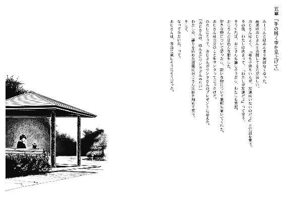
老人虐待を初体験してから、四日経った。
その日の夕方、僕はマユの部屋で爪を切っていた。
僕のではなく、マユの平爪を。
ベッドに重ねたティッシュの上にかざすマユの、絆創膏と包帯が五本指や手の平に遠慮なく群がった手をお預かりして過分な爪先を切り、ヤスリで磨きを入れる。放置しておくと不精者故に伸ばしっぱなしになり、抱きつかれた際に僕に突き刺さるし、それはいいとしても、その拍子にマユの爪が折れて痛がる可能性がある。
「なんかこーいうのいいね。お姫様みたい」
先程から、笑い声に上位者の余裕を醸し出させているマユが、そんな感想を述べた。
確かに、マユは浮世離れした美少女なのでそれも不似合いではない。
「でね、みーくんが王子様」
「王子よりか、姫の指先をお手入れする召使いさんの方が相応しいかな」
仮に王子だとするなら、枕詞としてバカが必須だろうし。
剣吞と無縁の会話を楽しみながら、パッチンパッチンと、小気味よく指の刃を切除する。
「召使い......みーくんが尽くしてくれるのも、いいなー」
何故かマユは涎を啜った。食事は三十分ほど前に胃腸に速達したはずですけど。
「僕は昔、働き蟻と他称されてたからね。仕えるのが性に合ってるよ」
「えー、みーくんは昔からずーっとみーくんだよ」
「あーまーそーね」
ざっくばらんに流して、足の爪へ移行した。
小足の踵部に指を添えて持ち上げ、手ほどは成長していない爪を切り落とす。幼子のように丸く、触れ心地のいい指である。以前、マニキュア塗りに従事する時も同じ感想を持った。
「ところで、今日のお昼は何処行ってたの？」
マユが申し訳程度の笑顔で、覆いきれていない疑惑をぶつけてくる。
「みーくんとこに行ったらいなかったんだけど」
「あれ、今日はお昼寝してなかったんだ」
「三時に起きたもんねー！ 子供扱いすんなー！」
保育園児の反抗で足が暴れ、踵が爪塚に落下したことでベッドへ散乱してしまった。爪切りを放り出し、回収作業に追われる。その最中、憮然としているマユをどう騙すか思考していた。
事実としては、ここ数日同様、西病棟の一室に住み着いているお婆さんと煎餅を囓ってた。で、『そうなんですか』『ほんにまぁ』『そがんことがねぇ』などと似非方言を駆使して口説いただけだ。これも浮気、または不倫と扱われるのかな。お相手が人妻ではあるしなぁ、あるけどさぁ、情緒が大事だろ、日本語は。お嫁さんと称するのも言葉の空気抵抗が激しいし。
さて、どうしたものか。友達ん家に遊びに、法事があって、キノコ狩り、学習塾。使い古された言い訳では、新人類のマユを現金払いしたくなるほどにこにこ笑顔にすることは不可能だ。
何せ、死体だろうと嫉妬対象の、違う意味で心の広い子だしな。
垢を煎じて飲む為、爪を集め終える。真偽はどっちでもいいけど、時間稼ぎは終了してしまった。売店に行ったという噓は危険だ、マユが確認した可能性も高い。
明るく楽しい男女交際には、頭を悩ます面倒事が満載なわけで。
「......じー」ジト目が僕を苛む。「......ふは、これを取りに行ってたのさ」
備えあれば命あり。四方に折り畳んだ紙切れに相応しい、人情の如く薄い僕の生命を託した。
まさか、こんなにも早い登板をお願いすることになるとは。
「なにこれ？」
「婚姻届」
学校でエロ本を受け渡しされ、鞄にしまい込む男子中学生ぐらい慌ただしく紙を開くマユ。真っ二つに破れるんじゃないかと危惧するほど勢いよく折りを解かれた用紙を眺め回し、マユは不機嫌を失った。で、僕に突撃してくるのはお約束。
「にゅふふきゅくくくく」
えびす顔ってお初にお目にかかった。後、頭の螺子が取れる瞬間も、目撃するのは久方の時を経ていた。
「じゃーわたし、今日からみーまーちゃんね」
「おーそいつぁーいいや」
よし、ごまかせた。奈月さんに見舞品として要求しておいた、過去の僕は偉人。でも離婚届は余分だった。これ見せたら、結婚してないのに泣いて拒否されるぞ。
早速名前を書き込もうとするマユを制し、繫いだ命の味を嚙みしめながら爪を切り終える。
次は耳掃除だった。
僕がマユにしてもらった回数は、噓を一度もついたことのない世界中の大人と同じ数字だ。
ごろごろと膝の上を回転し、趣旨を理解してないマユの首根っこを摑んで耳を髪から搔き出す。耳たぶが羽ばたき、ぞんざいな扱いに抗議の意を表してきたけど構わず、綿棒を耳の穴に差し込む。耳の廃棄物をほじくり出して、ようやくマユの電源が切れた。
「む、村の蓄えがぁ」「こんな物を年貢にしたくないんだけどね......」
ふざけるマユと、若干真面目な僕という、正反対の会話になった。
「これからは偶には自分でするように」
「えー、やだ。みーくんがしてくれるもん」
「子供じゃないんでしょ？」
「まーちゃん、いまだけ六歳」
その証として、出来うる限り自覚的に、あどけない表情を創作した。主張が都合に適応して変化するあたり、マユもお年頃の女の子だったりする。
三十歳と詐称するよりは的確か、と結論づけて、ほじほじを続行する。
マユは炬燵で暖を取る主婦のように、行儀良く身を任せている。
居心地のいい無言。
それが続く中で、何の気なしに記憶が呼び覚まされた。
......耳かき、か。
昔、勉強するという建前で長瀬の家へ連れられてお伺いした。長瀬の自室で、今では悶死する呪詛に成り果てた、甘い血の池地獄のような会話を交えながら耳を掃除してもらった。使用後の耳かきの先端に赤色が付着していたのが思い出深い。
その後は、ええと......僕は少年誌の主人公目指してるから、省略。
でも、その翌日の月曜日に関係を解消することになるとは、未来の僕ら以外誰が思ったろう。
「......はい、反対向いて」
マユが万歳しながらころころと半回転する。次は右耳だ。綿棒もひっくり返す。
「終わったらお風呂入ろーね」
入浴時間や消灯といった規律に無縁な入院生活を送っている少女は、屈託と恥じらいなく提案してくる。その後でも間に合うだろう、と判断して僕は「そうしようか」と賛同する。
それから、また寡黙な空間に立ち戻る。
まだ記憶は画面に上映されていて、単に一時停止されていただけだった。
少し躊躇い、続きを再生する。
長瀬の家の前で、また明日って約束して別れた翌日。
僕たちが他人に戻った原因。
長瀬が、僕の過去を知ったこと。
伝達経路は幾らでもあった。かつて、僕の友達だった人とか。
数日前から教室でも仲の良かった僕と長瀬を見かねて、誰かが素性を忠告したんだろう。
今まで、長瀬が無知であったことの方が、よっぽど非常識な人種だったわけだ。
その後の、放課後に長瀬と向かい合った時。
覚えている。
長瀬の、嚙み潰したくもない苦虫が口内に入り込んできたような態度も。
彼女が、『知りたくもなかった』と吐き捨てたことも。
多感な十代を気取っていた僕は、その一言に傷ついたフリをして、長瀬と別れた。
自分の立ち位置を思い出させてくれたことに感謝しながら。
どうしようもねえなあって。
でも、今は違うものを抱いている。
あれは間違いだった。
僕らはまだ、縁の切れた他人同士じゃなかった。
「いつも思うけど、変な癖だね」
右の耳を刺激すると、マユは軽く咳き込む。僕の父親も、確かそんな兆候があった。
「これはまーちゃんのあいでんててーなのです」
「そんな重要なら定期的に掃除しときなさい」
マユは黙殺した。頰を僕の太股にすり寄せ、安らいでいる。
......何だかんだで、僕もこの役目を担うのは悪くないな、と納得していたり。
「はい、終わったよ」
「ぐてー」
マユは伸びきり、微塵も移動の意志を見せない。
「いやぐてーじゃなくて......風呂は？」
別に期待してるわけじゃないけど。本当の本当に。
「みーくんのふとももにやられました」
「あのねぇ......それ、普通は男の立場だよ」
「もう立てないのです」
「......ま、いいけどね」
いいけどさ。
......人間、立ち上がり続ける奴が勝つ。
大多数の人が信奉する、人生の定理。
ええ、真理でしょう。
けど、七転び八起きの為には七度目まで転ぶ必要がありそれ以前の、六度の転倒で、取り返しのつかないものを失う人が大多数だということを、弁えれば。
しかし、それでも、底なしに落ちないだけマシだ。
転んで、這い蹲ることの出来る地面さえ、僕らは失ったのだろうから。
......さて。
今日も元気に、賞味期限が尽きた魚を調理しに行こうか。
消灯前に訪れた病室は、意気消沈という四字熟語が相応しい、陰気の溜まり場になっていた。灯りを落とす必要なく、快眠出来そうな暗色の心情が立ちこめている。
原因は勿論、度会さんだった。
僕と談話して以来の四日間は錯乱気味で、布団に張り付いて妄想の脅威から防護を図るか、譫言を日がな一日、俳句を詠う俳人の如く独り口ずさむだけとなっている。院内で煙たがられながらも職務に励む警察の皆さんに僕の持ち得る情報を密告されてはと、気を病む毎日なのだろう。
その度会さんの末期を迎えた様子に対し、高校生は敬遠策を実施し、中年は我も負けじと呟きを断続的にこなすようになった。僕は三日前から積極的に交流を試みているけど、今一つの反応しか得られない。
医者や看護師も、精神は専門外なので対処に戸惑っている。親族とも絶縁状態で、籍と同様、同時入院を果たしたオシドリ夫婦の片割れさえ「知りませんよ」と気温零度の態度でテレビ鑑賞に勤しんでいる。老人は、もう相互的な繫がりを失っているのかも知れない。
だから僕が孫代わりになろうと、甲斐甲斐しくお話相手になっているのである。
噓すぎるけど。
さて、三日坊主となることが望ましい日課を開始するか。
「度会さん、お加減どうですか？」
相手が嫌がるように、わざわざ膝を屈めて目線を合わせる。そうすると、度会さんは若僧である僕に徹底的な恐怖で皺を十本追加し、親友である布団の背に隠れてしまう。
せっかく度会さんが気力を振り絞り、顔面を外界に出して戦々恐々としていた努力を台なしにしてしまった。反省することしきりだけど、それ以外にも山のように反省材料があるので、実行される日は五年ほど待ちぼうけだ。
「今日も死体が見えてますか？」
文通の定型句みたいに、軽々しく尋ねた。ペンパルからのお便りは来ない。
だから僕も、普段通り一方的に怪文を垂れ流す。
「貴方が怯える死体は女の子ですね？」囁き「貴方はその女の子を知っている」「皮膚の感触まで知り得ている」祈り「どんな血の色をしているか」「死に顔がどのように崩れているか」詠唱「全て貴方は経験している」念じろ。
めぼしい反応が返ってこない為、効果の程は些か不明瞭。けど継続は力なりともいうし、それなりの影響はあるはず、と楽観的に受け止める。
退院まで、後二日。それまではこの行為を繰り返し、変化がこれ以上表れなかったら......野となれ山となれでいこう。度会さんの今の状態では、他者への障害物を務めることは難儀と困難の板挟みだろうし。
衰弱した老人の耳元で何事かを囁く少年に対し、世間は異様な視線で明視してくる。ただ、手足を稼働させる具体的な行動に出る正義感の高校生と中年は何処にもいない。
「女の子は何か喋りかけてきませんか？」
耳栓兼アイマスクの役割を果たしている布団を引っ剝がそうとする。それは血管が浮き出すぎて、皺が注目されない手に阻まれた。
「何故、女の子は度会さんの下へ足を運ぶんでしょうね」
初恋の少女ですか、と低俗に囃し立てる。度会さんの感想は空気なので、味気ない以前の空虚さだった。
「早く元気になって、一樹の顔を見に行ってあげてくださいよ」
あの子は、今の貴方の生き甲斐でしょうに。
姉の方は、今一つみたいですけど。
今日の見舞という大きなお世話は、ここを引き際にした。
「おやすみなさい、また明日」
恭しく慇懃無礼に就寝の御挨拶を告げ、中年にだけ会釈をして病室を後にした。
誰もいない廊下で、一度だけ立ち止まってからマユの部屋を目的地に設定する。
度会さんの精神衛生と僕の健康上、今はあの病室の安全性には疑ってかかるべきだ。
見えている落とし穴の隣で眠りこけるほど、自信家じゃない。
にしても、度会さん。
いつまでああしていられるかな。
窓を埋め尽くす漆黒のように、先行きの暗い状況だからな。
崖に足がかかったら、永遠に直立不動でいることは不可能だし。
本人より先に、足下が瓦解する確率も十分あるし。
この廊下くらい、土台が安定した老後を送るのが夢ですと語っていたのに、不憫な。かなり噓だけど。
そろそ背中の方から怒号とそれに準ずる何かが飛来してきた。
不意に悪寒に導かれて横へ跳ねられるわけがない。
ふりか、パイプ、椅子？
右肩を遠慮なく痛打されて、右の松葉杖を取り落として床にもんどり打ち、苦悶を唇から垂れ流しているのに、脳味噌は凶器の種類を断定することしか出来ていない。
咄嗟に左手に残った松葉杖を振り回し、次の一撃を相殺した。けど手は衝撃で痺れてマメも潰れ、松葉杖という抵抗を僕は床へ投げ出す形になる。それを拾う前に、僕は天井を見上げてしまった。
血走った目の度会さんがパイプ椅子を振り上げていた。むしろ元がつジジイフルスイングが僕の横っ面を遠慮なく削った。首だけが独立宣言しそうな一撃に、空間の認識が白紙になる。すっ飛んだ細切れの時間を認知する暇はなく、第二撃が僕を穿っていた。こめかみを中心に、斜めに側頭部を打ち据えられた。耳が七割千切れた感触、錯覚だよな？
自分が苦痛の悲鳴をあげかけている。耳が何かの音を拾っているのに、それを更に何かに妨害される。血流が洪水を起こし、度会さんの奇声、絶叫、電波を遮断する。それにより、音声を消去した映画を鑑賞しているような、今一つ実体のない衝撃と痛みが僕をひしゃげさせたり捻ったり削ったりする。右手を上げる余裕もない。
パイプ椅子での往復ビンタに、身体の芯というか、支えを破壊された。前のめりに男らしくない倒れ方をする。床で真っ平らに加工された鼻は、鮮烈な痛覚を催した。
頰の血が床と擦れ合い、気味の悪い感触。けど、しかめ面をする余力もない。
度会さんの快進撃は小休止しているのか、僕の一メートル六十センチ上を行く荒さで酸素をかき集めている。棺桶の宿泊券を携帯している身分で随分と人生を謳歌してる人だ。
このまま床に膝枕してもらっていれば、無料招待券は僕に譲渡される。けどほら、僕は悪運強いみたいだし、このまま船を漕いでいても誰か助け船を漕いできてくれるかも。
などと楽観的になって、今度こそ死んだらどうしよう。
......いや、死んだらどうするかって、どうしようもないよな。
死ぬってのは、そういうことだから。
たとえ死体に意志が宿っていても、それを外へ晒すことは許されない。
罵倒されても言い返せないし、殴られたら一方的だし、好きな子に告白も無理で、誰かの彼女を奪い取ることだって夢のまた夢だ。
でも、それだけだって割り切れるところもある。誰かを大切にして、たくさんのものを得て、別離を経験して、素晴らしい人生を歩んで。だから、どうなんだって。
たとえ死ぬまで好き勝手に生きたって、何が残せるわけでもない。じゃあ何の為に自由意志で日々を送るかって、それは死ぬまでの退屈しのぎじゃないのかって。
生きる価値っていうのは、尊く壮大な暇潰しでしかない。
生きる意味は時間潰しで理由は嫌なものを先送り。
それだけなんだけど。
......それが、貴重なのかもって時々実感しちゃうわけだ。
だって死んだら、まーちゃんとえろいことも出来やしないんだぜ。
......少し前までは、死んでもよかった。
でも、今は違う。もう少し前まで、生きておきたい。
生きるか死ぬか、試すのはもういい。飽きたんだよ。
生まれた意味なんかなくても理由はあるし、生きる理由や意味がなくても個人目標はある。
明るく楽しく暖かく滑稽に虚偽にマユの側にいる。
僕が死んだら、マユが次のみーくんを上手く見つけられるとは限らない。
そんな苦労はあまりかけたくない。
だから、ここで死んでいるわけにはいかない。
長瀬にも、伝え忘れたことがあるのだから。
這い蹲る僕に残された武器は、獣と同じものしかなかった。
左手の傷を考慮せず酷使してバネ代わりとし、僕は水平に跳ねる。
後は、その水虫臭い足の親指を、嚙みちぎるだけだ。
遠慮を砕く。躊躇いをはね除ける。
常識の枷を失った僕には、造作のないこと。
歯を突き立て「＄＃＆＄＆（＆）！」度会さんの悲鳴、身体を捻って人体の表層を削り「＃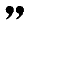（）＆（（～）～％＆＄％＄！」絶叫、食い込ませる。度会さんの喚き声が僕の上部で唱歌されていく。我慢は一切ない。
僕の後頭部を椅子で叩き潰してくる。それは痛覚を飛び越えて熱を滲ませる。スリッパで撃退されるゴキブリの気分。けど意識は遠のかず、歯が肉に食らいつく後押しとなるだけだった。度会さんの甲高い声が音程をより外れる為に加速する。
一発、二発三発四発次第に間隔が短くなってくる。好都合だった。振りかぶる間を短縮し、一撃の威力は減退の一途となっている。さっきまでの暴力を我慢出来たのに、それより劣る痛みに耐えられないわけがない。分かってないんだよ度会さん、僕の親父に教えを請え。
前歯が、固いものに到達した。骨だ。歯の裏側にはにちゃりとした肉の感触。引きつる筋の味。それと血。血、血、血。滑らかな血、粘つく血、爽やかな血。口内に貯水されていく体液に呼吸を妨害されるので、酸素と二酸化炭素の交換は一時中止させた。ここが踏ん張りどころと読んだ僕は、せーのと拍子を置き、前歯に精力を託した。
グチャグチャするぐちゃぐちゃするグチャグチャする肉を血を神経をグチャグチャする一生懸命する生きる為に人間を中止する、千切れろ千切れろ、ちーぎーれーろ！
パイプ椅子が床に身投げした快音。度会さんが攻撃意志を吸い取られて防衛本能に身を託し、捩って悶える。床で転げ回って足も振り回す。僕を引き剝がそうと必死だ。釣りみたいだなと、血の気が不足している頭は薄らぼけた解釈しか出来ない。数十秒間、魚ごっこをしてようやく、逃げればいいのかと正気に返った。手探りで松葉杖を一本握り、そこで口を離した。
僕が上体を逸らしても、度会さんは立ち上がれない。もっとも、カウント制の試合なら僕の敗北だったけど。
度会さんの腹部に松葉杖を突き、全体重をかけながら立ち上がる。
口の中は当然、血と足の指の味、それに歯の裏側は肉の切れ端がこびりついている。床を汚すのもなんだからと、飲み込んだ。これぐらいの不快なら、吐き気一つ生まれない。たかが、この程度で。
痙攣している度会さんを、赤いフィルターがかかった世界で見下ろす。耳はシャッターで閉鎖されていない為か、周囲の患者のざわつきが雪崩れ込んでくる。襲撃してきた度会さんの悲鳴を聞きつけた野次馬が、遠巻きに僕らを眺めているらしい。
「しかし、検査がいらないわけだ......」
爺さんハッスルしすぎ。蠟燭の最後の灯火という表現、肌に血を染みこませて理解した。
「つうか、孫といい、爺さんといい......」
真っ当に球を打ち返してるのは、一樹だけかよ。
駄目と念を押す金的蹴りと、鬱憤晴らしの松葉杖での臑攻撃は体調不全の為、お休みする。
それに、この人には恨み自体はないから。
よし、治療を依頼しに向かうか。この一件を叔父や叔母に病院繫がりで連絡されたら、君子危うきに近寄らずを主軸とする説教に見舞されることは間違いない。でも今は命が欲しい。
松葉杖を放り捨て、片足で走ることにした。
首の後ろ周りを駆ける血液を、鳥肌が熱烈歓迎する。跳躍と着地の度に赤色の斑点を床にマーキングする。グレーテルが同伴していないから、道に迷っても困らないんだけど。むしろ、遊興の一環でさえある。この廊下は僕らの病室付近なんだから、向かうべき病棟はあちらこちらで、天国は、そっちか。よし、行かない。でも、あれ？ 周囲の人達は何処行ったんだ？ なんて、僕は混乱してないぞ。頭部が血や熱にかき乱されて認識力が不足しているだけという安直な正解を導き出しているので、問答する必要なんかない。
さあ、楽しみまくるぞ。
今、何処を歩いてるんだろう？ 叔母は僕を許すだろうか？ 退院ってさせてくれるのか？ 今は夜か？ 僕は僕か？ 何処までが正しい僕なんだろう？
あー、気持ちいい。悩んでるフリしてるだけで、全然頭遣ってない。
前後不明瞭の酔っぱらいってのは、こういう倒錯した解放感を味わってるのかな？
飲酒はまだ未経験だから、要領を得ない。
そうして、和製キョンシーとなって飛んでいたら、何棟か判断出来ないけど廊下の真ん中で、大きな桃色に出会した。目を凝らすと、色の塊が変形した。
いつもの看護師さんだった。何故か、グワシをしている。「トランスさんだ」
「キミはあたしをそう呼んでたのかよ」
心を包み隠す余裕もなくなってきている。
「それはさておき、随分と男前になっちゃって。生きてる？」
手を鼻先で振られて、去り際に中指の爪で弾かれた。
「なんとか」
暢気な会話をしてる場合じゃないんだ。ええと......駄目だ、頭に回る手筈の血がこめかみと唇から流出して行き届いてない。ぜんっぜん、頭が働かない。
大体、流血沙汰の僕の面を鷹揚に『みる』して、この看護師は何を考えているのか。
多分、どうでもいいけど面倒事になるのはやーねーとか、そんな感じか。
......あー、けどもういいや。この人に頼ろう。死にそうだし。
「すいません、助けてくれます？」
「んー」
渋りやがった。空気の読み込み機能が故障しているとしか思えない。
「何から？」
何とも意味深に、哲学に溢れてそうな（本人の意図は別として）疑問だった。
僕もその雰囲気に飲まれ、口元が歪んでしまう。その際、伝う血を口内に取り込んだ。
......何から、ねぇ。
色々あるなぁ。
でも、自分で何とかしないといけないことばかりだから。
自業自得だから。
「今は、目の前を垂れる赤色からですね」
「ふむ、その血が示す危険から撤退しなければならかったと」
「また一世代古いネタをご存じで」
「さ、お乗りなさい」
看護師さんが屈み、背中を開放する。僕を運搬出来る、可能性はあるか。空手とかやってるんだったよな、この人。
素直に負ぶさる。僕の右足は摑めないから、かなり不格好な姿勢になる。けれど、看護師さんは悠々と背筋を伸ばし、不敵に微笑んでいた。
「意外とちっさいねー」
「小食ですから」
「いや心が」大きなお世話だ。
「お客さん、何処行きやすか？」
「......言うのもマヌケですけど、治療室に」
「そうっすか。最近不景気なんですかねぇ、駅の周辺にしか」「仕事しろ」
看護師さんは「目上の人間に......」と愚痴をこぼしながら急発進し「うわっ！」
急すぎた。
韋駄天すぎた。
看護師さんは、僕の定めた法定内速度を軽くブッちぎる快速だった。
廊下は走るなのポスター、そして僕という荷物の存在を消し飛ばす勢いで床を踏み潰し、階段は五、六段を軽々と飛び降り、外から内へ速度を減退させずに踊り場を曲がり抜く。
「くぉ、壁にぶつかる削れる！ ブレーキは何処だ！」
「アクセルを全開アクセルを全開インド人を右にぃぃぃぃ！」
救助どころか、生きた心地を更に磨り減らされた。
中央病棟まで走り抜け、息の乱れもない看護師さんは一旦、徐行運転になる。
「よく分かんないけど、危機は去った、いや危機から去ったかな？」
「過去形でいいんでしょうか」
方向性が違えど、依然として危険人物が側にいるのですが。
「キミだって危なそうな面構えしてるように、おねーさんは感じちゃうけど」
そりゃあまあ、血を流してるのに「危なくないです」と笑顔を振りまいていたらそいつが危険人物だしな。血液の流出は、どんな形であれ危機を孕んでいるだろう。
看護師さんが移動を再開する傍ら、僕に尋ね事をしてくる。
「キミ、何したのさ？ つーか、暴行事件？」
「お爺さんが、食事量の少なさに一人一揆を起こしたんですよ」
「お爺さんって、キミのお隣さんの度会さん？」
「ええ」
......爺さんと言っただけで、即座に度会さんの名をあげるか。
「度会さんかぁ。あの人、キミの彼女の傷害事件と関係とかあるの？」
「さあ......」
僕がはぐらかしているあたりで、別の看護師さんが廊下の正面から歩いてきた。
赤い患者である僕に、口を半開きにして驚いてくれる。
「この患者の治療と、頭部の検査の準備を伝達してくれる？」
僕を背負った看護師さんが速やかに要項を伝え、同僚の方が駆け出す。普段の性格からは見聞きし辛い生真面目な対応で、螺子の外れた修飾抜きなことに僕は手軽な賞賛をした。
「仕事、意外に真面目なんですね」
「うむ、必殺が付くぐらいの仕事人である」
なるほど、病院では出世の見込みがないわけだ。
「あ、血が......」
派手に上下に揺さぶられた所為で、僕の流血が看護師さんの衣服にも降りかかっていた。
「ん、首のやつはキミの血か。涎だと決めつけてたよ」
「すいません、汚して」
「ま、偶にはいんでねーかー」
いいのか。
看護師さんは唇と頰肉を微妙に歪曲させて、「いいんだよ」と心中を読んだように返事する。
「身体を無理して離そうとしないでいいよ。キミの体液は溶解作用でもあんの？」
「そうじゃないですけど......」
「それともあれか、人に触れるの嫌いな性格？」
「......そうじゃ、ない、ですけど」
触れられるのが、少し怖いだけ。
薄い蛍光灯の下で、看護師さんは垂れた血を指で拭い取った。
「気にしない」と、看護師さんはもう一度頰を曲げる。
「血なんて、洗い落とせばいい」
気合と洗濯機に頼ってさー、と砕けた締めくくりで真面目をピンぼけさせる。
「あれ、今のはカッチョイイ台詞じゃなかった？」
反応がなかったことに不満そうに、看護師さんが収束した唇で追及してくる。
僕は、首に回している手の強張りをほぐしながら、「ありがとう」と伝えた。
看護師さんは、「んむ」と適当に反応する。
それから、疲労で感覚の歪んでいる身体を、全て任せた。
それでも、赤い水の降り注いだ背中は不屈に僕を支えてくれた。
頭部にしこたま椅子の雨が降ったことは大事として、看護師さんの指示通りに、その日の深夜に精密検査を行うことになった。
その準備を待つ間、看護師さんはガーゼに消毒、塗り薬とハサミを持ち出してきた。
「ではこれよりお医者さんごっこを開始します」
「その発言、なんかずれてます」
何処がどうと言い表せないんだけど、何かが歪んでる。
ハサミの開閉を無意味に繰り返す看護師さんに不安を抱きながらも、治療は施されていく。
「あの、薬を塗りたくって染み渡らせる必要はないと思うんですけど、痛い凄く痛い」
「何を言う、汗疹だって塩を擦り込むでしょ」
「因果関係のある話を......って、ガーゼを貼ってから切らないでください！」
「男の子でしょ？ ちょっとぐらい我慢なさい」
「そういう男尊女卑を裏返しに利用した発言はどうかと思いますよ！」
「やーねー、吃驚マーク使いすぎだわさ。キミはそういうキャラ違うでしょ」
「あんたホントに看護師免許持ってます？」
「ブラックジャック先生だって無免許でいたかったわけじゃないのにー！」
「手を震わせないでください！」
やはり危険を過去形にするのは早すぎた。
ガーゼの切り取りが終わり、医務室はやっと静かになる。
治療費の代価に、心の安定を奪われて意気消沈してる僕。
それを後目に、ハサミの指輪に指を通し、ご機嫌に回転させる看護師さん。
「ほらアッシはさー、過程より結果を重視する性格だから」
横着という二文字で済ませばいいのに。吐き出しても効果はないので、心中で毒づいた。
というか、同室で佇んでいるお医者様は何故、僕らを冷静に鑑賞していますか。
その後、僕のピーマン頭部は綿密な検査をされて、思想と思惟と思考以外は中身に異常なしと診断された。ただ、頭皮は身近な天から人為的に降り注いだ隕石によって地割れが生じ、その落下地点は古傷のある場所にほど近かった。その傷は、新参者の経緯や纏う願いを認めて仲良くやっていけるだろうか。無関心な隣人同士なら及第点だけど、いがみ合いが勃発したら嫌だなと、とち狂ってみた。傷の所為にしておいた。
度会さんが傷害罪を名目にカツ丼を食べる会へ連れ出された、翌日の午後九時半すぎ。
マユの寝顔という芸術に感性その他を刺激されていた僕の下へ、来客があった。
仕事の手際以外は快速の看護師さんである。勤務明けなのか、私服だった。
「ちょっとお話でもしようか」
珍しく、真っ当な日本語でお誘いをかけてきたので、僕はそれを謹んでお受けした。
看護師さんに招かれたのは、暗色に染まった面会室だった。
明かりを点け、暖房を入れて僕をソファに設置し、外へ出ていった。
そして五分ぐらい経ち、何処からか湯気立つカップを二つ調達して帰還して、一つを僕に差し出す。頭を下げながら受け取ると、中身は白湯だった。手の平が焼き付きそうな熱湯だった。
「お、当たりを引いたご様子で」
看護師さんはもう一つの、緑色のカップを取り、中身を銀のスプーンでかき混ぜながら僕の向かい側のソファに、ふんぞり返るように腰かける。足など、テーブルの上が指定席である。
「中身一緒じゃないんですか？」
「アチキはコーンスープ」
なにチャカチャカ混ぜてやがるこの女郎。
「ん？ なんだなんだそのいやしんぼの目は。チミはモロコシが嫌いじゃなかったきゃい？」
粘着質な目線と、嫌みったらしい口端の歪みと、ハスキーな猫撫で声が絶妙に合わさって僕の気分を著しく阻害した。
ぐ、と喉仏のあたりで空気が詰まる。そんなことを覚えてたのか。
そう言われては、僕も黙って受け入れるしかない。
看護師さんは勝利の味と誇らんばかりに、余裕綽々で黄色い液体を啜る。
「昨日の話聞いたけどさ、キミはどれだけ虚弱なわけよ。相手老人よ？ おじーちゃんよ？ 昼ご飯食べたのに光子さんにねだっちゃうのよ？ 痛み分けなのは高校生としてどーよ」
机の上でスリッパを揺らす足の爪先を僕に向け、駄目だしをしてくる。
「地球のみんなが僕に元気を出し渋ってしまって」
「ガクセーが社会人から精気を貰おうとすんなよ」
ねちっこい言い方で社会の不良歯車に非難された。
それから「ま、とにかく」と看護師さんが前置きして、
「君もうちの道場で空手パンチと空手キックを会得なさい。月謝は二ヶ月まで滞納可」
「僕の流派は通信空手ですので」
「ちなみに可といっても優、良の次点だから褒められたものじゃないわさ」
「大学の単位じゃないんですから」
一体、何の話をしたいんだこの人。軟弱な若者を憂う会の推進運動か？
「一つ確認しますけど、本題とかあります？」
「あるともさ」
その適当な言い方が不安を煽ることを、自覚してるんだろうな。
「昨日聞きそびれたんだけど、度会さんって失踪事件か傷害事件、どっちかの犯人なの？」
看護師さんが身を乗り出して、興味津々に問いただしてくる。
「少なくとも僕は傷害を負いましたけどね」
「うんまーなるほど」何とも大雑把に流された。「で、失踪事件の方は？」
「僕にそれを尋ねること自体に、まず疑問とか覚えません？」
「だってさ、キミって度会さんを粘々しい態度で苛めてたって聞いたよ。しかも女の子がどうたらとか話してたらしいし。こりゃーなんか後ろ暗いところが度会さんにあるでしょと」
看護師さんが、多少得意気に情報を披露する。高校生か中年、どちらから聞き出したのやら。
「確かに老人虐待はしましたけど、それはまた別のお話ってやつですよ」
噓だけど。その言葉はお湯に口を浸し、泡となって看護師さんには届かなかった。
「マジでー」と若干、乾いた態度で看護師さんが唇を尖らす。
「残念そうですね。何か他に確信でもありました？」
「んー、ないけどさ。期待が萎んだ感じ」
身を引き、背もたれを活用する姿勢に戻る看護師さん。
このまま、会話が収束されるのを待つか。
けど、この人には理解させておかないと駄目だ。念を入れて、後腐れない為に。
マユの、為に。
「僕から一つ言えることはですね」
「うんうん」と、また身体の重心が前へ傾く看護師さん。その人に、宣言通り一言。
「マユは何の犯人でもありませんから」
僕が明かした一つの事実に、看護師さんは自然に瞬きする。
「別にキミの彼女は疑ってませんなー」と空とぼける看護師さん。
「噓はつくなら、面白味か真実味、どちらかを際立たせた方が良いですよ。それで、僕からも一つ尋ね返しますけど」
看護師さんが「うん？」と平常な姿勢で質疑に臨む。
「あなたがマユを付け狙う理由、美貌に目がくらんだ以外で僕を納得させてくれますか」
出題した問題は正直、僕には模範解答を導き出せそうになかった。
そのような難問について一考の間を取って、看護師さんが唇を動かす。
「濡れ衣べったりされてる？ キミの彼女の頭遣って新春餅つきの練習なんかしてないわよアタチ」
「そっちじゃないですよ。マユの食事に毒物を仕込んだ理由です」
「んん？」
看護師さんが疑問符を首の角度と瞼の開き具合で表す。
「キミは何を言い出しとるのかね？」
「それと関連しますけど、あなたは名和三秋の死体版を目撃したんじゃないですか？」
「んきゅー？」と喉仏を潰したくなる疑問系の声をあげる看護師さん。
「度会さんの体調が急変した原因は、マユの残した食事を摂取したから。最初は調理師かと思いましたけど、料理の載ったトレイを相手に指定できるのは配膳する人間だけですからね、あなただと理解できました」
だから、マユがこの人を毛嫌いしていたわけだ。本能が、聡明を上回ってる子だな。
「あなたが名和三秋を見つけた際、同様の場所でマユを目撃したから。だから早合点して犯人扱いで、そんな仕打ちを行ったんですか？」
「何のことやらさっぱりですな」
看護師さんが肩を竦める。僕も、肩身ではないが目を細める。
「僕は警察のおねえさんと大の仲良しなんですけどね」
むしろ太の仲ですたい。翻訳家を雇いたいほど意味分からんけど。
看護師さんは、僕が日頃お世話になっていそうな無表情面で、唾を飲み込む。
「取り調べ内容を警察の人から報告されるより、本人の口から語ってもらう方が僕としても面倒事が少なくていいんです」ミスジェロニモと公的に面会しなくて済むからな。「だから、今この場で話してくれれば、警察と電波の繫げ合いはしません」
噓だけど。仮に黙秘しても、僕は密告者の役目を負う気はない。
沈思黙考なのか、単に狸寝入りを試しているのか看護師さんが手の平で顔面を保護し、ギアをＰに入れて挙動を静める。
僕は時間の経過を忘れたように、温度を保つ湯の水面を揺らして、両方の変化を待った。
......その兆候が、退屈が全身を侵し尽くすより早かったのは僥倖だった。
看護師さんの長大な溜息が、両手の隙間からはみ出る。
そして手が表皮から取り除かれ、目線の位置が水平になった。
「あは、やっぱりバレてた」
前言の存在自体を消失させ、看護師さんは悪びれも悪あがきもなく、ごまかしも虚飾もなく国家権力のちらつきに屈したように、目元だけ無邪気に微笑んだ。
......やっぱり、この人が。
「あなたが真犯人だったんですね、どぎゃーん」
「マイルドに言わせてもらうけどデスれ」
違ったようだ。認めたら、それはそれで問題に発展するけど。
「死体、見ましたよね？」
「うん」と、そちらも肯定する。
「その時に、生きてる女の子も一人見かけたんですよね」
「そうそう。あたしが深夜まで、仕事に従事して徘徊してたわけ。そしたら一人の女の子がてけてけと旧病棟の二階を歩いてるのを目撃しちゃったわけよ」
「......なるほど。やっぱりその女の子が、マユだったわけだ」
「そうそう、キミのバカノジョ」
「失敬な。マユは僕といなければそれは聡明な才女ですよ」
「つまりキミがバカレシすぎるわけね」
「そっちなら許容範囲です」
「キミはよーわからん男の子だな。で、話を戻すけど、事件の香りに釣られて職務放棄して、キミのカノジョが帰ったのを見計って覗いてみれば名和三秋が冷蔵庫の肥やしになってるじゃないの。アチシぶったまげたわよ」
手を広げ、爆発を表現する。今なら隙だらけだ、と何故か攻め入る瞬間を想像してしまった。
「だから、名和三秋の命を大特価で買い取り、肉を冷蔵庫にしまい込んだ犯人をマユと勘違いしたわけですね、はた迷惑にも。そして、毒入り料理を振る舞った、と」
「うむうむ。うーむうむうむ」
一樹のような調子で、ごまかしの靄をかけるように忙しない看護師さん。
「うむうむさてさて、次の話題に移りましょう。名刺で割り箸を切る方法とか話しちゃう？」
何故か揉み手をしたり、肩の凝りを取る為に派手に身体を揺さぶったりしている。マユに対しての誤解を恥じ、話題にのぼらせたくないと防衛しているのかも知れない。
僕は「どうしようかなー」と焦らして、熱湯を啜り、更に相手の出方を待つ。
「身体温かくして寝なさい。さらば」看護師は逃げ出した。「待てや」
本気で帰宅しようとする看護師を言葉で押し留め（肩に手をかけようものなら関節を決められそうだったので）、お湯を啜って心を落ち着かせる。舌どころか食道まで火傷しそうだ。
「困っちゃうなぁ、おねーさんが患者に唾つけてるなんて噂立ったら旦那に怒られちゃう」
「既婚者だったんですか」
ちょっと驚き。家庭を持っても落ち着かない人だっているわけだ。
「うむ。デリシャスな四歳の息子もいた」
......あの、それ、褒め言葉だけど駄目です。凄く駄目です。
それに、過去形。
「ん？ 何で過去形かって？」
「空耳相手に質問コーナー設けないでください」
でも聞き耳は立つ。
「離婚したからね、半年ぐらい前に。息子はとーちゃんを選んだし、今は完全に独り身」
「......え、じゃあ旦那さんは別に怒らないのではないかと」
「妻としてじゃなくて人として。潔癖症な人で、そこがいいなって結婚前はメロメロだったの」
「結婚後は？」
「でー、なんだっけ？」
爽やかに強引すぎる飛ばし方だった。でも、この人相手に粘菌な態度で接すると拳で振り払われそうなので、尻尾を巻いて日和る。
「犯人はお前だ、のところでＣＭ挟んで、今開けで止まってます」
「あそう。んー、まぁ、って認めたじゃん」
「そうでしたね。じゃあ、なんでそんなことをしたんですか？」
社会見学系の質問台詞に、看護師さんは頰を搔きながらも唇を割った。
「あたしって正義感から生まれた正義花子だからさー、警察に引き渡す前に懲らしめてやろうとしたの。名和、っていうか三秋はさ、あたしと仲良かったのさ。だから、個人的に一矢報いる必要があったわけ。だって捕まったら、あたしの手で懲らしめられないっしょ」
「......そうだったんですか」
つまり、（生前限定で）美人中学生である名和さんも、変人だった可能性が高いわけだな。
「それと、月見料を支払う為でもある」付け加えた少々難解な理由で僕を困惑させながら、勝ち気な指先が引っ込み、お手上げの証として万歳する。「けどさー、全然食べないでやんの。コーンサラダに漬け物に味噌汁に紅鮭、全部回避したわけでしょ」
選択した料理と現代っ子の嗜好が嚙み合っていない気もする。
「お陰で警察に連絡するの延期に延期を重ねて、もーやめたって感じ」
なんで毒入りのやつが分かるのさ、と看護師さんが霊能力を猜疑するような態度で問いかけてくる。
それについて、僕は肩肘をほんの少しだけ強張らせて回答した。
「肌が覚えてるんでしょうね。僕も、マユも」
昔、たんと食べさせられたから。
入ってると学習しても、それしか口に出来なかったから。
看護師さんは僕の履歴を閲覧していない為か、異質な存在を初見したように瞬きを繰り返す。
けれど人情味か無関心か、看護師さんは踏み込まずに「そうなんだ」と流した。
「けど意外」
「なにがですか？」
「キミはもっと激しく、極端な話この場であたしを撲殺しても不思議じゃないほどカノジョを宝物にしてるように見えるけど、妙に落ち着いてるから」
嵐の前の静けさ？ と僕を揶揄しながら牽制する。
確かに、恩義がなければ報復に踏み切っていた。
「残念だけど、あなたを本気で敵視して、怒りをぶつけることは出来ないんですよ」
「美貌の弊害ってやつね」
「誰も備忘録の話なんかしてませんよ。......あなたの盛った薬。食べ残しを許可しない勿体ないお化けの見えざる活躍による結果論としても、僕が度会さんに服薬させてしまっていた事実を利用してあの人を追い詰めることが出来たし、何より殺されないで済んだ。心身共に弱ってなかったら、昨晩に僕は頭蓋骨ぶち割られて死んでいたでしょうから」
つまり、結果的には事件解決に関与していた功労者となる。
そして僕の悪運は、やはり効力を発揮していたのだ。物事を万事滞りなく進めることは、今回も不可能だったけれど。
看護師さんは自分の悪意溢れる功績を讃えられたことで増長し、顎に手をやる。
「新ジャンル開拓、毒薬美婦人探偵なんてどーよ」
「いいですね、略して毒婦」
「敬えー！」
机を飛び越え、僕の隣に着地して首根っこを「あうあうあう」と揺さぶってくる。
大体、美婦人ってなんだ。カタカナにすると薬品名みたいな造語使いやがって。
一頻り首の運動を強制され、包帯で雪景色を演出している頭が霞がかった。
理不尽な制裁を終えた看護師さんは、そのまま隣人として席替えをしてしまった。圧迫感が生まれるので、正直お帰り願いたい。
「でも、ま、敬うのはちょっと難しいよね。ごめんね」
遅咲きに殊勝な姿勢で頭を下げる看護師さん。
「毒を盛る相手を間違えたのはあたしの反省点。猛省」
二度ほど、猫背を形作って頭部を上下させる毒婦。
「というわけで、この件は手打ちということで......でさ、度会の爺さんが殺人犯だったわけですか」
自己反省に基づき、一方的に第一部・完と写植してから、僕の肩に馴れ馴れしく肘をかける。
「そんなこと知りたいんですか？」
「そりゃあねぇ、影の総婦長として、アタシの庭で起きた事件は把握しておく必要があるのよ」
単なるミステリ好きの野次馬としか思えないけど。
「それに、三秋の人生が終わった過程を知っておきたいし。あいつの墓が出来て訪問した時、話の種になるっしょ」
......まあ、いいか。
「度会さんが犯人......それが望ましいですね」
看護師さんが、僕の持って回った言い方に首その他を傾ける。すぐに切り返して首を立てる。
「なんで目星を付けたの？」
「勘、じゃ駄目ですか」
「探偵役がそれじゃあ、ちょっと頼りないかな」
いつの間に、僕にそんな役割が与えられていたのか。探偵ごっこは未だもって継続中なのか。
「死体の指紋を調べれば、度会さんを容疑者にあげることはお手軽だったんですけどね」
ちょっと愚痴ってから、「決定的な証拠はないわけですが」と前置きし、
「最初に疑ったのは足、ですね」
「水虫け？」
「あなたは自分の頭の虫をどうにかしてください。何日前だったかな、マユから聞いて僕たちは旧病棟へ死体を見学に行ったんですよ。その時、他にもう一人、誰かが死体のお宅訪問をしたんです」
「それが度会さんだってーの？」
「そゆことです。見学が終わってから、そのままコンビニへ行ったんですよ。そこで見かけた人達は皆、サンダルだったりスリッパのまま外出する不届き者ばかりだったんですけど、度会さんだけは普段の便所サンダルと違って小綺麗な靴を履いていたんです。だから妙だと感じた」
旧病棟は足下が危険だから、その為じゃないかと疑った。僕らと同じく。
「後は、度会さんの持病を知ってたというのもありますね」
「夜尿症？」
「そんなところだけ現実的な発想はやめてください。ストーカーですよ」
「マジでか。どーりで最近、アタチの背後に視線が突き刺さると思ってただわさ」
「借金取りに追われる生活なんて不憫ですね。あの人は度々、孫、ああ長瀬一樹のことですけど、様子を窺いに行ってたんですよ。特に夜は、寝顔とか毎晩眺めに行ってたみたいですね」
コンビニに行くだの、嫁に会うだの稚拙なカムフラージュして西棟行って。
「キモッ」
看護師さんの正直に辛辣な意見。
「祖父さんだろーと親族だろーと、ストーカー法に掃き捨てられちまえ」
随分と過剰に憎々しい声音で、孫を一目見ていただけの祖父を拒絶する。
「ストーカー被害に遭われたことでも？」
「ない。でもあたし、しつこい奴嫌いなの」
「ああ、だから潔癖症の旦那さんですか」
「ハッ、潔癖に粘ついてたんだよあの男はさ。どうでもいいっての」
僕の脇腹を小突いてきた。多少の痛みはあったけど、人の傷に触れておいてそれだけなら安価だ。
「というわけで、度会さんを嫌疑しまくったわけです」
「中略すな」
「夜に一樹の病室へ行ってる、ということは名和三秋と接触する可能性や時間が十分にあるってことですから」
それに対し、看護師さんは髪を指で摘みながら、曖昧に唸る。
「まーそれはいいとしても......不自然なことがあるんだけど」
「なんですか？」
「なんで度会さんは、死体のとこなんかに遊びに行ってたの？」
あー、それですか。
僕にとっても悩みの種だったんだよな。
「本人から答えを提示してもらった方が確実なんですけど......多分、謝りに行ってたんじゃないかって、今は考えてます」
「謝罪？ 誰によ」
「名和三秋に、許しを請うてたんじゃないかって。死体を埋葬してすぐ、原因不明の体調不良。安定を欠いていた心が呪いと受け取ってしまっても臆病者と恥じれませんよ」
そして、度会さんは腐乱始めの死体を拝みに行き、結果として僕に疑われるようになった。
その日に長瀬からノートを借り受けなければ、僕たちはコンビニには行かなかったはずで。
孫の行動が間接的に、度会さんの精神を抉る要因となった。こういうのを皮肉といいます。
「後は嫌がらせして追い詰めて後押しして。昨日、度会さん自身がようやく決意と共に行動に出てくれて、それが証拠になったわけです」
あそこまで意気軒昂に吹き返すとは、予想していなかった、というか結果については深く考えてなかっただけだ。
看護師さんは「へぇー」ともっともらしく感嘆の息を吐きながら、その途中で疑問点を発見したようだ。遊泳していた目が僕を向く。
「ん？ つーことはキミ、度会さんを犯人と分かってない時期から、あの人があたしの手料理を味わうことを止めなかったってこと？」
「穿って見ればそうとも言えますね」
「普通に見ないとそうならないっつの。涼しい顔して酷い子だなー」
「止めようがないじゃないですか、食べ物が勿体ない、残すなっていう正しい主張を覆す論法もなかったし。毒入ってますよと騒ぐわけにもいかないでしょう」
警察沙汰になってマユが取り調べられるのも防ぎたかったわけで。
それにここは坂下先生の一族が経営する病院なのだから、悪評を立てるわけにもいかない。義理と人情に厚い地元っ子の僕としては、受けた恩を仇で返す真似はあまり出来ない。
毒味役は、本当は高校生に一任したい役柄だったけど、運命の悪戯でベッドが対角線上にあったし、何よりマユのお願いを彼の協力で叶えたくはなかった、と個人的なこだわりもある。
「ああそれと、さっきも話しましたけど、僕は警察に知り合いがいるんですよ」
「うん？」
「次にマユへの危害を与える意志を見せた場合には、遠慮なく通報しますから」
簡単な警告は、看護師さんに「へーへー」と単純に受理される。
「で、度会さんの動機は？ 婦女暴行？」
「それも捨て難いですね」
否定の出来る材料が、僕の手元にはない。
看護師さんは、「キミはどう考えてるわけ？」と質問しながら、僕の放置していた白湯を取り、喉に流し込む。間接キスだって祭り上げるのは、長瀬には有効だった。殴られたけど。
「それを説明するには、別の要件が絡んでくるんです」
「じらし上手め、続けて」
「名和三秋の松葉杖が病室に残されていたこと」
「あーそれ、警察の人も疑問視してるよね。失踪だろうと誘拐だろうと殺人だろうと、何で置いてあるのかって」
「事情に精通してる人間からすると、結構単純なことだと思うんです。確証ないですけど、一樹が持ち帰ったんですよ」
看護師さんの驚きを、瞼が一手に引き受ける。十六連射は無理でも、秒間五回に迫る速度の瞬き。ここで、お弟子さんの名前が出ることは、事故に近いんだろう。
「一樹も関係してるわけ？」
「真犯人です」
弱々しい根拠しかなくても断言するのは得意だった。
頭も尾も隠していない狼狽に惑わされながら、看護師さんは反論する。
「度会さんと一樹、孫と祖父以上に関係してるわけ？」
「死体を制作したのは一樹で、出荷したのが度会さんです」
もっとも、一樹は度会さんの存在に未だ気付いていないはず。
困惑し、沈黙の状態異常を発生させた看護師さんに、僕は語りかける。
「名和三秋の死因を三つあげてみよう。ちゃんと全体を見るのが大事だよ」
「あんまり詳しく見てないけど、こめかみの傷かな」
沈黙を自然解除した看護師さんに、僕の質問は気持ちよく無視された。
「僕もそう思います。あれは、階段からの転落死によるものじゃないかなって」
「......階段？ ほー、字面にすれば病院の階段ね。映画化できそう」
初登場の場所と凶器に、看護師さんが瞳を収縮させる。
「一樹のことは、あなたの方が既知ですよね」
「足の魚の目から頭皮の艶具合まで知り尽くしてるわさ」それ、世間ではストーカーといいます。
「たとえば、夜は一人でトイレに行けないこと。それと、一樹の癖、ご存じですか」
「癖......あー、あれね。すぐ人にじゃれて飛びつくやつ。それにトイレ......んー、つまり、名和三秋と一樹がトイレ一緒に行って、その途中にある階段前あたりで一樹が普段通りに体当たりして、その弾みに名和三秋が転げ落ちたー、ってこと？」
「そんな感じじゃないかと、登場人物の許可なく想像してます」
「ふーん」と、看護師さんはあまり納得していない模様だった。
僕はもう少し、説明で補足する。
「見学の時に調べたんですけど、名和三秋の背面に横長の痣がいくつもあったんですよ。最初は、犯人が猟奇趣味で人間ピアノでも作製する気だったのかと勘繰ったんですけど、現場では苛めないって、寂しがりやで忘れん坊の殺人鬼が切に訴えてたのを思い出しまして。実際リスクが伴うし、褒められない趣味は人目を避けた場所で、猫背に楽しむものです」
でも、と接続する。
「旧病棟の床はささくれ立っていたし、硝子の破片も散らばっていた。もし殴打されたら身体の正面に小さい擦り傷の一つか二つは出来てると思ったんですよ。実際は何もなかったけれど」
「だから、階段から背中を向けて落ちたと？」
「まあ、憶測ですけど」
「ふぅん」と、先程と比べ、僅かに差異のある溜息を吐く看護師さん。
「名和三秋が松葉杖を使用せず外出したっていうなら話は別なんですけど。なんでも彼女は、まだ反抗期を迎えていない中学生だったそうなので、医者の言いつけは守ったでしょう」
それに、ここ数日、同室のお婆さんに聞き込み調査をして、彼女が松葉杖フリークであることは証言してもらった。手にも、使い込んだ証であるマメがあったし。
「名和三秋を運搬する度会さんをマユが目撃した時点で、松葉杖は所持していなかった。現場にあったのなら、絶対に処理するはずのものなのに。でも、松葉杖は翌日、病室にあった。看護師さん達がいつ巡回に来るか、切迫してる状況で度会さんが死体を置き去りにして杖だけ返却に行った、とは考え辛いなあと思って。だったら、他の誰かが現場にいて、そいつが回収したんじゃないかって」
「それが、一樹？」
「恐らく。度会さんは日課の夜這い擬きに行く途中で、偶然にも名和三秋と、長瀬一樹の目撃者となったんじゃないでしょうか。それで、名和三秋から逃亡した一樹の身代わりとなるべく、死体を隠したと」
そして、旧病棟へ向かう姿をマユに目撃され、そのマユも、看護師さんに尾行され。
つまり、看護師さん→マユ→度会さんの流れで目撃者が存在していたわけだ。齟齬が生じて事件をややこしくするわけである。
「一樹はなんで、松葉杖だけ持ち帰ったのかな？」
「片足飛びでトイレへ出かけたから、体勢を崩して階段を転げた。そう解釈してくれないかと、藁にも縋る思いで努力したんですよ、多分」
そしてそれは思わぬ協力者の手で違った実り方をして、事件に多かれ少なかれ、影響を及ぼした。
「そりゃあ一樹も怯えるでしょ、一晩経ったら死体が消え失せたんだから」
「あー分かる分かる。あたしの財布もこないだ、一晩経ったら中身が消え失せて、度数の切れたテレカだけ入ってたのよ」
怪奇よね、うんうんと酔っぱらいの戯言を現象にまで押し上げる看護師さん。
幸せ度数は、切れていない人だ。
「で、推理お終い？」
僕はそこで、小さく肩を竦めた。
「憶測でも、判断し辛いことが残ってるんですよ」
「なに？」
「さっきも話に出ましたけど、名和三秋のこめかみに、大きな殴打の跡がありますよね」
看護師さんが目と記憶を数秒泳がせ、「ああ」と合点する。
「あれ、何なんだろうって。あの場所だけ背面の痣の群れから独立してるんです。階段から落下した際にそこをぶつけて、死亡したのか。それともまだ息はあったけど、孫が非難されるのを危惧した度会さんがトドメをさしたのか、死んでいたけど念押しの一発だったのか。前者ならそのまま一樹なんだけど、後者だと度会さんが犯人になっちゃうんですよね」
或いは、一樹が度会さんを祖父と認識していて、殺人を犯した親族を庇った可能性も、一考の価値はある。ただ、どの過程でも名和三秋が死体になったことは変わりない。
「どっちにしても度会さんの反応から、大筋は間違ってなかったようなので安堵しましたよ」
科学捜査とか、明確な証拠があげられない立場なので、一種の賭けだった。
でも僕は、分は悪くないと踏んでいた。
「まぁ、あれだけ錯乱すれば度会さんの目的は、果たせるんじゃないでしょうか。自分が名和三秋を殺したと言っても、疑われることは少ないでしょうね」
臆病者の僕とは違って、大切な人間の罪を被ることに成功するわけだ。
僕も、その手伝いが出来て、感慨はある。
多分、僕はその為に、「おーい」
目の前で看護師さんの手が揺れた。何か喋りかけていたらしい。
心臓の鼓動を多少加速させながら、「どうぞ」と、促す。
「キミの話し方はさー、どうでもいいって心情が透けてるんだけど。倫理の壁が低めに設定されてたりするの？ 一級犯罪者のあたしにも分け隔てなく接する聖人気取りけ？」
皮肉に自虐を付け合わせて、僕の内面に探りを入れてくる。
「確かに殺人は罪。裁かれるもの。それは絶対です。でも、罪を認識する人間がいないなら問題なし。それが僕の、犯罪の捉え方ですから」
犯罪者は、感情の裁量ではなく、人間の善悪として許されざる者。
そんなことを言ってしまったら、マユは。
「僕は殺人を犯した人間を認めているんです。だから、他の殺人犯にも目を瞑りますし、私的な裁きにも目くじらは立てない。僕と、特にマユに対してこれ以上危害を加える意志がないなら、素性なんてどうでもいい事柄なんですよ。あなたが正義の毒殺者であれね」
今回に限っては、少し噓が混じっているけど。
途中の時点で、マユへの脅威とは無縁だと理解していたのに、僕は突っ込んだ首を引き戻さなかった。それは何故か、と自問自答する。
僕の動機。
何で、最後まで首を突っ込んだ？
それは度会さんの行動理念を知ったから。
僕と同じことをやっていたから、
少し応援したくなった。
本当に、それだけ？
本当に、それだけ。
酷く優しい、優しくなくて酷い理由。
思考に耽っていた看護師さんが、僕に対する感想を紡ぐ。
感慨のない、カマボコ板のように平坦な言葉だった。
「キミってなんか白いよね」
「......白？」
「透明っていうのかな。特色がない」
「そんなに影の薄い少年みたいですかね、腹は黒いってよく言われますけど」
「うん。明け透けに黒い」
上手いことを言われた気分になってしまった。
「だからかな、.............................................」
厳粛な雰囲気で、看護師さんは時の歩みを静止した。
「......あの、だからなんでしょうか」
「続く格好いい文章を模索してたんだけど、何故か給料の上昇に繫がってしまう......」
どんな生活観だよ。
折角、この人と生涯に一度の、哲学と真正の場を設けかけたのに。ハリボテが内側から砕かれてしまった。
「ていうかあなた、先生とキャラ被ってるんですよね」
「んだとゴラァ！ 先生はアチキじゃ！」
「呼び方まで被ってるわけで、いいとこなしですね」
「もきゃーっ！」
テーブルの縁に手をかけ、下手投げの真似。
そこでふと、正気を取り戻す。
「キミの先生ってなに？ エロＤＶＤの秘蔵コレクションを気前よく貸してくれる友達？」
「いえ、坂下恋日さん」
「ほー坂下......のお嬢さん？ ウチの院長のご息女？」
「ええ、現在は立派な臑齧りに原始退行です」
「......ちょっと待て、キャラ変えるから」
「はぁ......」長いものに巻かれることにしたらしい。
この時点で十分痛々しさは確立されていた。
「ぃよし」と意気込み、胡散臭い微笑みが生まれる。
「キミ、包帯が寄ってるじゃん。直してあげる」
半ば強引に頭を抱き寄せられ、頰を舐められた。
「.............................................」
流石に二度目なので、無言劇の役者として頰が強張るだけだった。
「どんな意味があるか、説明できるものならして下さい」
「頰舐めキャラで頑張ってみようと」
「妖怪アパートの住人になった方が早いですよ」
そう言ったら、もう一度舌を這わされた。
三度目は、舌の熱さに感心した。
こうして、僕の答え合わせは、点数が明示されないまま自然終了する。
だけど僕と彼女にとっての事件は解決した。
それが、僕にとっての模範解答だった。
帰路に就いた看護師さんと袂を分かち、マユの下へ戻る。
物静かだけど、健やかさの控えめな寝息を立てるマユ。
その傍らへ帰ると、どうしてか言い切れない。
ベッドの脇に立ち、カーテンを少し開く。
鼠色に寄った黒空が窓を彩色していた。
冷気が窓枠から染み出て、顎の下や額をなぞる。吐息が漆黒を漂白し、そこに指を宛うと指紋が綺麗に型取りされた。
カーテンを、視界から取り除く。
そうすると、左斜めに月が姿を露出した。
月光は涙腺に波の刺激を与えてくる。感傷的じゃない、生理的な涙が流れそうになる。
頭の上に月がない夜を迎える暮らしを強要された時もあった。
だけど見上げれば、空だけは何処にでもあった。
木造の空、コンクリート製の空、石造りの空。
そこに揺るぎはなく、超然と、僕らを覆っていた。
そして地に足の着かないまま眺める空は、容易く触れてしまえそうだった。
手の平を窓に貼ると、月はいなくなった。
空も、紅葉型に暗闇を切り取られる。
その時確かに、僕の手は空に届いていた。
正しく明日に向かうものを、僕の手が覆い隠した。
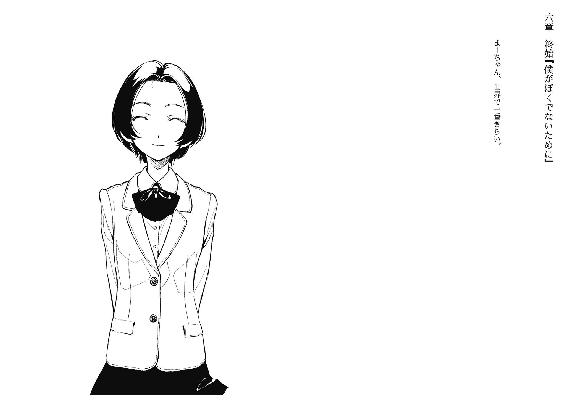
僕よりか、マユが待ち望んでいた退院の日が、事件終了から五日後だった。
着替えの詰まった紙袋の一番奥に、先生から借り受けた漫画の半身を詰めて隠す。返済額をこれ以上増やさない為の処置だ。
種類は少ないながら重量のある私物を纏め、すっかり手の延長になってしまった松葉杖を摑む。足の包帯が取れる日は後、二、三週間といったところだけど僕はマユの都合に合わせて退院することにした。当初の予定より延びたので、これでもまーちゃんはご立腹なわけだが。
馴染み深さを夏の雨ぐらい微量に募らせた病室。見渡しても人数は二で、隣のベッドは情感のない清潔さを保っている。度会さんの私物は細君が片して、寝床は次の患者待ちに万全だ。ただ、ぺんぺん草ではないけど花瓶に枯れた白い花が取り残されていた。切なくはない。
当の度会さんは警察で身代わり逮捕され、一樹は柔和な笑顔で生活を続けている。度会さんの願望は絶頂の形で終焉したわけだ。これにて一件落着、と時代劇なら締めくくるぐらいに。
松葉杖で一歩踏み出す。高校生は謙遜のない心ばかりの皮肉めいた笑顔で「じゃっ」とだけお見送りの御言葉を進呈して下さるので、僕としても「二度と会わないといいですね」と相手を傷つけないように丁重なお返事をするしかない。結局、最後までこの高校生が僕より年下、上、平行線なのか分からなかった。どうでもいい未満の事柄なので、それが最良とした。
中年さんは、今日も己の基本と欲望に忠実に、色はさておき顔は良い患者や性格は二の次に容姿の優れた看護師の撮影に外出中だ。出かける前に、僕に餞別の品を譲渡するかと思いきや、蚊も啞然とする紙切れのような音声で『君は......彼女いるから......退院、だね』と文章を前・中・後編の三本立てにし、その上で中編を省略されてしまった。僕としても『頑張って下さい』と万感の思いで励ますしか道はなかった。
そんなわけで、絶対に惜しみたくない別れを経験した僕の精神は積み木ぐらい安定を欠いて成長を遂げた。震度二の地震や、扇風機の中風が致命傷の虚弱体質な心根だけど、倒壊しても各パーツが破損し辛いことに、僕の美徳擬きがある。
廊下に出て、後はお馴染みのいどう、かいだんと洒落込みたいけど、そっちは掃除中ですとフラグ設定に遮られるので、渋々別の場所を目指した。理由以外は噓じゃない。
病めてない患者を辞める前に、面会室を利用させてもらう。
今度は、僕が相手を誘った形で。
「ささっと終わらせて、マユを迎えに行かないとね」
彼女の事件は終わったのだから。
後は、僕が終わらせなければいけない事件に、触れる必要がある。
前日に病院の公衆電話を利用し、暗記していた電話番号で長瀬透を呼び出していた。今日は学生と社会人の憂鬱な月曜日なので、長瀬は服装規定に違反していない制服で現れた。
「まさか平日に呼び出されるとは考えてなかった」
「あ、そうなんだ。毎日が建国記念日の身分だからうっかりしてたよ」
「つーか、なにッスかその顔と頭」
「野生に返ろうとしたらマントヒヒに追い返された」
「あのねぇ......。相変わらず、馬鹿なことを言って、やって、変なやつ」
お前の祖父さんに娘はやらんと突っぱねられたんだよ。いらねえよボケジジィ孫くれよって喧嘩になったんだよ。噓だけど。
長瀬は心底まで嫌じゃないけど体面的に仏頂面という、複雑な面持ちで僕の隣に、スカートを押さえながら腰かけた。......いや、何で隣人になってるのさ。向かい側のソファにお客様はお招きしてないですよ。
僕の目線の訴えを露知らず、「どっこいしょ」と鞄を足下に置き、深々とだらけきる長瀬。
「これで私も皆勤賞を逃したッスね」
「そりゃ悪いことをしたね」
「ううん、良いことッスよ」
長瀬の顔つきから仏が去り、育ちの良さが浮き出た笑みを被る。
「喧嘩別れかと思ってたのに、電話番号まで憶えていて、かけてくるんだから」
「用事があったからね」
なかったら、もうかけない。
「で、その用事ってなに？」
「この前、伝え忘れたことがあって」
肝心なことだったのに、うっかりしていた。
長瀬は、「ん？ ん？」と、楽観な内容に期待しているのが透けて分かりやすい。
けど、僕はそれに応えない。
深呼吸し、彼女に、警告を加えた。
「マユにこれ以上危害を加えることは、許さない。それだけ言い忘れてた」
真に不覚であった、面目ない。
長瀬が惚ける。伸びきった足や背もたれの上部にかけた肘が滑稽に映る。
数秒の無言を経て、長瀬は瞬きその他諸々を再活動させる。
「えーと、何のことッスか？」
「長瀬透。マユの頭を花瓶で殴ったのは、君だろ？」
教師のような注意口調に、長瀬が苦い表情で嘆息する。
建設ではなく、解体作業だから気が滅入るのだろう。
「そう言われても、解無しとしか答えようがないの。まーちゃんの怪我？ なにそれって感じ」
「マユはね、正面からぶん殴られて気絶もせず、犯人を知らないって言うんだ。それが何を意味すると思う？」
「透が推理小説の読みすぎってこと？」
「マユが普通じゃないってことだよ。特に、まーちゃんと呼ぶ相手にはね」
僕とか、長瀬とか。
長瀬の左眉が微細な反応を示す。隠し事の不得手な、彼女の美しい癖だ。
長瀬が姿勢を正し、膝上のスカートを軽く払う。続けてどうぞ、と幻聴を耳にしたので長瀬の返信を待たずして、僕は創作童話を披露した。
「昔々、御園マユが監禁から解放されてから、また小学校に行き始めると旧友の級友が何人も声をかけました。そこで、一つ不思議な出来事が生じてしまったのです。彼ら彼女らが『まーちゃん』と呼ぶ度に、御園マユは奇形な言葉で確認をするではありませんか。そう、彼女は『まーちゃん』と呼んでくれる人、『みーくん』だけを求めるようになってしまっていたのです。当の『みーくん』は、『まーちゃん』のことなど何一つ憶えていないのに。上辺だけ心配をしていた友達はその奇行に辟易し、日焼けした肌が剝けるぐらい容易く上っ面を取り捨て、マユの友達であることをやめてしまいました」
序章を朗読し終える。次の一章を語る時間は用意されていないので、そこで区切る。
長瀬が、物々しい態度で意志を暴発させたそうにしていたので、発言を待つ。
「今更、そんなことへの批判？ そう呼ばないと、迷惑だから喋りかけないでくださいって対応するようになっちゃった子と仲良くし続けろって言うの？」
「友達に非があると言ってるわけじゃない。マユが全ての友達を記憶から締め出して、過去形でさえ存在させなかったことも、原因の一つではある。けど、そんなことは今の問題じゃない」
「つまり、まーちゃんって呼べば記憶が滅茶苦茶になるから、その呼び方を使ってる私がやったって言ってるわけ？」
「うんそう」と、察しのいい長瀬の怒り心頭を受け流しながら肯定する。
「意図したわけじゃなくて、見舞に訪れて、何かしらのやり取りがあってその最中、花瓶で突発的に発火した怒りを代弁したんじゃないかって、僕は証拠もなく考えてる」
そして事実なら、僕の入院は、長瀬一家に翻弄されっぱなしになったことになる。
長々と空気を追い出し、ざっと髪を搔き上げ、頭皮にも爪で赤い線を描く。
そして億劫そうな、長瀬の物言い。
「否定はしないッスよ」
「おお、潔い犯人じゃ」
「ここで否定したって、『みーくん』は私がやったと思い込むんでしょ？」
ふむ、嫌味の使いどころはこの一年で学習したみたいだ。独学なら賞賛すべきか。
「それで早計に決めつけて、私を許さないわけ？」
「あたりきあんどしゃりき。マユはこれ以上、傷ついちゃいけないんだ」
「そんなにまーちゃんが大切？」
侮蔑な意志を節々に潜ませた、長瀬の問いかけ。
「傍目で見て分からんとは、僕たちの表現もまだ甘いわけだな」
「透本人のことを必要としてるわけじゃないのに？」
長瀬の凶器攻撃。一昔前の僕なら怯み、自暴自棄に酔いどれする高校生に成り下がっていた。
だが君の祖父さんの強襲で身体を、君の妹さんの殺人で絆を鍛えられた僕にとって、痛覚を遮断することなど造作もなかった。
「透のやってることって、まーちゃんのお人形でしょ？ 馬鹿みたい」
お、物語的な言い回し。長瀬も読書好きだったよな。
「それで、長瀬の欲するは『透』という名の人形といったところかな」
「一緒にしないでよあんなのと」あんなのだとゴルァ。巻き舌全開で文句を投書する暇もなく、長瀬が続きを垂れる。
「まーちゃんは透を見てないじゃん、透じゃなくたっていいじゃん！ 私は透って呼ぶ方が良いかと思ってそうしてるだけだよ、じゃあ名前言おうか？ ××、××、××って呼ばれたくないんでしょ？ こんなの単なる遊びで、まーちゃんなんかとは全然違う。私は透本人が好きで」「ダウト」
語りが騙りになった段階を、僕は見逃さなかった。どっちでもよかったんだけど。
熱弁を後数秒持続させれば涙という演出を施しそうになっている長瀬の眼前に、手の平を晒し、彼女の時間を静止させた。
僕は陰気に快活、不気味に明朗、にこにこにんまりにやーっと微笑んで、長瀬を否定した。
「さて、それはどうだろう」
一拍遅れて、大演説の反動で長瀬の肩の上下が開始する。僕が止められる時間は、文章の単位でほんの一行か二行のようだ。
「一年前を否定はしないよ。長瀬も僕のことを好きでいてくれたと自惚れてるし、僕も長瀬のことが好きだった。そこは良い、お役所で判子が貰える。けど、今は恋慕に偽りありだ」
自身の気持ちを噓だと否定された。
乙女長瀬さんは、そう憤慨なされた様子だ。
「なんで、そんなこと言うの？」
静寂な怒気。それでもまだ、涙は流さない。
なんでか。追及されて、長瀬は耐えきって納得して、色恋沙汰のお話を再開できるのか？
試してみるか、一応。
七並べで配布された手札が全て、ジョーカーであった時のような。
絶対にカードを消費できるのに、絶対に勝者にはなれない、孤立と虚構の戯れ。
それと大差ない、勝てない切り札を僕は場に開いた。
「まーちゃんとみーくんがどうして僕の父親に『選ばれた』か、その経緯を知ってると言ったら？」
長瀬の様相が、一変どころか一片さえ残さず粉々になった。
蒼白の肌と哀しい狼狽えが相乗効果で映える。
「僕の父親と、長瀬は面識があるはずだ」
長瀬は首を左右に、必死に振る。僕は滞りなく続けた。
「話を聞いた状況が、思考を停止していることが前提での劣悪な作業中だったんでうっかり忘れてたよ。そう、長瀬透。この前、病室でマユの友達だったって言った時にようやく思い出した」
僕は高校で出会う前から、その名前を知っていたんだ。
「厄介だったよな、僕の親父は。外面だけは正常を保っていたんだ。眼球も挙動も、家族以外には真っ当なものを装って覆い隠していた。街の有力者だったから、顔も広く知られてたし」
肩書きを名乗れば、不審者から程遠くなる雰囲気が親父にはあった。
「長瀬は昔、菅原っていうかみーくんが好きだったんだろ？ 僕の親父が電波な文章を交えて教えてくれたよ。長瀬の願いを叶えてやったってことも、その時話してた」
「違う！ 違うから！」無視。
「誘拐事件が起きる数週間前、長瀬は優しい風貌のおじさんと出会った。当時、事件と無縁だった田舎街は変質者なんて認識が子供に植え付けられてなかった。それに街の会報で見た顔だから、多少の尻込みはあっても会話することは危険じゃないと判断した」
まるで僕が長瀬自身であるかのように、断定して語り部となる。
何割が事実か、模範解答と見比べて採点することは不可能でも、この際長瀬にとっては骨組みだけが重要だろう。
「長瀬は、みーくんにべったりのまーちゃんが嫌いだった。個人としてはともかく、存在には決して好意的じゃなかった。早い話が嫉妬してたわけだ」
長瀬の否定はもうなく、ただ項垂れている。そこに同情さえ生まれない僕は、淡々と話を継続することしか出来なかった。
「マユが如何に生意気で鬱陶しい子か、それはもう私怨の限りを尽くしておじさんに愚痴ったんだろう。何回か出会い、何度でも優しげに応えてくれるおじさんに、長瀬は懐いたわけだ」
それが、事件の契機。
噓の始まり。
「でも、そのおじさんは選別中だった。苛めがいのある子を。そこに、長瀬からの思いがけないご一報があったわけだ。それも、名前をあげられた子は自分と仲のいい人の娘さんだった。これは天啓だ、引力だ、運命だっと電波をアンテナバリ３で受信成功」
したかは、定かじゃない。演出は派手に行こう。
「教育しなおしてあげる。そう約束したわけだ、僕の父親は長瀬透と」
そして数日後、約束は果たされてしまうことになったわけだ。
「何故マユと、それに偶然巻き込まれた菅原が失踪したのか。長瀬は気付き、恐れた。自分が非難されることを。だから、口を噤むしかなかった」
長瀬は、孤独に罪を隠し通そうと決意したんだ。
「最後までよく黙り通したもんだって素直に感心するよ。長瀬は良心もあるし、罪の意識も感じられる普通の女の子だから、堪え忍んで誰にも感づかせないことに、どれほど神経を酷使したか、想像するだけで敬意を表する」
ある意味では、僕らよりも心を消耗してたわけだし。
「事が解決しても、幸運なことに長瀬は糾弾されなかった。する人間が皆一様に口なしか、記憶なしの状態だったんだから。安堵したんじゃないかな、睡眠時間は増加しただろ」
長瀬は無反応を貫く。今は、彼女の方がよほど人形めいている。
僕に専属の音楽家がいたなら、鎮魂歌でも奏でてもらうほど、長瀬から魂が抜け出ている。
「ところが六年後、ひょっこりと第三の人物が現れた。ワタクシ、不肖透こと僕ですね」
僕は事件の後、叔父の名字を使うように半ば強制された。長瀬が気付かなかったわけだ。
そりゃあ、知りたくもなかったろう。
お互いに。
「一年前に素性を知った時、僕が知らないって結論づけたんだろ？ 当事者で、長瀬透のやったことを知り得ていれば絶対にその点について話をするはずだって。うん、それは微妙に間違ってたわけだ。で、一年後。僕がまーちゃんと付き合い始めたことを知って、また疑いを持ったわけだ。だから探りを入れる為に、妹の見舞にかこつけて僕の下へまた現れた」
そしてそれが、致命的な蛇足となった。
随分、昔語りになってしまったけど、ようやく動機の説明は帰結した。
......それだけで構成されているわけでもないんだろうけど。
見舞に行って、相変わらずみーくんみーくん騒々しいマユに手が出たということは。
そして、ノートに書かれた誰かに宛てた『ごめんなさい』と、もう一つの言葉。
けれど、その点については何一つ言及しなかった。
その感情のいざこざだけは綺麗に、円満に終了させたかったから。
ぼくと長瀬は好き合ったまま、別れたのだと。
長瀬の顎が糸で引かれたように、持ち上がる。
隣に腰かけている僕を見つめられない、無能な瞳。
長瀬の顔は、退行していた。
幼少期に。罪を背負った時に。
「なんで、誰にも言わないの？」
摩耗しきった心の絞り滓が紡いだ、手ぶらな問いかけ。
血縁とは、意外に強固な因縁が眠り、遺伝するのかも知れないと、思考が交差した。
「僕には言えない事情があるから」
マユの記憶の呼び水は、歓迎できないもので。
それに長瀬がマユを指名して菅原も巻き込まれたからこそ、僕は今こうしてマユと幸せになってるわけで。こういうの、運命と称していいのかな？
「制服着てるんだから、昼からは学校に行くつもりなんだろ？ お勉強頑張って」
鞄を握らせ、ほつれた長瀬を立たせる。
「はい、自分の足で立って。僕は長瀬を支えられないんだ」
長瀬の歩行速度は、三本足の僕より遥かに低速極まりなかった。
歩いているという認識も、満足に脳味噌へ伝達されていないようだった。
面会室から出ても、長瀬は薄ぼんやりと、焦点の合わない視線を漂わせている。
そんな、頭の回線が焼き切れてしまった長瀬を、僕は置き去りにする。
......別れ話は済んだのだから。
最後の挨拶の内容は、唇に委託した。
「ばいばい。家族を大切にね」
「みぃぃぃぃきゅぅぅぅぅん！」
自分の個室内を忙しなく徘徊していたマユが、扉を開けて現れた僕に狙いを定めて飛びついてくる。帰り支度は万全らしく、既に鞄を肩にかけていた。
「別に僕はパトラッシュとか飼ってないから、そんなに悲壮感溢れた呼び方しないの」
終いには裸の天使とか降臨しそうだ。不法侵入ということで追い返すけど。
「やっと帰れるね。まーちゃん待ちくたびれちゃった」
僕の頰に貼り付けられているガーゼには未だに一言も言及なく、マユが微笑む。
マユは両手と頭部。僕は右肩と顔面各部とやっぱり頭部を負傷。何を目的に病院の世話になったか見失いそうな、僕らの退院姿がマユの後方、テレビのブラウン管に鈍く映っていた。
「クリスマスに間に合って良かったねー」
「うん？ うん、そだね」
三歳の時点で、母にサンタクロースの実体を逐一解説されて夢が切り取られた行事か。
「こんなとこだとサンタさんも来そうにないし」
マユが愚痴る。けれど案外、あの白髭の爺さんも後学の為にこの部屋ぐらいなら覗くかも知れない。彼とて高齢なのだから、入院する可能性は考慮すべきだろう、とあの母にしてこの子あり、幻想の欠片もない感慨を湧かしてしまった。
それはともかく、マユは未だに空飛ぶ馴鹿をノンフィクションと信奉しているのか。そして嫌っていないそぶりと口調から、『生物』としては捉えていない。
「サンタか......。まーちゃんは欲しいものとかあるの？」
礼儀として尋ねておく。その物欲を叶えられるかは微妙なのだが。
だけど、マユは首を緩やかに横へ振った。
「ううん、もうないよ」
マユの否定は完全だった。一寸の迷いもない。
「去年まではちゃんと毎年お願いしてたけど、今は何にもないよ」
みーくんいるもんね、と僕に再度抱きつく。
その一連の言葉によって去来した感動に感化され、僕は歓喜の涙を流して微笑んだ、と上手くいくわけがないので、「そっかそっか」とマユの背中を撫でるだけだった。
窓の外に目をやると、今にも初雪を観測しそうな、澱んだ雲の覆う空が風景画の一部を形作っている。タクシーを利用する僕らはともかく、長瀬は傘の用意をしていなかったけど、大丈夫だろうか。
「.............................................」
色々、思い返しても。
以前に僕をしかめ面にした苦み走りは、もう失せていた。
長瀬透は僕にとって、既に思い出に記載されきってしまったわけだ。
僕が遭遇した、幾多もの屍と同様に。
思い出って、そういった意味では絆の墓地の役目も果たしてるんだよな。
「みーくんは昔、いないって言ったけど。やっぱり、サンタさんはいるんだよ」
マユの、自身の信心を誇る笑顔。
菅原とは感性が嚙み合わないけど、思考は団栗の背比べなのかも知れない。
「うん。きっと、いるんだよ」
噓だけど、なんて母親の真似事はしなかった。
そうして、マユと横並びに、手は繫がらないままに病室の外へと歩き出す。
みーくんとの絆だけを生の礎とする少女と共に。
ぼくが望んだ僕として。
「さ、帰ろうか」
僕たちの居場所に。
帰りたいと、誰かが呟いた。
あとがき
皆様の誤解を招いているようなので改めてご説明しますが、一巻の帯にあった問題作という表記の意味は『こんな物ウチに送りつけてくんな！』という編集部の意志の表れです。所謂、宛名不明の小包の処理に困る大企業的なアレなのです。多分噓だと思います。
というわけで、あとがきです。初めましてとこんにちは。
さて本作ですが、一巻目なのに『遂にクライマックス！』と煽られてたり『第一部・完』と編集さんのお茶目で尻に付け足されていたら、それはそれで美味しいなぁと確認してみたところ、どちらもなかったようなので続編が出版されることとなりました。
さてこの作品、何が一番困ったかって、続編を出すという行為、構想に苦悶しました。そもそも、小説大賞に応募した際も賞を取ることを夢見て賞金どう遣うかなどと、狸の皮算用どころか無人島で、合コンに誘われた時の上手な立ち振る舞いを練習するぐらい夢見がちだった過去の自分を、許されるなら脳味噌コネコネしてやりたいわけですが閑話休題。つまり、作品が出版されるという事柄を欠片も意識していなかったわけで、そりゃあ苦労しました。
そのような本書の作製に携わってくださった編集の御二方には感謝の言葉しかありません。前巻で書いた通りに今後があったことに胸を撫で下ろし、そしてもう一度、今後もよろしくお願いします。
また、挿絵を担当して下さる左様。初めてお会いした時はその年齢に驚かされました。挿絵や表紙絵の下書きが届くのを、毎回楽しみにしています。ありがとうございます。
それから、編集部に打ち合わせに行った際、お茶を出してくれる方々。名古屋駅の近場にあるたこ焼き屋の店員さん。『印税の振り込みはまだか』と借金の催促の如く問いつめてくる両親。他にも多数の方が、今の自分を形作る要素であったと思います。多謝。
そしてこの本の重みを感じ取って下さっているあなたに、最上の感謝を。
もう一度、ありがとうございました。
入間人間
入間人間
岐阜にまみれた大学生。第14回電撃小説大賞に投稿もせず当作品の出版に至る。それは別にいいと思う。そこそこ色んなものに恵まれて、そこそこの努力もせずにのうのうと生きている。それも別にいいと思う。幸せってそんなものだろ、と悟った風に語る怠け者。
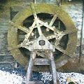
左
横浜市在住のふたご座。カードゲームや雑誌のピンナップ等を中心に活動しているフリーのイラストレーター。流行に疎い仙人のような生活をしています。
電撃文庫
噓つきみーくんと壊れたまーちゃん２
善意の指針は悪意
入間人間
二〇十三年三月二十八日 配信
発行者 塚田正晃
発行所 株式会社アスキー・メディアワークス
〒一〇二─八五八四 東京都千代田区富士見一─八─十九
(C) 2007 HITOMA IRUMA／ASCII MEDIA WORKS
本書（電子版）に掲載されているコンテンツ（ソフトウェア／プログラム／データ／情報を含む）の著作権およびその他の権利は、すべて株式会社アスキー・メディアワークスおよび正当な権利を有する第三者に帰属しています。
法律の定めがある場合または権利者の明示的な承諾がある場合を除き、これらのコンテンツを複製・転載、改変・編集、翻案・翻訳、放送・出版、公衆送信（送信可能化を含む）・再配信、販売・頒布、貸与等に使用することはできません。